La estadística se distribuye en:
Índice
El método estadístico se puede aplicar en diversas áreas, como la administración y la economía, para facilitar la toma de decisiones informadas. Al utilizar datos numéricos y técnicas de análisis, permite elegir la mejor opción posible.
La estadística puede aplicarse en una variedad de contextos, incluyendo juegos de azar, estudios de población, entre otros.
La estadística descriptiva
La estadística descriptiva, como su nombre lo indica, tiene como objetivo describir y resumir los datos. Utiliza medidas como la media, la mediana y la moda para representar la información de forma clara. Para comprenderla correctamente, es fundamental conocer la diferencia entre población y muestra.
Población
La población es el conjunto total de elementos de interés. Incluye a todos los individuos, objetos o mediciones que se desean estudiar. Generalmente, analizar toda la población es difícil o costoso.
Muestra
La muestra es un subconjunto representativo de la población. Se utiliza para analizar datos y obtener conclusiones sobre la población. Debe seleccionarse de manera adecuada para que los resultados sean válidos.
Diferencias entre población y muestra
| Característica | Parámetro (poblacional) | Estadístico (muestral) |
|---|---|---|
| Definición | Describe una característica de la población | Se calcula a partir de una muestra |
| Conjunto al que pertenece | Población | Muestra |
| Naturaleza | Constante (valor fijo) | Variable aleatoria |
| Conocimiento del valor | Generalmente desconocido | Conocido a partir de los datos |
| Propósito | Describe completamente a la población | Estima parámetros poblacionales |
| Ejemplos |
Media poblacional: µ Varianza poblacional: σ² Proporción poblacional: p |
Media muestral: x̄ Varianza muestral: s² Proporción muestral: p̂ |
Media aritmética o Promedio
Definición
La media es el promedio de un conjunto de datos. Representa
el valor central esperado.
Fórmula
$$\bar{x} = \frac{1}{n} \sum_{i=1}^{n} x_i$$
- \( \bar{x} \): Representa la media aritmética de la muestra.
- \( n \): Es el tamaño de la muestra (el número total de observaciones).
- \( \sum_{i=1}^{n} \): Es el símbolo de sumatoria, que indica que se deben sumar todos los valores desde el primero (\( i=1 \)) hasta el último (\( n \)).
- \( x_i \): Representa cada uno de los valores individuales observados en la muestra.
Interpretación
Resume el comportamiento promedio de los datos y es sensible a valores extremos. Se obtiene como la sumatoria de todos los valores observados dividida entre el número total de registros.
Ejemplo 1: Ventas de Coca-Cola por día (Lunes a Viernes)
Ventas diarias registradas (en cajas vendidas): 2, 4, 5, 7, 3
- Vector de ventas: \( \mathbf{ventas} = [2, 4, 5, 7, 3] \)
- Número de días registrados: \( n = 5 \)
- Promedio de ventas diarias: $$\bar{x} = \frac{2 + 4 + 5 + 7 + 3}{5} = \frac{21}{5} = 4.2 \text{ cajas/día}$$
Conclusión: En promedio, se venden
4.2 cajas de Coca-Cola por día.
Uso práctico: Podemos prever las ventas
para los próximos 2 días multiplicando el promedio por el
número de días: \( 4.2 \times 2 \approx 8.4 \) cajas, es
decir, necesitaremos aproximadamente 8 o 9 cajas.
Ejemplo 2: Vida útil de la batería de un auto (kilometraje)
Vida útil medida en kilómetros para 5 baterías de la marca "Toyota": 20,000, 25,000, 40,000, 22,000, 18,000 km
- Vector: \( \mathbf{baterias} = [20000, 25000, 40000, 22000, 18000] \)
- Número de baterías: \( n = 5 \)
- Promedio de kilometraje: $$\bar{x} = \frac{20000 + 25000 + 40000 + 22000 + 18000}{5} = \frac{125000}{5} = 25000 \text{ km}$$
Conclusión: En promedio, cada batería de la marca "Toyota"
dura 25,000 km.
Podemos usar este promedio para prever que si instalamos una
batería nueva y la usamos bajo condiciones similares,
alcanzará aproximadamente 25,000 km antes de
necesitar reemplazo.
Ejemplo 3: Temperatura del clima (°C) durante la semana
Temperaturas diarias (Lunes a Viernes): 23, 31, 24, 12, 31
- Vector: \( \mathbf{clima} = [23, 31, 24, 12, 31] \)
- Número de días: \( n = 5 \)
- Promedio de temperatura: $$\bar{x} = \frac{23 + 31 + 24 + 12 + 31}{5} = \frac{121}{5} = 24.2°C$$
Conclusión: La temperatura promedio durante estos días fue
de
24.2°C.
Podemos usar este promedio para prever que el
sábado la temperatura será aproximadamente
24°C.
Resumen: Muestra vs Población
| Ejemplo | Datos disponibles | Tipo | Por qué |
|---|---|---|---|
| Ventas de Coca-Cola | 5 días registrados | Muestra | No conocemos todas las ventas del año, solo 5 días. |
| Vida útil de la batería | 5 baterías medidas | Muestra | No conocemos todas las baterías producidas, solo 5. |
| Temperatura del clima | 5 días registrados | Muestra | No tenemos todas las temperaturas del año, solo 5 días. |
Nota: Si hubiéramos medido todas las ventas, todas las baterías o todas las temperaturas, entonces los datos serían una población.
Comparación: Histograma vs Distribución Normal
Este GIF ilustra cómo los datos reales forman un histograma y cómo, al analizarlos, se pueden comparar con una distribución normal ideal en forma de campana.
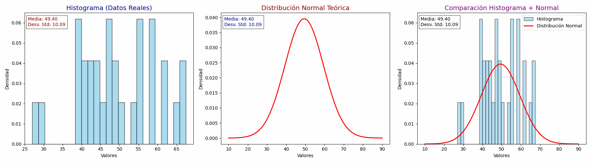
Comparación visual entre datos reales (histograma, barras azules) y modelo ideal (campana normal, curva roja). Permite observar la forma, el centro y la dispersión de los datos.
Media (Promedio) vs Mediana
| Medida | ¿Cuándo usarla? | ¿Cuándo NO usarla? | Ejemplo |
|---|---|---|---|
|
Media (Promedio) |
Cuando los datos son simétricos y no existen valores extremos. | Cuando hay outliers (valores muy grandes o muy pequeños). |
Ventas diarias: 3, 4, 5, 4, 5 → Media = 4.2 (representa bien el comportamiento) |
| Mediana | Cuando existen datos extremos o distribuciones sesgadas. | Cuando los datos son perfectamente simétricos (media y mediana coinciden). |
Sueldos: 8,000 – 9,000 – 10,000 – 10,500 – 1,000,000 →
Mediana = 10,000 (representa al grupo) |
Conclusión: El promedio es útil cuando los datos son estables y parejos, pero si hay valores extremos, la mediana describe mejor la realidad.
Varianza y Desviación estándar
Definición
La varianza y la desviación estándar miden qué tan dispersos
están los datos respecto a la media. Indican si los valores
están muy juntos o muy separados.
Fórmulas
$$s^2 = \frac{1}{n - 1} \sum_{i=1}^{n} (x_i - \bar{x})^2$$
$$s = \sqrt{s^2}$$
- \( s^2 \): Varianza de la muestra, mide la dispersión de los datos.
- \( s \): Desviación estándar, es la raíz cuadrada de la varianza.
- \( x_i \): Cada valor individual observado.
- \( \bar{x} \): Media aritmética de la muestra.
- \( n \): Número total de observaciones.
Interpretación de la varianza y la desviación estándar
| Medida | Interpretación |
|---|---|
| Varianza ( \( s^2 \) ) |
Mide qué tan dispersos están los datos respecto a la
media, pero en unidades elevadas al cuadrado.
• Valores pequeños indican datos muy concentrados y un proceso estable. • Valores grandes indican alta variabilidad y posibles problemas de control o calidad. |
| Desviación estándar ( \( s \) ) |
Indica qué tan lejos, en promedio, se encuentran los
datos respecto a la media, usando las mismas unidades
que la variable original.
• Valores pequeños indican alta precisión y consistencia. • Valores grandes indican dispersión, inestabilidad o falta de control en el proceso. |
Ejemplo 1: Ventas de Coca-Cola (variación cercana al promedio)
Ventas diarias (cajas): 2, 4, 5, 7, 3
- Media: \( \bar{x} = 4.2 \)
- Varianza: \( s^2 \approx 3.70 \)
- Desviación estándar: \( s \approx 1.9 \)
Interpretación:
La mayoría de las ventas diarias están a una distancia
aproximada de
±2 cajas respecto al promedio.
Conclusión:
Las ventas son relativamente estables. No hay días
extremadamente bajos ni extremadamente altos. La variación
es
moderada y controlada.
Ejemplo 2: Control de calidad en llenado de botellas de Coca-Cola (1 litro)
Supongamos que una máquina debe llenar botellas con 1 litro exacto.
Contenido medido (litros): 0.95, 1.02, 1.10, 0.90, 1.03
- Media: \( \bar{x} = 0.99985 \) litro
- Varianza: \( s^2 \approx 0.00695 \)
- Desviación estándar: \( s \approx 0.083 \) litros
- Desviación estándar: Alta
Interpretación:
Aunque el promedio es correcto (1 litro), los valores están
muy alejados del promedio.
Conclusión:
La varianza es alta, lo que indica
problemas de calidad: algunas botellas están
subllenadas y otras sobrellenadas. El promedio engaña, pero
la desviación revela el problema real.
Ejemplo 3: Botellas bien controladas (desviación estándar pequeña)
Contenido medido (litros): 0.99, 1.00, 1.01, 1.00, 1.00
- Media: \( \bar{x} = 0.99998 \) litro
- Varianza: \( s^2 \approx 0.00005 \)
- Desviación estándar: \( s \approx 0.007 \) litros
- Desviación estándar: Muy pequeña
Interpretación:
Todas las botellas están muy cerca del valor esperado.
Conclusión:
La varianza es baja, lo que indica un proceso
estable, preciso y de buena calidad.
Conclusión general
| Desviación estándar | Qué significa | Ejemplo real |
|---|---|---|
| Pequeña | Datos muy cercanos a la media | Botellas llenadas casi exactamente a 1 litro |
| Grande | Datos muy dispersos | Botellas con sobrellenado y subllenado |
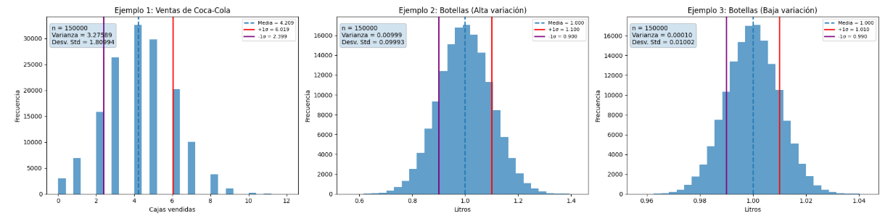
Conclusión general
| Caso | Varianza y desviación estándar | Qué nos dice el resultado | Ejemplo real |
|---|---|---|---|
|
Ejemplo 1 (Ventas) |
Varianza = 3.27589 Desviación estándar = 1.80994 |
El promedio de ventas es aceptable, pero existe mucha variación entre días. Las ventas no son estables. | Algunos días se venden muchas cajas de Coca-Cola y otros muy pocas, lo que dificulta planear inventario y promociones. |
|
Ejemplo 2 (Alta variación) |
Varianza = 0.00999 Desviación estándar = 0.09993 |
Aunque el promedio es cercano a 1 litro, las botellas presentan mucha diferencia entre sí. El proceso no está bien controlado. | En un mes hubo botellas subllenadas y otras sobrellenadas, lo que genera desperdicio y posibles quejas de clientes. |
|
Ejemplo 3 (Baja variación) |
Varianza = 0.00010 Desviación estándar = 0.01002 |
Los valores están muy cerca del promedio, lo que indica un proceso estable y bien controlado. | Las botellas se llenan casi exactamente a 1 litro, mejorando la calidad y reduciendo pérdidas. |
Mediana
Definición
La mediana es el valor que divide al conjunto de datos ordenados en dos partes
iguales: el 50% de las observaciones queda por debajo y el 50% por encima.
Propiedades
- No se ve afectada por valores extremos (outliers).
- Es una medida robusta de tendencia central.
Fórmula
Sea un conjunto de datos ordenado \( x_{(1)}, x_{(2)}, \dots, x_{(n)} \):
- Si \( n \) es impar: \[ \text{Mediana} = x_{\left(\frac{n+1}{2}\right)} \]
- Si \( n \) es par: \[ \text{Mediana} = \frac{x_{\left(\frac{n}{2}\right)} + x_{\left(\frac{n}{2}+1\right)}}{2} \]
Interpretación
Es especialmente útil cuando los datos presentan asimetría o valores extremos, ya que representa mejor al conjunto que la media en estos casos. Comparar media y mediana permite identificar sesgo en la distribución.
Ejemplo: Ingresos mensuales de un grupo de personas
Ingresos registrados (en pesos): 8,000; 9,000; 10,000; 10,500; 100,000
- Datos ordenados: \( [8{,}000,\ 9{,}000,\ 10{,}000,\ 10{,}500,\ 100{,}000] \)
- Número de observaciones: \( n = 5 \) (impar)
- Cálculo de la posición de la mediana: \[ \frac{n + 1}{2} = \frac{5 + 1}{2} = \frac{6}{2} = 3 \]
- Mediana: \[ \text{Mediana} = x_{(3)} = 10{,}000 \]
Conclusión: Aunque existe un ingreso extremadamente alto
(100,000), la mediana indica que el ingreso típico del grupo es de
$10,000.
Uso práctico: En conjuntos de datos con valores atípicos,
la mediana es más representativa que la media.
Tratamiento de valores atípicos (outliers)
| Situación | ¿Se elimina el outlier? | Tratamiento estadístico recomendado | Ejemplo estadístico real |
|---|---|---|---|
| Error de medición o captura | Sí, puede eliminarse o corregirse | Verificación del dato original, corrección o eliminación documentada del valor atípico | Un ingreso registrado como \(1{,}000{,}000\) cuando el valor real era \(10{,}000\) |
| Observación real pero extrema | No, no debe eliminarse | Uso de medidas robustas como la mediana o el rango intercuartílico (RIC) \[ \text{RIC} = Q_3 - Q_1 \] | Ingresos: \(8{,}000,\ 9{,}000,\ 10{,}000,\ 10{,}500,\ 100{,}000\) |
| Alta influencia en la media | No, se conserva el dato | Comparar media y mediana para detectar asimetría y sesgo | Media \( \gg \) mediana debido a un ingreso excepcionalmente alto |
| Análisis predictivo o modelado | No, pero se atenúa su efecto | Transformaciones estadísticas como: \[ y = \log(x) \] | Ingresos transformados a escala logarítmica para reducir asimetría Antes de transformar: \[ [8{,}000,\ 9{,}000,\ 10{,}000,\ 10{,}500,\ 100{,}000] \] Después de aplicar log₁₀: \[ [3.90,\ 3.95,\ 4.00,\ 4.02,\ 5.00] \] La transformación logarítmica comprime los valores extremos y reduce la asimetría sin eliminar observaciones. |
| Validación del impacto | No, se analiza su efecto | Análisis con y sin outliers para evaluar cambios en las conclusiones | Comparar resultados descriptivos incluyendo y excluyendo el valor extremo |
Conclusión estadística: Los outliers forman parte de los datos reales y su eliminación solo es válida cuando existe una justificación técnica. En la mayoría de los casos, deben analizarse y tratarse con métodos estadísticos adecuados.
Uso de transformaciones logarítmicas en análisis de datos
| Base del logaritmo | Forma matemática | ¿Para qué se usa? | Ejemplo práctico | Interpretación |
|---|---|---|---|---|
| Logaritmo base 10 | \( \log_{10}(x) \) | Reducir asimetría en datos económicos, ingresos, ventas, población | Ingresos mensuales de personas con valores muy altos | Cada unidad representa un cambio de orden de magnitud (10×) |
| Logaritmo natural | \( \ln(x) \) | Modelos estadísticos, econometría, regresión, forecasting | Modelos de demanda, inflación, crecimiento de ingresos | Cambios pequeños se interpretan como tasas de crecimiento aproximadas |
| Logaritmo base 2 | \( \log_{2}(x) \) | Información, machine learning, complejidad, entropía | Árboles de decisión, reducción de incertidumbre | Cada unidad representa duplicar o dividir entre 2 |
| Log general (cualquier base) | \( \log_b(x) \) | Estabilizar varianza y reducir el impacto de outliers | Forecast de ventas con valores extremos | La base no cambia la forma, solo la escala |
Relación entre asimetría y medidas de tendencia central
En distribuciones simétricas, se cumple:
Mo = Me = x̄
Esto significa que la moda, la mediana y la media coinciden en el mismo valor. Los datos están equilibrados y el promedio representa correctamente al conjunto.
En distribuciones asimétricas positivas (As > 0), se cumple:
Mo < Me < x̄
Aquí la media es mayor porque existen valores grandes que la “jalan” hacia la derecha. La mediana queda en medio y la moda es el valor más frecuente. Esto ocurre, por ejemplo, en ingresos o ventas con algunos valores muy altos.
En distribuciones asimétricas negativas (As < 0), se cumple:
Mo > Me > x̄
En este caso, algunos valores muy pequeños empujan la media hacia abajo. La moda queda a la derecha, la mediana al centro y la media es la menor.
Simbología:
Mo: Moda (el valor que más se repite).
Me: Mediana (el valor central al ordenar los datos).
x̄: Media o promedio.
As: Coeficiente de asimetría, indica hacia qué lado se inclinan los datos.
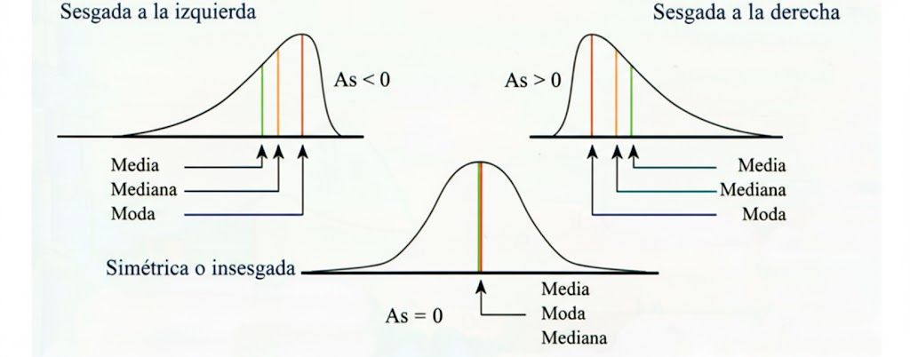
Ejemplo de sesgo usando litros de bebida
Supongamos que una máquina debe llenar botellas con 1 litro exacto de una bebida como :contentReference[oaicite:0]{index=0}. Dependiendo de cómo se distribuyen los errores de llenado, podemos observar distintos tipos de sesgo.
| Tipo de distribución | Muestras (litros) | Qué ocurre | Interpretación | ¿La comprarías? |
|---|---|---|---|---|
|
Sesgo negativo (cola a la izquierda) |
0.85, 0.90, 0.92, 0.98, 1.00 | Varias botellas tienen menos de 1 litro |
Se pierde calidad para el cliente; hay subllenado
Mo > Me > Media |
No, porque muchas botellas vienen con menos producto |
|
Distribución normal (sin sesgo) |
0.99, 1.00, 1.01, 1.00, 0.99 | Todas las botellas están muy cerca de 1 litro |
Proceso estable y bien controlado
Mo = Me = Media |
Sí, el llenado es consistente |
|
Sesgo positivo (cola a la derecha) |
1.00, 1.02, 1.05, 1.10, 1.15 | Varias botellas tienen más de 1 litro |
El cliente gana, pero la empresa pierde producto
Mo < Me < Media |
Sí, aunque no es ideal para la empresa |
Conclusión: Aunque el promedio pueda ser cercano a 1 litro en los tres casos, el sesgo revela si el problema real es subllenado, llenado correcto o sobrellenado. Por eso, no basta con revisar solo la media.
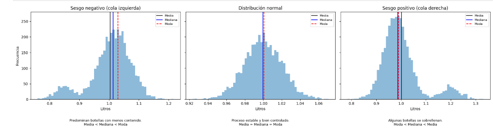
Función de densidad de la media muestral
La función de densidad
\( f_{\bar X}(x) = \frac{1}{\sqrt{2\pi(\sigma/\sqrt{n})}} \exp\left( -\frac{(x-\mu)^2}{2(\sigma^2/n)} \right), \quad -\infty < x < \infty \)
describe la distribución de la media muestral \(\bar X\). Esto significa que la media calculada a partir de una muestra no es un valor fijo, sino una variable aleatoria.
La media de esta distribución es \(\mu\), es decir, el promedio poblacional verdadero. La dispersión está dada por \(\sigma / \sqrt{n}\), llamada error estándar, que mide qué tanto puede variar la media muestral alrededor de \(\mu\).
Respecto a si esta distribución es leptocúrtica, platicúrtica o mesocúrtica:
Esta función de densidad corresponde a una distribución normal. La distribución normal es mesocúrtica, lo que significa que tiene una curtosis “normal”, sin colas excesivamente largas ni demasiado planas. No es leptocúrtica (no es más puntiaguda que la normal). No es platicúrtica (no es más achatada que la normal).
Cuando el tamaño de muestra n aumenta, el valor \(\sigma/\sqrt{n}\) disminuye, haciendo que la curva sea más alta y más angosta, pero sin cambiar su tipo de curtosis: sigue siendo normal y mesocúrtica.
Conclusión: La función de densidad de la media muestral es siempre normal (si la población es normal o por el Teorema Central del Límite), y por lo tanto es mesocúrtica, independientemente del tamaño de la muestra.
Ejemplo aplicado a retail: control de inventario diario
Supongamos una tienda retail que vende un producto básico (por ejemplo, botellas de agua). El inventario ideal al cierre del día debería ser cercano a 100 unidades. Analizamos tres escenarios usando curtosis y sesgo.
| Tipo de distribución | Inventario diario (unidades) | Tipo de curtosis | Qué ocurre | Interpretación en retail | Decisión |
|---|---|---|---|---|---|
|
Sesgo negativo (cola a la izquierda) |
60, 70, 85, 95, 100 | Leptocúrtica | Varios días el inventario cae muy por debajo del nivel esperado. |
Hay quiebres de stock frecuentes. Se pierden ventas y clientes.
Mo > Me > Media |
Ajustar pedidos y aumentar stock de seguridad. |
|
Distribución normal (sin sesgo) |
95, 98, 100, 102, 99 | Mesocúrtica | El inventario se mantiene estable alrededor del objetivo. |
Buen balance entre ventas y reposición.
Mo = Me = Media |
Situación ideal, proceso bien controlado. |
|
Sesgo positivo (cola a la derecha) |
100, 110, 130, 150, 170 | Platicúrtica | Hay muchos días con exceso de inventario. |
Capital inmovilizado, costos de almacenamiento y riesgo de merma.
Mo < Me < Media |
Reducir pedidos o mejorar el pronóstico de demanda. |
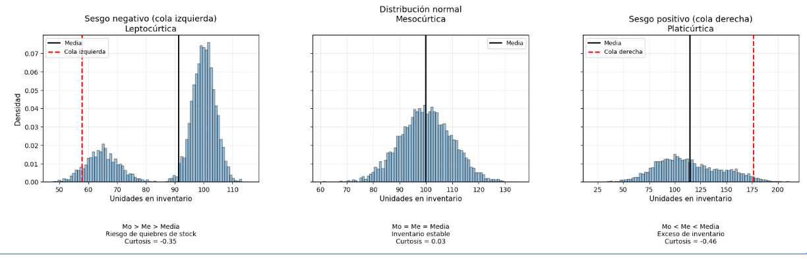
Conclusión: En retail no basta con tener un promedio “correcto” de inventario. Una varianza baja y distribución mesocúrtica indican un control eficiente. Sesgos negativos generan pérdidas por desabasto, mientras que sesgos positivos incrementan costos por sobreinventario.
Proporción muestral
Se considera un experimento con dos posibles resultados:
- Éxito
- Fracaso
La proporción muestral se define como:
p̂ =
Número de éxitos
n
donde:
- n: tamaño de la muestra
- Número de éxitos: cantidad de resultados exitosos en la muestra
Ejemplo
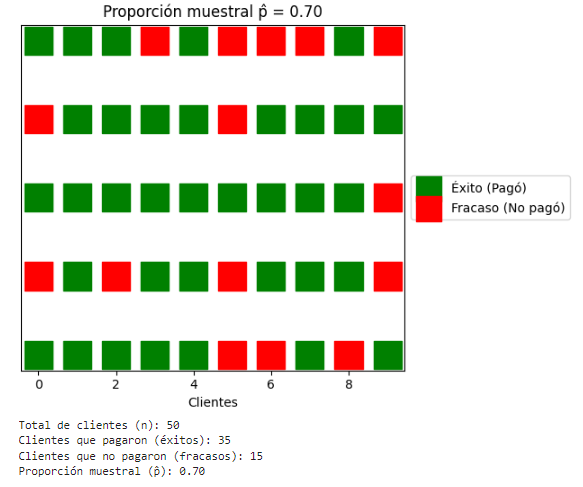
- Total de clientes (n): 50
- Clientes que pagaron (éxitos): 35
- Clientes que no pagaron (fracasos): 15
p̂ =
35
50
p̂ = 0.70
Esto significa que el 70% de los clientes en la muestra tuvieron un resultado exitoso, es decir, 7 de cada 10 clientes pagaron.
Distribución muestral de la proporción
Sea X el número de éxitos en una muestra aleatoria de tamaño n, donde cada observación tiene probabilidad de éxito p.
La proporción muestral se define como:
p̂ =
X
n
donde:
- X: número de éxitos en la muestra
- n: tamaño de la muestra
- p: proporción poblacional de éxito
Distribución de la proporción muestral
La proporción muestral p̂ es una variable aleatoria con:
E(p̂) = p
Var(p̂) =
p(1 − p)
n
Si el tamaño de la muestra n es suficientemente grande, entonces la proporción muestral se puede aproximar por una distribución normal:
p̂ ∼ N
p, p(1 − p)
n
Interpretación
- La proporción muestral p̂ es una variable aleatoria.
- Se concentra alrededor de la proporción poblacional p.
- Su variabilidad disminuye conforme aumenta el tamaño de la muestra n.

| Concepto | Qué significa | Ejemplo con clientes | Qué nos dice | Interpretación sencilla |
|---|---|---|---|---|
| Tamaño de muestra (n) | Número total de personas u observaciones que analizamos. | 50 clientes | Es la base sobre la que se calcula todo. | Entre más clientes observes, más confiables serán los resultados. |
| Éxitos (X) | Casos que cumplen lo que queremos medir. | 35 clientes pagaron | Representa los resultados favorables. | Son los clientes que sí hicieron el pago. |
| Proporción muestral (p̂) | Porcentaje de éxitos dentro de la muestra. | p̂ = 35 / 50 = 0.70 | Resume el comportamiento observado. | Aproximadamente el 70% de los clientes paga. |
| Valor esperado de p̂ | Promedio al repetir el estudio muchas veces. | E(p̂) = p | Coincide con la proporción real. | La proporción observada tiende al valor real con el tiempo. |
| Variabilidad de p̂ | Qué tanto cambia la proporción entre muestras. | Depende de p y de n | Disminuye al aumentar n. | Con más clientes, el porcentaje cambia menos. |
| Forma de la distribución | Cómo se distribuyen los valores de p̂. | Se parece a una campana. | Aproximadamente normal si n es grande. | La mayoría de los resultados se agrupan cerca del 70%. |
Del muestreo a la inferencia
La inferencia estadística no se realiza directamente sobre los datos crudos. Primero es necesario un análisis previo que permita entender la estructura de la población, el proceso de muestreo y el comportamiento de las medidas resumen. Este análisis prepara el camino para aplicar modelos probabilísticos de forma correcta.
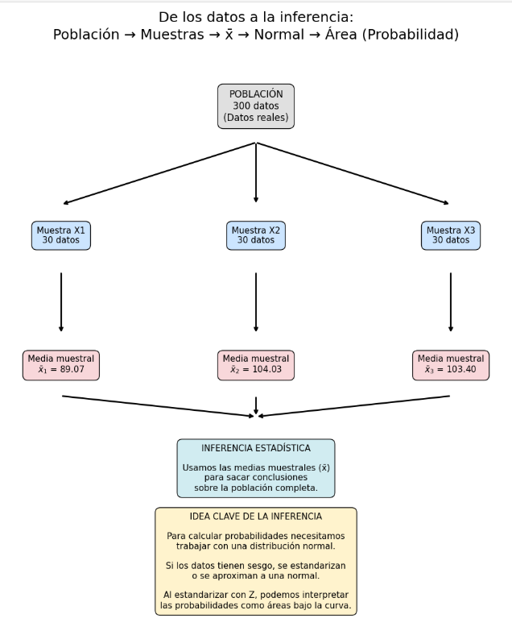
La estadística inferencial
La estadística inferencial tiene como objetivo obtener conclusiones sobre una población a partir de una muestra. No es obligatorio que los datos sigan una distribución normal; sin embargo, cuando el tamaño de la muestra es suficientemente grande (n > 30), la distribución de la media muestral tiende a aproximarse a una distribución normal según el Teorema Central del Límite.
Estimación de parámetros - Conceptos clave
| Concepto | Qué significa | Ejemplo sencillo | Qué nos dice | Interpretación práctica | Tip / Nota |
|---|---|---|---|---|---|
| Tamaño de muestra (n) | Número de observaciones que analizamos. | 50 estudiantes | Base para calcular todo lo demás. | Más estudiantes = estimación más confiable. | Entre más grande n, más cercano al valor real. |
| Media muestral (x̄) | Promedio calculado en la muestra. | x̄ = 78 en la calificación de 50 estudiantes | Estimación del promedio poblacional μ. | Probablemente la nota promedio de todos es ~78. | Útil para decidir políticas o acciones basadas en promedios. |
| Proporción muestral (p̂) | Porcentaje de casos favorables en la muestra. | p̂ = 35/50 = 0.70 → 70% | Nos dice la frecuencia relativa en la población. | 70% de los clientes cumple la meta. | Base para calcular intervalos de confianza y predicciones. |
| Error estándar (SE) | Variación esperada de la estimación entre muestras. | SE = σ/√n | Indica cuán precisa es la estimación. | SE pequeño = más confianza en la media muestral. | Disminuye al aumentar n. |
| Intervalo de confianza (IC) | Rango donde probablemente está el parámetro. | IC 95%: [75, 81] | Da un rango de valores confiables para μ o p. | Con 95% de seguridad, el promedio real está entre 75 y 81. | Mientras más grande n, más estrecho el IC. |
| Sesgo del estimador | Diferencia entre valor esperado y valor real. | x̄ tiende a μ, pero puede desviarse un poco | Nos dice si la estimación es confiable. | Sesgo cercano a 0 = buena estimación. | Muestras representativas minimizan el sesgo. |
Pruebas de hipótesis
Esta aproximación permite aplicar métodos de inferencia paramétrica incluso cuando la población original no presenta normalidad, siempre que se cumplan los supuestos básicos del modelo estadístico utilizado.
La inferencia estadística se basa en la formulación de pruebas de hipótesis. Toda prueba comienza con una hipótesis nula (H0), que representa una afirmación de igualdad o ausencia de efecto, y una hipótesis alternativa (H1 o Ha), que indica la existencia de una diferencia o efecto significativo.
Para evaluar estas hipótesis se utilizan estadísticos de prueba, como la prueba Z y la prueba t de Student, los cuales permiten comparar un valor observado contra una distribución teórica bajo el supuesto de la hipótesis nula.
La decisión estadística se toma utilizando un nivel de significancia α, que representa la probabilidad de cometer un error tipo I (rechazar H0 cuando es verdadera), y el parámetro β, que representa la probabilidad de cometer un error tipo II (no rechazar H0 cuando es falsa).
Guía descargable de pruebas estadísticas
Este documento resume las principales pruebas de hipótesis, explica en qué casos se usa cada una y qué condiciones deben cumplirse, por ejemplo si la varianza es conocida o no, si se comparan una o dos muestras, o si los datos están relacionados.
| Concepto | Qué significa | Ejemplo con clientes | Qué nos dice | Interpretación sencilla |
|---|---|---|---|---|
| Hipótesis nula (H0) | Afirmación inicial que se asume verdadera. | La proporción de clientes que pagan es 60% | Sirve como referencia para comparar la evidencia de la muestra. | Se asume que todo está como se esperaba hasta que los datos digan lo contrario. |
| Hipótesis alternativa (H1) | Afirmación que queremos probar y que contradice H0. | La proporción de clientes que pagan no es 60% | Indica el efecto o cambio que estamos evaluando. | Queremos ver si hay evidencia de que la proporción es diferente. |
| Error Tipo I (α) | Rechazar H0 cuando H0 es verdadera. | Decimos que la proporción no es 60% cuando en realidad sí lo es. | Es la probabilidad de concluir un efecto que no existe. | Falsos positivos: creemos que hay un cambio cuando no lo hay. |
| Error Tipo II (β) | No rechazar H0 cuando H0 es falsa. | Decimos que la proporción es 60% cuando en realidad no lo es. | No detectamos un efecto que sí existe. | Falsos negativos: no vemos un cambio que sí pasó. |
| Estadístico de prueba | Valor calculado a partir de la muestra que compara con la distribución bajo H0. | Z = 1.29 | Indica qué tan lejos está la muestra de lo esperado bajo H0. | Si es muy grande o muy pequeño, H0 puede ser rechazada. |
| Valor p (p-value) | Probabilidad de obtener un resultado igual o más extremo que el observado si H0 es cierta. | p = 0.20 | Nos ayuda a decidir si rechazamos H0. | Si p < 0.05, rechazamos H0; si no, no tenemos suficiente evidencia. |
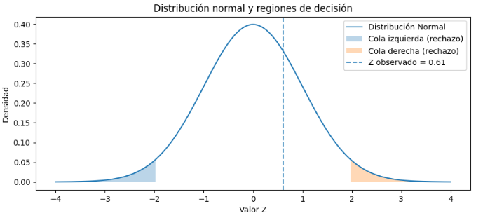
Situaciones posibles en una prueba de hipótesis
Al realizar una prueba de hipótesis existen cuatro escenarios posibles, dependiendo de la decisión que tomamos con los datos y de la realidad.
Si H0 es verdadera y no la rechazamos, tomamos una decisión correcta.
Si H0 es verdadera pero la rechazamos, cometemos un Error Tipo I.
Si H0 es falsa y no la rechazamos, cometemos un Error Tipo II.
Si H0 es falsa y la rechazamos, tomamos una decisión correcta.
Ejemplo sencillo:
H0: “El sistema funciona bien”.
Rechazar H0 es decir “el sistema falla”.

Error Tipo I (α)
Ocurre cuando rechazamos H0 siendo verdadera.
α = P(rechazar H0 | H0 verdadera)
Es una falsa alarma: creemos que hay un problema cuando no lo hay.
Ejemplo sencillo:
Un detector de humo suena cuando no hay fuego.
El sistema dijo “hay problema” cuando todo estaba bien.
Error Tipo II (β)
Ocurre cuando no rechazamos H0 siendo falsa.
β = P(no rechazar H0 | H0 falsa)
Es un falso negativo: no detectamos un problema real.
Ejemplo sencillo:
El detector de humo no suena aunque sí hay fuego.
El problema existe, pero no lo vimos.
Nivel de significancia (α)
El nivel de significancia α es la probabilidad máxima que aceptamos de cometer un Error Tipo I.
Se fija antes de ver los datos.
Valores comunes: 0.10, 0.05, 0.01
Ejemplo sencillo:
α = 0.05 significa:
“Acepto equivocarme como máximo 5 de cada 100 veces
levantando una falsa alarma”.
Relación entre α y β (corrección importante)
α y β NO son proporcionales directos.
Existe un compromiso entre ellos:
- Si disminuyes α, normalmente aumenta β
- Si aumentas α, normalmente disminuye β
Esto ocurre cuando el tamaño de muestra se mantiene fijo.
Ejemplo sencillo:
Si eres muy estricto para acusar a alguien (α pequeño),
es más probable que dejes pasar a un culpable (β grande).
Potencia de la prueba
La potencia mide qué tan buena es la prueba para detectar un efecto real.
Potencia = 1 − β
Una prueba potente detecta problemas cuando realmente existen.
Ejemplo sencillo:
Un examen médico con alta potencia
detecta la enfermedad cuando el paciente sí está enfermo.
Tamaño de muestra y errores
Aumentar el tamaño de muestra reduce α y β al mismo tiempo.
Por eso, pruebas con más datos son más confiables.
Ejemplo sencillo:
No es lo mismo decidir con 5 clientes que con 1,000 clientes.
Con más datos, nos equivocamos menos.
El nivel de significancia α no dice si algo es verdad o mentira.
Dice cuánto riesgo estás dispuesto a aceptar de equivocarte con una falsa alarma.
No existe un α perfecto para todos los casos. Depende del contexto y de las consecuencias del error.
¿Existe una fórmula para saber cuántos datos necesito?
Sí. El tamaño de muestra necesario depende de:
- El nivel de significancia α
- La potencia deseada (1 − β)
- El tamaño del efecto que queremos detectar
De forma general, el tamaño de muestra sigue esta relación:
n ∝
( z1−α + z1−β )²
————————————————
(tamaño del efecto)²
Esto significa que:
- Un α más pequeño requiere más datos
- Una mayor potencia requiere más datos
- Detectar efectos pequeños requiere muchos más datos
Valor-p (p-value) – Pruebas de Hipótesis
| Elemento | Definición | Fórmula / Expresión | Qué significa | Regla de decisión | Interpretación práctica |
|---|---|---|---|---|---|
| Valor-p | Probabilidad, suponiendo que H₀ es verdadera, de obtener un estadístico tan extremo o más extremo que el observado. | valor-p = P(estadístico tan extremo como el observado ∣ H₀) | Mide la evidencia contra la hipótesis nula. |
Si valor-p ≤ α → Rechazar H₀ Si valor-p > α → No rechazar H₀ |
Entre más pequeño el valor-p, mayor evidencia de que H₀ no es válida. |
| Ejemplo | Comparación contra un nivel de significancia | valor-p = 0.03, α = 0.05 | La probabilidad bajo H₀ es muy baja | 0.03 ≤ 0.05 → Se rechaza H₀ | El resultado es estadísticamente significativo |
Pasos para realizar una prueba de hipótesis
-
Plantear la hipótesis nula (H0) y la hipótesis alternativa
(H1).
Definir claramente qué se asume como verdadero y qué se quiere poner a prueba. -
Elegir el nivel de significancia (α).
Determinar el nivel de riesgo aceptable de cometer un error Tipo I. -
Seleccionar la prueba estadística adecuada.
Elegir entre prueba Z, t de Student, chi-cuadrada, F, etc., según el tipo de dato y los supuestos. -
Calcular el estadístico de prueba.
Obtener el valor numérico que resume la evidencia de la muestra. -
Determinar la región de rechazo o el valor p.
Comparar el estadístico con valores críticos o evaluar el valor p. -
Tomar una decisión estadística.
Rechazar o no rechazar la hipótesis nula según la evidencia. -
Interpretar el resultado en el contexto del problema.
Traducir la decisión estadística a conclusiones prácticas del negocio o estudio.
Ejemplo 1
Ejercicio (Retail – Farmacias): ¿Aumentó la merma en inventario?
En una cadena de farmacias, la merma diaria promedio ha sido históricamente de 30 piezas por día, con una desviación estándar de 8 piezas.
Tras un cambio en el proveedor logístico, se toma una muestra de 40 días y se observa una merma promedio de 34 piezas.
La pregunta es:
¿Existe evidencia estadística suficiente para concluir que la merma aumentó?
1. Planteamiento de hipótesis
-
Hipótesis nula (H0):
La merma promedio diaria no ha cambiado.
H0: μ = 30 -
Hipótesis alternativa (H1):
La merma promedio diaria es mayor que antes.
H1: μ > 30
Esta es una prueba unilateral a la derecha, porque solo nos interesa saber si la merma aumentó.
2. Nivel de significancia
Se fija un nivel de significancia de:
α = 0.05
Esto significa que aceptamos como máximo un 5% de riesgo de concluir que la merma aumentó cuando en realidad no lo hizo (error Tipo I).
3. Prueba estadística seleccionada
Se utiliza una prueba Z para una media porque:
- La desviación estándar poblacional es conocida (σ = 8).
- El tamaño de muestra es suficientemente grande (n = 40).
4. Estadístico de prueba
La fórmula del estadístico Z es:
Z = ( x̄ − μ0 ) / ( σ / √n )
Donde:
- x̄ = 34 (media observada)
- μ0 = 30 (media bajo H0)
- σ = 8
- n = 40
Sustituyendo:
Z = (34 − 30) / (8 / √40)
Z = 4 / (8 / 6.32)
Z ≈ 4 / 1.26 ≈ 3.17
5. Región crítica
Para una prueba unilateral con α = 0.05, el valor crítico es:
Zα = 1.645
La región de rechazo es:
Z > 1.645
6. Decisión estadística
El valor calculado es:
Z = 3.17
Como:
3.17 > 1.645
Se rechaza la hipótesis nula H0.
7. Conclusión e interpretación
Con un nivel de significancia del 5%, existe evidencia estadística suficiente para concluir que la merma promedio diaria aumentó después del cambio en el proveedor logístico.
El aumento observado no puede atribuirse únicamente a la variabilidad normal del proceso.
Interpretación operativa:
El área de inventarios tiene fundamentos estadísticos para revisar
y corregir el proceso logístico, ya que el incremento en merma
es real y no solo una fluctuación aleatoria.

Ejemplo2
Aplicación de la fórmula de tamaño de muestra
Supón que analizas clientes y planteas las siguientes hipótesis:
H0: el 60% de los clientes paga
H1: la proporción de clientes que paga es diferente
Esto corresponde a una prueba bilateral de proporciones.
Datos que definimos antes del análisis
Antes de analizar los datos, el analista o el negocio debe tomar decisiones conscientes sobre el riesgo y la sensibilidad del estudio. Estos valores no los calcula la estadística: se definen con criterio.
-
Nivel de significancia (α): 0.05
Se elige porque el negocio acepta como máximo un 5% de falsas alarmas. Es decir, solo 5 de cada 100 veces estaríamos dispuestos a decir que “algo cambió” cuando en realidad no cambió.
Ejemplo: no queremos cambiar políticas de cobranza por un simple ruido en los datos. -
Potencia deseada (1 − β): 80%
Se define porque queremos que, si el cambio realmente existe, la prueba lo detecte la mayoría de las veces. Un 80% significa que 8 de cada 10 veces encontraremos el cambio real.
Ejemplo: no queremos una prueba tan débil que casi nunca detecte problemas reales. -
Cambio mínimo que queremos detectar: 10%
Este valor se define por impacto en el negocio. Cambios pequeños (1% o 2%) no justifican acciones, pero un cambio del 10% sí tiene consecuencias importantes.
Ejemplo: pasar de 60% a 50% de clientes que pagan es un problema serio que sí queremos detectar.
Idea clave:
Primero definimos cuánto riesgo aceptamos y qué cambios nos importan.
Después, la estadística nos dice cuántos datos necesitamos.
- Nivel de significancia (α): 0.05
- Potencia deseada (1 − β): 80%
- Cambio mínimo que queremos detectar: 10%
El cambio del 10% significa que queremos detectar si la proporción real se mueve aproximadamente de 0.60 a 0.70 (o 0.50).
Fórmula general para tamaño de muestra (proporciones)
n =
( z1−α/2 + z1−β )² · p · (1 − p)
——————————————————————————
d²
Donde:
- z1−α/2: valor crítico para α = 0.05 → 1.96
- z1−β: valor para potencia 80% → 0.84
- p: proporción bajo H0 → 0.60
- d: cambio mínimo detectable → 0.10
Sustitución paso a paso
(1.96 + 0.84)² = 2.8² = 7.84
p(1 − p) = 0.60 × 0.40 = 0.24
d² = 0.10² = 0.01
n = (7.84 × 0.24) / 0.01 = 188.16
Redondeando:
n ≈ 180 – 190 clientes
Interpretación sencilla
Con menos de 180 clientes, el resultado puede ser inestable.
Con alrededor de 180 clientes, la prueba tiene buena probabilidad
de detectar un cambio real del 10%.
No significa que siempre acertará, pero el riesgo de error
está controlado.
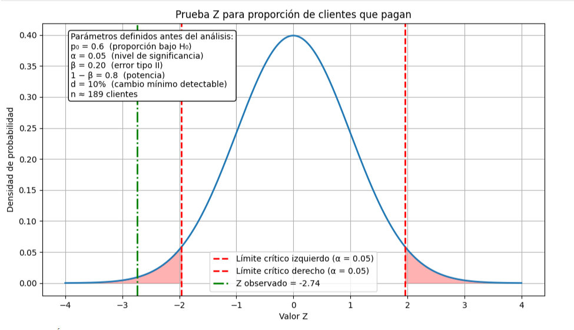
CONCLUSIÓN Con el nivel de significancia α = 0.05 y una potencia del 80%, la evidencia es suficiente para RECHAZAR H0. El cambio observado es real y no una falsa alarma.
En palabras simples:
Conclusión del ejemplo
En este problema analizamos si la proporción de clientes que pagan, originalmente estimada en 60%, ha cambiado de forma relevante. Para ello se planteó una prueba de hipótesis bilateral, donde se definió que solo interesa detectar cambios de al menos 10 puntos porcentuales, ya que variaciones menores no justifican acciones operativas.
Antes de analizar los datos, se establecieron de manera consciente las reglas de decisión del estudio:
- Nivel de significancia (α = 0.05): se acepta como máximo un 5% de falsas alarmas, es decir, no concluir que existe un cambio cuando en realidad no lo hay.
- Potencia de la prueba (1 − β = 80%): se busca que, si el cambio del 10% realmente existe, la prueba tenga alta probabilidad de detectarlo.
Con estas condiciones, el análisis estadístico indica que se necesitan aproximadamente 180 clientes para que la prueba sea confiable. Este tamaño de muestra equilibra dos riesgos fundamentales: evitar rechazar la hipótesis nula por simple variabilidad aleatoria y no pasar por alto un cambio real que tendría impacto en el negocio.
Interpretación final:
Si con una muestra cercana a 180 clientes no se rechaza la hipótesis nula,
la evidencia sugiere que no existe un cambio real del 10% y que las
diferencias observadas probablemente se deben al azar o a falsas alarmas.
En cambio, si se rechaza la hipótesis nula bajo estas condiciones,
podemos afirmar con un riesgo controlado que la proporción de clientes
que pagan sí ha cambiado de manera significativa,
justificando la toma de decisiones o ajustes en la estrategia.
Pruebas no Parametricas
Las pruebas no paramétricas son técnicas estadísticas que no requieren suposiciones estrictas sobre la distribución de los datos (como normalidad). Se utilizan cuando los datos presentan:
- Valores extremos (outliers)
- Distribuciones desconocidas o asimétricas
- Escalas ordinales o rangos
- Muestras pequeñas
¿Para qué sirven?
En ciencia de datos permiten:
- Comparar medianas o distribuciones de diferentes grupos sin asumir normalidad.
- Detectar cambios estructurales en patrones de datos (demanda, ventas, métricas).
- Validar hipótesis sobre comportamientos típicos frente a valores extremos.
- Tomar decisiones operativas basadas en estadísticas robustas frente a outliers.
Tipos de pruebas no paramétricas más comunes
| Prueba | Uso principal | Datos requeridos | Ejemplo práctico en Ciencia de Datos |
|---|---|---|---|
| Wilcoxon de rangos con signo | Comparar mediana de una muestra con un valor de referencia | Muestras pequeñas o medianas, ordinales o no normales | Demanda semanal de farmacias vs. demanda histórica |
| Mann-Whitney U | Comparar medianas entre dos grupos independientes | Dos muestras independientes, no normales | Comparar ventas entre dos regiones o tipos de producto |
| Kruskal-Wallis | Comparar medianas entre más de dos grupos | Muestras independientes, no normales | Comparar consumo de distintos segmentos de clientes |
| Prueba de signos | Determinar si la mediana difiere de un valor | Datos pareados, ordinales o no normales | Evaluar efectividad de promociones antes y después |
Procedimiento general para pruebas no paramétricas
-
Definir la hipótesis nula (H0) y alternativa (H1).
Especificar claramente qué comportamiento o mediana se asume como verdadero y qué se quiere comprobar. -
Seleccionar la prueba estadística adecuada.
Elegir entre Wilcoxon, Mann-Whitney, Kruskal-Wallis, Friedman, Spearman, etc., según el tipo de datos y diseño del estudio. -
Ordenar los datos y asignar rangos si aplica.
Para pruebas de rangos, asignar rangos a los valores absolutos y mantener signos según corresponda. -
Calcular el estadístico de prueba.
Obtener el valor correspondiente: T (Wilcoxon), U (Mann-Whitney), H (Kruskal-Wallis), etc. -
Determinar la significancia.
- Para muestras pequeñas, usar tablas exactas de valores críticos.
- Para muestras grandes, aproximar mediante distribución normal o chi-cuadrado según la prueba.
-
Comparar el estadístico con el valor crítico o calcular el p-valor.
Evaluar si el resultado indica evidencia suficiente contra H0. -
Tomar decisión estadística y aplicar en el contexto.
Rechazar o no H0 y traducirlo a conclusiones prácticas: ajuste de inventario, decisiones operativas o cambios de política según los resultados.
Aplicación práctica en Ciencia de Datos
En contextos como inventarios, ventas, demanda, métricas de desempeño:
- Se puede analizar si un pico de demanda es un evento atípico o un cambio estructural.
- Permite trabajar con datos con outliers sin eliminarlos, usando mediana y rangos.
- Facilita decisiones de operación robustas, por ejemplo: estimar piezas a pedir con un margen de riesgo controlado (15%).
- Se integra con visualización de tendencias y dashboards para toma de decisiones.
Resumen conceptual
| Característica | Descripción |
|---|---|
| Suposición de distribución | No requiere normalidad ni varianzas iguales |
| Medida central | Mediana y rangos |
| Robustez | Resistente a outliers y valores extremos |
| Tamaño de muestra | Se adapta a muestras pequeñas y grandes con aproximaciones normales |
| Uso en operaciones | Optimización de inventarios, control de riesgos y decisiones basadas en evidencia |
Extensión del problema: comportamiento semanal irregular y solución no paramétrica
Al analizar con mayor detalle la demanda en farmacias, se observa que esta no es estable a lo largo del tiempo. Para un subconjunto de 310 farmacias se detectó el siguiente patrón semanal:
- Semana 1: Demanda excepcional (~1,500 piezas)
- Semana 2: Demanda baja (inventario disponible)
- Semana 3: Demanda baja
- Semana 4: Demanda excepcional (~1,500 piezas)
- Semana 5: Demanda baja
- Semana 6: Sobreinventario y merma detectada
Este patrón muestra que las semanas de alta demanda son picos aislados y no representan un cambio estructural en la demanda típica.
Implicación estadística
Si se utiliza el promedio semanal de piezas, el análisis se ve sesgado por las semanas excepcionales:
x̄ = (1500 + 300 + 280 + 1500 + 310 + 250) / 6 ≈ 690 piezas
En cambio, la mediana semanal es:
Mediana = 305 piezas
La mediana refleja correctamente el consumo típico de la mayoría de las semanas.
Justificación del enfoque no paramétrico
El problema es adecuado para un enfoque no paramétrico porque:
- Las semanas excepcionales son eventos reales, no errores.
- El comportamiento no es simétrico ni estable.
- El interés del negocio está en el comportamiento típico, no en los picos.
- La distribución está dominada por valores extremos aislados.
Por estas razones, se emplea la prueba de rangos con signo de Wilcoxon para evaluar si la mediana de la demanda cambió, sin que los picos distorsionen la conclusión.
Aplicación de la prueba de Wilcoxon
Datos del ejemplo:
Demanda semanal observada: x = {1500, 300, 280, 1500, 310, 250} Valor de referencia (demanda histórica): θ₀ = 400
1. Hipótesis
\[ H_0: \text{Mediana}(X) = 400, \quad H_1: \text{Mediana}(X) \neq 400 \]
2. Cálculo de diferencias
\[ d_i = x_i - \theta_0 \implies d = \{1100, -100, -120, 1100, -90, -150\} \]
Valores absolutos y rangos:
- |d| = {1100, 100, 120, 1100, 90, 150}
- Rangos de menor a mayor: 90→1, 100→2, 120→3, 150→4, 1100→5.5, 1100→5.5
Se reincorpora el signo:
- Rangos positivos: 5.5, 5.5
- Rangos negativos: 1, 2, 3, 4
3. Estadístico de Wilcoxon
\[ R^+ = 5.5 + 5.5 = 11, \quad R^- = 1 + 2 + 3 + 4 = 10 \] \[ T = \min(R^+, R^-) = 10 \]
4. Regla de decisión
Para n = 6 y α = 0.05 (bilateral), se compara con la tabla de Wilcoxon exacta. Como T = 10 > T_crítico, no se rechaza H₀.
5. Interpretación
- No hay evidencia estadística suficiente para afirmar que la mediana de demanda haya cambiado.
- Los picos son eventos atípicos; la demanda típica se mantiene estable.
Wilcoxon: muestras pequeñas vs grandes
| Característica | Muestras pequeñas | Muestras grandes |
|---|---|---|
| Tamaño de muestra | n ≤ 20 | n > 20 |
| Tipo de prueba | Wilcoxon con signo (exacto) | Wilcoxon con aproximación normal |
| Estadístico | T = min(R^+, R^-) | Z = (W - μ_W)/σ_W |
| Regla de decisión | Comparación directa con tabla exacta | Evaluación mediante estadístico normal |
| Aplicación al problema | Evaluar si picos excepcionales en pocas semanas representan cambios reales o outliers | Evaluar cambios estructurales al analizar muchas semanas o múltiples farmacias (ej. 310) |
| Interpretación operativa | Semanas altas son atípicas | Confirma existencia o no de cambio estructural |
Resolución operativa
Una vez detectado el problema, la solución combina estadística no paramétrica y reglas de negocio:
- Identificación de picos y semanas normales.
- Evaluación estadística mediante Wilcoxon.
- Definición de pedidos base con la mediana histórica.
- Incorporación de un margen de riesgo operativo p = 15% para absorber variaciones normales sin reaccionar a outliers:
Piezas a pedir = Mediana histórica × (1 + p) Ejemplo: 305 × 1.15 ≈ 350 piezas
El 15% no representa un error estadístico, sino un parámetro operativo definido por la dirección para reducir riesgos de quiebre de inventario y limitar impacto de semanas excepcionales.
Conclusión final
La estadística no paramétrica permite distinguir entre variabilidad natural y cambios estructurales reales. En contextos de demanda irregular en farmacias, el pedido debe realizarse con base en la mediana y no en el promedio, estimando así el total de piezas de manera consistente y reduciendo sobreinventario y merma.
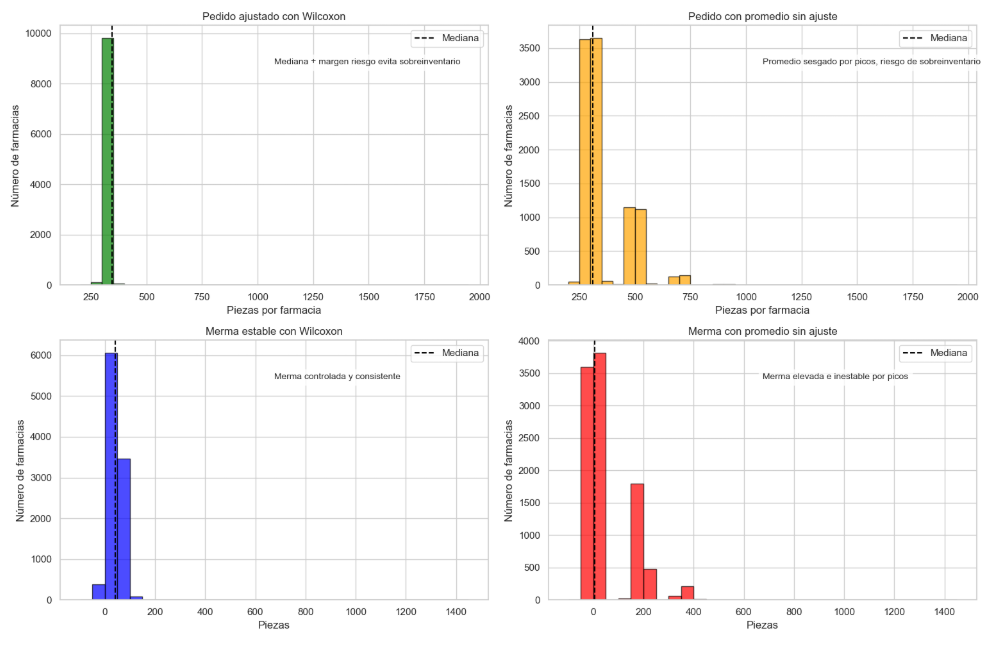
Comparativo de Pedidos y Merma: Wilcoxon vs Promedio
| Método | Pedido (pz) | Merma (pz) | % Farmacias sin cambio | Merma máxima (pz) | Interpretación de gráficas | Conclusión operativa |
|---|---|---|---|---|---|---|
| Wilcoxon (No paramétrica) | Mediana = 345 Media = 344.2 |
Mediana = 40.5 Media = 39.1 |
96.4% | – |
Pedido estable alrededor de la mediana. La merma es controlada y consistente. Los picos excepcionales no distorsionan la decisión. |
Pedido final confiable para farmacias con demanda irregular. Evita sobreinventario y reduce desperdicio. Mantiene operación estable y predecible. |
| Promedio (Paramétrica) | Mediana = 309.5 Media = 358.7 |
Mediana = 4.7 Media = 53.7 |
– | 417.8 |
Pedido sensible a picos aislados. La merma varía mucho y alcanza máximos extremos. Gráficas muestran dispersión alta y falta de control. |
Si se usa el promedio, los pedidos reaccionan a picos aislados. Se genera sobreinventario, alta merma y operación menos predecible. Riesgo de desperdicio y costos adicionales. |
Conclusión general: Para farmacias con demanda irregular y picos aislados, la estrategia basada en mediana/Wilcoxon asegura un pedido estable, reduce merma y mantiene operación confiable. Usar el promedio provoca pedidos más altos, merma elevada y riesgos de sobreinventario.
Tabla cuando usar parametrica y cuando no usar parametrica
| Tipo de prueba | Paramétrica / No paramétrica | Supuestos | Medida central / estadístico | Cuándo usar | Ejemplo práctico | Comentario |
|---|---|---|---|---|---|---|
| t de Student (una muestra) | Paramétrica | Normalidad, datos continuos, sin outliers extremos | Media y desviación estándar | Comparar con un estándar conocido | Comparar el salario promedio de un banco vs valor de referencia | Se puede normalizar variable si no cumple supuestos |
| t de Student (dos muestras independientes) | Paramétrica | Normalidad, varianzas iguales, datos continuos | Media y desviación estándar | Comparar dos grupos | Comparar ventas entre sucursales de un banco o farmacias | Si varianzas distintas → Welch t-test |
| t pareada | Paramétrica | Normalidad de las diferencias | Media de las diferencias | Comparar antes/después | Medir productividad de empleados antes y después de capacitación | Muy sensible a outliers; usar Wilcoxon pareada si no normal |
| ANOVA (1 vía) | Paramétrica | Normalidad, homocedasticidad, datos continuos | Media de cada grupo | Comparar más de 2 grupos | Comparar ventas de varias sucursales de un banco o farmacias | Si no homocedasticidad → usar Welch ANOVA |
| Pearson | Paramétrica | Normalidad, linealidad, datos continuos | Coeficiente r | Medir relación lineal | Relación entre publicidad y ventas de un banco | No robusto a outliers; usar Spearman si no lineal |
| Wilcoxon (rangos con signo) | No paramétrica | Datos ordinales o continuos, no normal, con outliers | Suma de rangos | Comparar mediana vs referencia o antes/después | Evaluar cambios típicos en ventas o consumo en farmacias o bancos | Ideal para decisiones basadas en mediana, menos sensible a picos |
| Mann-Whitney U | No paramétrica | Datos ordinales o continuos, no normal | Suma de rangos, estadístico U | Comparar dos grupos independientes | Comparar desempeño entre sucursales, bancos o empleados | No sensible a outliers |
| Kruskal-Wallis | No paramétrica | Datos ordinales o continuos, no normal | Suma de rangos, estadístico H | Comparar 3 o más grupos | Comparar rendimiento de varios equipos, sucursales o bancos | Alternativa no paramétrica al ANOVA |
| Spearman | No paramétrica | Datos ordinales o no normales, linealidad no requerida | Coeficiente rho | Correlación monotónica | Relación entre rankings, métricas con outliers | Robusto a outliers |
Modelos de regresión
Los modelos de regresión son herramientas estadísticas que permiten predecir o explicar una variable dependiente a partir de una o varias variables independientes. Se utilizan para identificar relaciones, tendencias y patrones en los datos, cuantificar el efecto de los factores y realizar predicciones.
Tipos principales de regresión
| Tipo de regresión | Descripción | Ejemplo de uso | Supuestos principales |
|---|---|---|---|
| Regresión lineal simple | Relaciona una variable independiente con una dependiente mediante una línea recta. | Predecir ventas según publicidad. | Linealidad, homocedasticidad, independencia de errores, normalidad de residuos. |
| Regresión lineal múltiple | Relaciona varias variables independientes con una dependiente. | Predecir ingresos de clientes según edad, ingreso y gasto anterior. | Linealidad, no multicolinealidad, homocedasticidad, normalidad de residuos. |
| Regresión logística | Modela la probabilidad de ocurrencia de un evento binario (0/1). | Predicción de abandono de clientes (sí/no). | Independencia de observaciones, relación lineal logit con variables continuas. |
| Regresión Poisson | Modela conteos o eventos que ocurren en un intervalo fijo de tiempo o espacio. | Número de llamadas a un call center por hora. | Conteos, independencia, media ≈ varianza. |
| Regresión ordinal / multinomial | Predice variables dependientes categóricas con más de dos niveles. | Nivel de satisfacción del cliente: bajo, medio, alto. | Independencia, relación lineal con log-odds, proporcionalidad de odds (para ordinal). |
| Regresión Ridge / Lasso | Regresión lineal regularizada para controlar multicolinealidad y sobreajuste. | Predicción de precios con muchas variables correlacionadas. | Mismos supuestos de regresión lineal, más regularización de coeficientes. |
Pasos generales para realizar un análisis de regresión
-
Definir la variable dependiente y las independientes.
Determinar cuál es el objetivo de predicción y qué factores pueden influir. -
Explorar los datos.
Revisar distribuciones, outliers, correlaciones y consistencia de las variables. -
Seleccionar el tipo de regresión.
Elegir lineal, logística, Poisson, ordinal, regularizada, etc., según la naturaleza de la variable dependiente y los supuestos. -
Verificar supuestos del modelo.
Normalidad de residuos, homocedasticidad, independencia, linealidad, multicolinealidad, etc. -
Estimación del modelo.
Ajustar los coeficientes usando mínimos cuadrados, máxima verosimilitud u otros métodos adecuados. -
Evaluación del modelo.
Validar con métricas como R², RMSE, AIC, accuracy, ROC-AUC según el tipo de regresión. -
Interpretación y aplicación.
Traducir los coeficientes y resultados en decisiones prácticas y predicciones. -
Validación y ajuste.
Revisar residuales, ajustar variables, transformar o normalizar según sea necesario.
Variables en una regresión
Antes de entender la linealidad en una regresión, primero es necesario comprender qué son la variable dependiente y la variable independiente.
Variable independiente
La variable independiente es la variable que se utiliza para explicar o predecir otra variable. En estadística y machine learning también se conoce como variable explicativa o predictor.
En notación matemática se representa generalmente como \(X\).
Esta variable actúa como el factor que influye sobre otra variable dentro del modelo estadístico.
Variable dependiente
La variable dependiente es la variable cuyo valor depende del comportamiento de la variable independiente. Es la variable que el modelo intenta explicar o predecir.
En notación matemática se representa como \(Y\).
En un modelo de regresión, el objetivo consiste en estudiar cómo cambia \(Y\) cuando la variable \(X\) varía.
Relación entre variables
La relación entre ambas variables puede expresarse conceptualmente como:
\[ X \rightarrow Y \]
Esto significa que el valor de la variable dependiente puede ser explicado mediante la información contenida en la variable independiente.
Linealidad en la regresión
La linealidad implica que la relación entre la variable independiente y la variable dependiente puede representarse mediante una función lineal.
La forma general de una regresión lineal simple se expresa como:
\[ Y = a + bX \]donde:
- \(Y\) representa la variable dependiente
- \(X\) representa la variable independiente
- \(a\) es el intercepto del modelo
- \(b\) es la pendiente de la recta
El intercepto \(a\) corresponde al valor esperado de \(Y\) cuando \(X = 0\).
La pendiente \(b\) indica cuánto cambia la variable \(Y\) cuando la variable \(X\) aumenta en una unidad.
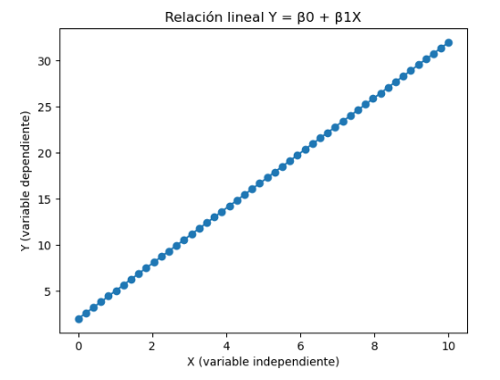
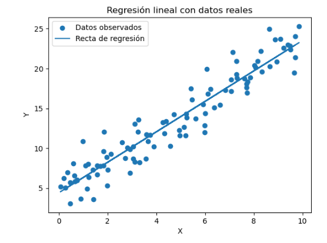
Interpretación de la linealidad
La linealidad significa que dos variables cambian de manera regular entre sí. Cuando una variable aumenta o disminuye, la otra también cambia siguiendo un patrón parecido a una línea recta.
Si colocamos los datos en una gráfica con un plano cartesiano (eje horizontal para X y eje vertical para Y), los puntos de los datos tienden a agruparse cerca de una recta. No todos los puntos estarán exactamente sobre la línea, pero en general seguirán esa dirección.
Esto indica que existe una relación clara entre las variables. En otras palabras, cuando la variable independiente cambia, la variable dependiente también cambia de forma predecible.
Por ejemplo, si cada vez que una variable aumenta un poco, la otra también aumenta aproximadamente en la misma proporción, decimos que la relación es lineal.
Matemáticamente esta relación puede representarse como:
\[ \Delta Y = \beta_1 \Delta X \]Esta expresión indica que el cambio en Y depende del cambio en X. El valor \(\beta_1\) indica qué tan fuerte es esa relación: si es grande, pequeños cambios en X producen cambios mayores en Y; si es pequeño, el efecto es menor.
Interpretación de la pendiente en una recta
En una regresión lineal o función lineal, la ecuación general puede expresarse como:
\[ Y = \beta_0 + \beta_1 X \]El coeficiente \(\beta_1\) representa la pendiente de la recta. Este valor determina cómo cambia la variable dependiente \(Y\) cuando la variable independiente \(X\) aumenta.
Dependiendo del valor de la pendiente, la recta puede presentar diferentes comportamientos.
Pendiente positiva
Si
\[ \beta_1 > 0 \]la recta es creciente. Esto significa que cuando la variable independiente \(X\) aumenta, la variable dependiente \(Y\) también aumenta.
Gráficamente, la recta sube de izquierda a derecha.
Ejemplo en retail: si aumenta la inversión en publicidad, las ventas tienden a aumentar.
Pendiente negativa
Si
\[ \beta_1 < 0 \]la recta es decreciente. Esto significa que cuando \(X\) aumenta, la variable \(Y\) disminuye.
Gráficamente, la recta baja de izquierda a derecha.
Ejemplo en retail: si el precio de un producto aumenta, la cantidad vendida puede disminuir.
Pendiente igual a cero
Si
\[ \beta_1 = 0 \]la recta es horizontal.
Esto significa que la variable dependiente \(Y\) no cambia cuando cambia \(X\).
En este caso no existe relación lineal entre las variables.
Pendiente indefinida
Cuando la recta es vertical, la pendiente es indefinida.
Esto ocurre cuando todos los valores de \(X\) son constantes y solo cambia \(Y\).
En este caso no puede representarse mediante una función de la forma
\[ Y = \beta_0 + \beta_1 X \]porque una misma variable \(X\) tendría múltiples valores de \(Y\).
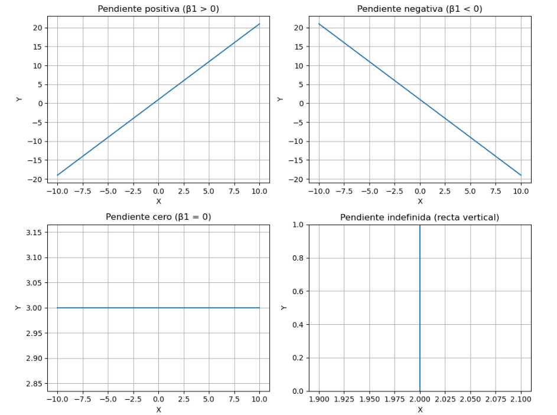
Ejemplo aplicado a retail
Supongamos que una tienda minorista desea analizar la relación entre el precio de un producto y la cantidad vendida.
Definición de variables
Definimos las variables del modelo de la siguiente forma:
\[ X = \text{precio del producto} \] \[ Y = \text{cantidad vendida} \]El modelo de regresión lineal simple se expresa como:
\[ Y = \beta_0 + \beta_1 X \]donde:
- \(\beta_0\) es el intercepto (valor de \(Y\) cuando \(X = 0\))
- \(\beta_1\) es la pendiente de la recta
Modelo estimado
Supongamos que el modelo estimado es:
\[ Y = 120 - 5X \]Interpretación
La pendiente del modelo es:
\[ \beta_1 = -5 \]Esto significa que si el precio del producto aumenta en una unidad, las ventas disminuyen aproximadamente en 5 unidades.
El intercepto es:
\[ \beta_0 = 120 \]Esto indica que cuando el precio es cero, el modelo predice 120 unidades vendidas.
Ejemplo aplicado a operaciones retail
Consideremos ahora un análisis de merma en un centro de distribución.
Definición de variables
\[ X = \text{volumen de productos manipulados} \] \[ Y = \text{cantidad de merma} \]El modelo de regresión lineal se expresa nuevamente como:
\[ Y = \beta_0 + \beta_1 X \]Modelo estimado
Supongamos el siguiente modelo:
\[ Y = 8 + 0.03X \]Interpretación
El intercepto es:
\[ \beta_0 = 8 \]Esto significa que incluso si no se manipularan productos, existe una merma mínima operativa de aproximadamente 8 unidades.
La pendiente es:
\[ \beta_1 = 0.03 \]Esto indica que por cada unidad adicional de productos manipulados, la merma aumenta en aproximadamente 0.03 unidades.
Conclusión
La regresión lineal modela la relación entre una variable dependiente \(Y\) y una variable independiente \(X\) mediante una función lineal:
\[ Y = \beta_0 + \beta_1 X \]El intercepto \(\beta_0\) representa el valor inicial del modelo, mientras que la pendiente \(\beta_1\) indica cómo cambia la variable dependiente cuando la variable independiente aumenta.
Este modelo permite comprender la relación entre variables y realizar predicciones a partir de los datos observados.

Interpretación de las gráficas
1. Relación entre precio y ventas
El modelo obtenido fue:
Y = 124.60 − 5.37X
Esta gráfica muestra cómo cambia la cantidad vendida cuando cambia el precio del producto.
El número -5.37 indica que cuando el precio aumenta en una unidad, las ventas tienden a disminuir aproximadamente en 5 unidades. Esto refleja algo común en el comercio: cuando un producto se vuelve más caro, normalmente se venden menos unidades.
El valor 124.60 representa la cantidad de ventas estimadas cuando el precio es cero. En la práctica esto no ocurre realmente, pero sirve como punto inicial para construir la línea del modelo.
En la gráfica se observa que los puntos de los datos siguen una línea que va hacia abajo, lo que indica que existe una relación negativa entre el precio y las ventas.
Conclusión de la prueba de hipótesis
En el análisis se realizó una prueba de hipótesis para determinar si el precio del producto tiene un efecto real sobre la cantidad vendida.
La hipótesis inicial suponía que el precio no afecta las ventas. Sin embargo, el resultado del análisis mostró un valor estadístico muy alejado del rango esperado si esa hipótesis fuera cierta.
Debido a esto, se rechaza la hipótesis de que el precio no influye en las ventas.
En términos simples, los datos indican que el precio sí afecta la cantidad vendida. Cuando el precio aumenta, las ventas tienden a disminuir.
Esto significa que la relación observada entre precio y ventas no parece ser producto del azar, sino que refleja un comportamiento real en los datos.
2. Relación entre volumen manipulado y merma
El modelo obtenido fue:
Y = 7.45 + 0.0309X
Esta gráfica muestra cómo cambia la cantidad de merma cuando aumenta el volumen de productos manipulados en un centro de distribución.
El valor 0.0309 indica que por cada unidad adicional de producto que se maneja, la merma aumenta ligeramente. Es decir, mientras más productos pasan por el proceso logístico, mayor es la probabilidad de que algunos se dañen o se pierdan.
El número 7.45 representa una merma mínima que ocurre incluso cuando el volumen de productos es muy bajo. Esto puede deberse a errores operativos, manipulación o pérdidas normales dentro del proceso.
En la gráfica la línea tiene una inclinación hacia arriba, lo que indica que existe una relación positiva entre el volumen manejado y la merma generada.
Tipos principales de regresión y modelos predictivos
| Tipo de modelo | ¿Es lineal? | Descripción | Ejemplo matemático | Ejemplo de uso |
|---|---|---|---|---|
| Regresión lineal simple | Sí | Relaciona una variable independiente con una dependiente mediante una línea recta. | Y = β₀ + β₁X | ventas = β₀ + β₁ precio |
| Regresión lineal múltiple | Sí | Relaciona varias variables independientes con una variable dependiente. | Y = β₀ + β₁X₁ + β₂X₂ + β₃X₃ + ε | ventas = β₀ + β₁ precio + β₂ publicidad + β₃ inventario |
| Regresión logística | No | Modela la probabilidad de que ocurra un evento binario. | P(Y=1) = 1 / (1 + e^-(β₀ + β₁X)) | Probabilidad de abandono de cliente según uso del servicio. |
| Regresión Poisson | No | Se utiliza para modelar conteos o número de eventos. | log(λ) = β₀ + β₁X | Número de llamadas por hora en un call center. |
| Regresión ordinal / multinomial | No | Predice variables categóricas con múltiples niveles. | log(P(Y=j)/P(Y=base)) = β₀ + β₁X | Nivel de satisfacción del cliente: bajo, medio, alto. |
| Regresión Ridge / Lasso | Sí | Extensión de regresión lineal que agrega penalización a los coeficientes. | Y = β₀ + β₁X₁ + β₂X₂ + ... + penalización(β) | Predicción de precios con muchas variables correlacionadas. |
| Árboles de decisión | No | Modelo que divide los datos mediante reglas de decisión. | if precio < 1000 → alta demanda | Clasificación de clientes según probabilidad de compra. |
| Redes neuronales | No | Modelos con múltiples capas que capturan relaciones complejas entre variables. | Y = f(WX + b) | Predicción de demanda o reconocimiento de imágenes. |
Ejemplo: Regresión Ridge / Lasso
La regresión Ridge y la regresión Lasso son extensiones de la regresión lineal múltiple. Se utilizan cuando tenemos muchas variables explicativas y queremos evitar que el modelo se vuelva inestable o demasiado complejo.
En un modelo de regresión lineal tradicional la relación se expresa como:
\( Y = \beta_0 + \beta_1X_1 + \beta_2X_2 + \beta_3X_3 + ... + \varepsilon \)
Cuando el número de variables es grande o algunas variables están muy relacionadas entre sí (lo que se conoce como multicolinealidad), el modelo puede producir coeficientes muy grandes o poco estables. Para solucionar esto se utilizan técnicas de regularización como Ridge y Lasso.
Idea principal
Ambos métodos agregan una penalización a los coeficientes del modelo para evitar que crezcan demasiado. Esto ayuda a que el modelo sea más estable y generalice mejor cuando se hacen predicciones.
Regresión Ridge
La regresión Ridge reduce el tamaño de los coeficientes aplicando una penalización sobre sus valores.
Matemáticamente se puede representar como:
\( Y = \beta_0 + \beta_1X_1 + \beta_2X_2 + ... + \lambda \sum \beta_i^2 \)
El término \( \lambda \) controla qué tan fuerte es la penalización. Mientras mayor sea este valor, más pequeños serán los coeficientes.
En Ridge las variables siguen existiendo en el modelo, pero su efecto se reduce.
Regresión Lasso
La regresión Lasso funciona de manera similar, pero con una diferencia importante: puede hacer que algunos coeficientes se vuelvan exactamente cero.
Su expresión puede escribirse como:
\( Y = \beta_0 + \beta_1X_1 + \beta_2X_2 + ... + \lambda \sum |\beta_i| \)
Cuando un coeficiente se vuelve cero, esa variable deja de influir en el modelo. Por esta razón Lasso también funciona como un método de selección automática de variables.
Ejemplo en retail
Supongamos que una empresa quiere predecir las ventas de un producto utilizando muchas variables como 1500 variables:
- precio del producto
- nivel de inventario
- gasto en publicidad
- descuentos
- temporada del año
- promociones en tienda
- competencia
- tráfico en la tienda
El modelo podría representarse como:
\( ventas = \beta_0 + \beta_1 precio + \beta_2 publicidad + \beta_3 inventario + \beta_4 descuento + ... \)
Si algunas variables están muy relacionadas entre sí (por ejemplo promociones y descuentos), los coeficientes pueden volverse inestables. En este caso se puede aplicar Ridge o Lasso.
Interpretación en este caso
- Ridge: reduce la importancia de algunas variables, pero mantiene todas en el modelo.
- Lasso: puede eliminar variables que no aportan información importante.
Por ejemplo, el modelo Lasso podría determinar que variables como “promociones en tienda” o “tráfico en la tienda” no aportan mucho para explicar las ventas y asignarles un coeficiente igual a cero.
Cuándo se utilizan
- cuando hay muchas variables explicativas
- cuando existe multicolinealidad entre variables
- cuando se quiere evitar el sobreajuste del modelo
- cuando se busca simplificar el modelo eliminando variables poco relevantes
En resumen, Ridge y Lasso permiten construir modelos de regresión más estables y confiables cuando se trabaja con muchos predictores.
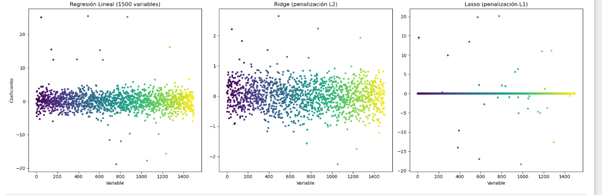
Métricas de evaluación para modelos de predicción
| Métrica | Qué mide | Interpretación |
|---|---|---|
| R² | Qué proporción de la variabilidad de los datos explica el modelo. | Valores cercanos a 1 indican mejor ajuste del modelo. |
| MSE (Mean Squared Error) | Promedio del cuadrado de los errores entre valores reales y predichos. | Mientras más pequeño sea, mejor es el modelo. |
| MAE (Mean Absolute Error) | Promedio del valor absoluto de los errores de predicción. | Indica el error promedio del modelo. |
| RMSE | Raíz cuadrada del error cuadrático medio. | Se interpreta en las mismas unidades que la variable. |
Interpretación de la no linealidad
La no linealidad ocurre cuando dos variables no cambian siguiendo una relación que pueda representarse con una línea recta. En este caso, cuando una variable cambia, la otra también cambia, pero el patrón no es constante.
Si colocamos los datos en una gráfica en un plano cartesiano (X en el eje horizontal y Y en el eje vertical), los puntos ya no se agrupan alrededor de una línea recta. En cambio, los puntos pueden formar una curva o una forma más flexible.
Esto significa que el efecto de una variable sobre la otra no siempre es el mismo. A veces un pequeño cambio en la variable X puede producir un cambio grande en Y, y en otras ocasiones el cambio puede ser menor.
Este tipo de comportamiento aparece con frecuencia cuando trabajamos con datos dicotómicos, es decir, variables que solo tienen dos posibles valores, por ejemplo:
- 0 = no compra
- 1 = compra
En estos casos no intentamos predecir un número continuo, sino la probabilidad de que ocurra un evento. Por ejemplo, la probabilidad de que un cliente abandone un servicio o de que un usuario realice una compra.
Una forma común de representar este tipo de relación es mediante una función logística:
\( P(Y=1) = \frac{1}{1 + e^{-(\beta_0 + \beta_1X)}} \)
Cuando se grafica esta función, los datos suelen formar una curva en forma de “S”. Esto ocurre porque la probabilidad está limitada entre 0 y 1, por lo que el crecimiento no puede seguir una línea recta indefinidamente.
En resumen, hablamos de no linealidad cuando la relación entre las variables no sigue una línea recta y los datos muestran patrones curvos o más complejos.
Ejemplo: Relación entre pagos mensuales y probabilidad de incumplimiento de un banco
En este caso se utilizó un modelo de regresión logística para analizar cómo los pagos mensuales de un cliente se relacionan con la probabilidad de que incumpla con su crédito.
A diferencia de la regresión lineal, este modelo no genera una línea recta, sino una curva en forma de S. Esta forma permite representar probabilidades que siempre están entre 0 y 1.
El modelo obtenido fue:
PF = 1 / (1 + e-( -2.10 + 0.015 PM ))
En este modelo,el monto de los pagos mensuales del cliente y la probabilidad de que el cliente incumpla con su obligación de pago.
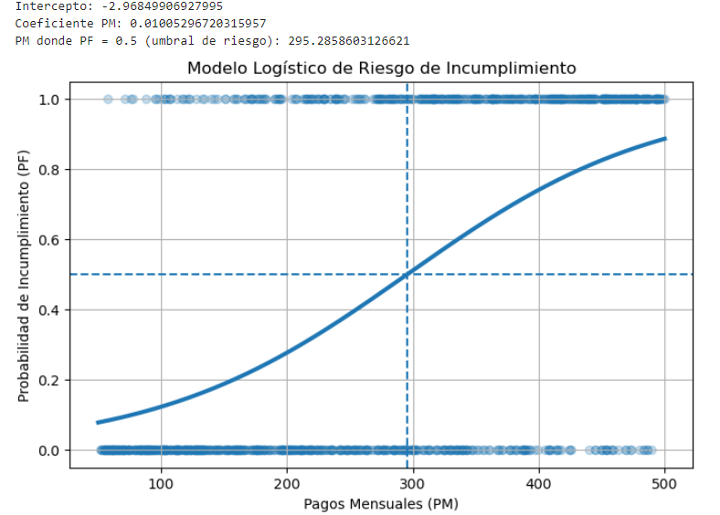
Interpretación del modelo
El modelo analiza cómo el monto del pago mensual del crédito de un cliente se relaciona con la probabilidad de que tenga dificultades para cumplir con sus pagos.
En esta ocasión se utilizaron datos donde la variable principal es el pago mensual del crédito que debe cubrir el cliente.
El análisis generó tres resultados principales.
Intercepto: -2.97
Este valor funciona como el punto de partida del modelo. Sirve para construir el cálculo de la probabilidad de incumplimiento. Por sí solo no representa una situación real, pero permite que el modelo estime cómo cambia el riesgo cuando el pago mensual aumenta o disminuye.
Coeficiente del pago mensual: 0.010
Este número indica que cuando el pago mensual del crédito aumenta, la probabilidad de incumplimiento también tiende a aumentar. En términos simples, mientras más alto sea el pago que debe cubrir el cliente cada mes, mayor puede ser la dificultad para cumplir con el crédito.
Umbral de riesgo: aproximadamente 295
El modelo estima que cuando el pago mensual se acerca a 295 unidades, la probabilidad de incumplimiento es cercana al 50%.
Esto significa que ese nivel de pago funciona como una referencia importante para evaluar el riesgo del crédito.
De forma general:
- Si el pago mensual está por debajo de 295, el riesgo de incumplimiento tiende a ser menor.
- Si el pago mensual está por encima de 295, el riesgo comienza a aumentar de forma más notable.
En términos prácticos, este tipo de modelo ayuda a las instituciones financieras a entender mejor cuándo un pago mensual podría empezar a representar un riesgo para el cliente. Esto puede apoyar decisiones relacionadas con la aprobación de créditos o el ajuste de condiciones de pago.
Regularización en modelos no lineales
En muchos problemas reales la relación entre las variables no es completamente lineal. En estos casos se utilizan modelos no lineales, que permiten capturar patrones más complejos en los datos.
Sin embargo, cuando se tienen muchas variables explicativas, estos modelos también pueden volverse demasiado complejos y ajustarse demasiado a los datos de entrenamiento. Este problema se conoce como sobreajuste.
Para evitarlo, al igual que en los modelos lineales, se utilizan técnicas de regularización, que penalizan la complejidad del modelo.
Las penalizaciones más comunes siguen siendo L1 y L2, pero ahora se aplican dentro de modelos no lineales.
Redes neuronales con regularización L1 y L2
Las redes neuronales son modelos no lineales muy utilizados cuando existen muchas variables o cuando las relaciones entre ellas son complejas.
En una red neuronal el modelo aprende pesos (weights) que determinan la importancia de cada variable.
Para evitar que estos pesos crezcan demasiado y generen sobreajuste, se agregan penalizaciones al proceso de optimización.
Regularización L2
En este caso la función que el modelo optimiza se expresa como:
donde:
- Error representa qué tan bien el modelo predice los datos
- w son los pesos del modelo
- λ controla la intensidad de la penalización
La regularización L2 reduce el tamaño de los pesos, pero mantiene todas las variables dentro del modelo.
Esto funciona de forma similar a Ridge en regresión lineal.
Regularización L1
La función de optimización puede escribirse como:
En este caso la penalización se aplica sobre el valor absoluto de los pesos.
La regularización L1 puede hacer que algunos pesos se vuelvan exactamente cero, lo que implica que ciertas variables dejan de influir en el modelo.
Esto funciona de manera similar a Lasso en modelos lineales.
Kernel Ridge Regression
Otra alternativa cuando se busca una versión no lineal de Ridge es Kernel Ridge Regression.
La idea principal es transformar los datos a un espacio de mayor dimensión utilizando una función kernel, lo que permite capturar relaciones curvas o más complejas entre las variables.
El modelo mantiene la penalización L2:
pero ahora la relación entre variables ya no es estrictamente lineal debido a la transformación realizada por el kernel.
Este método se utiliza cuando:
- existen relaciones no lineales
- el número de variables es moderado
- los datos son estructurados
Modelos de árboles con regularización
En muchos problemas con gran cantidad de variables se utilizan modelos basados en árboles de decisión avanzados.
Algunos de los más utilizados son:
- Gradient Boosting
- XGBoost
- LightGBM
Estos modelos también incluyen regularización inspirada en L1 y L2.
Por ejemplo, en XGBoost la función objetivo puede representarse como:
donde:
- λ corresponde a la penalización L2
- α corresponde a la penalización L1
Estas penalizaciones ayudan a controlar la complejidad de los árboles y evitar que el modelo se vuelva demasiado específico para los datos de entrenamiento.
Uso cuando existen muchas variables
Cuando el número de variables es muy grande (por ejemplo 15 000 variables), los modelos no lineales más utilizados suelen ser:
| Modelo | Tipo | Característica |
|---|---|---|
| Redes neuronales con L1 / L2 | No lineal | Manejan gran cantidad de variables |
| XGBoost | No lineal | Muy eficiente en datos tabulares |
| LightGBM | No lineal | Optimizado para datasets grandes |
| Kernel Ridge | No lineal | Versión no lineal de Ridge |
Resumen
Las penalizaciones L1 y L2 no son exclusivas de los modelos lineales.
También se utilizan en modelos no lineales para controlar la complejidad del modelo.
- L1 elimina variables poco relevantes (similar a Lasso)
- L2 reduce el peso de las variables sin eliminarlas (similar a Ridge)
Estas técnicas permiten construir modelos más estables incluso cuando se trabaja con miles de variables o relaciones no lineales entre los datos.
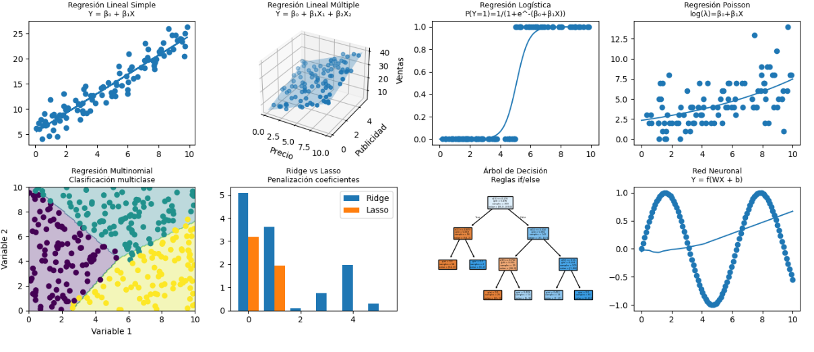
Independencia de errores
La independencia de errores es un supuesto importante en muchos modelos estadísticos, especialmente en modelos de regresión.
Idea general
Cuando se construye un modelo estadístico, el modelo no explica perfectamente los datos. La diferencia entre el valor real y el valor predicho por el modelo se conoce como error o residuo.
El supuesto de independencia de errores significa que el error de una observación no debe depender del error de otra observación.
En otras palabras, los errores deben ser independientes entre sí.
Explicación intuitiva
Supongamos que se tiene un modelo que predice ventas diarias. Si hoy el modelo se equivoca, ese error no debería influir en el error del día siguiente.
Cada error debería comportarse de forma aleatoria e independiente.
Representación en un modelo de regresión
Un modelo de regresión simple puede escribirse como:
donde:
- y es la variable que se quiere explicar
- x es una variable explicativa
- ε representa el error del modelo
La independencia de errores implica que los errores de diferentes observaciones no deben estar correlacionados.
Esto significa que el error de una observación no contiene información sobre el error de otra observación.
Qué ocurre si no se cumple este supuesto
Cuando los errores están relacionados entre sí aparece un fenómeno llamado autocorrelación.
Esto suele ocurrir en datos de:
- series de tiempo
- datos temporales
- datos espaciales
En estos casos los errores pueden seguir patrones, lo que indica que el modelo no está capturando toda la estructura de los datos.
En qué modelos se utiliza este supuesto
La independencia de errores es especialmente importante en:
- regresión lineal
- regresión logística
- ANOVA
- modelos estadísticos clásicos
En muchos modelos modernos de machine learning, como árboles de decisión, random forest o redes neuronales, este supuesto no siempre se exige formalmente, aunque sigue siendo importante considerar dependencias temporales o espaciales en los datos.
Resumen
La independencia de errores significa que los errores del modelo deben ser aleatorios y no deben depender unos de otros.
Este supuesto es fundamental para que las inferencias estadísticas del modelo sean válidas.
Ejemplo sencillo
Supongamos un modelo que predice ventas en retail.
| Observación | Venta real | Venta predicha | Error o residuo |
|---|---|---|---|
| 1 | 100 | 98 | ejemplo :2000 (critico ) |
| 2 | 120 | 118 | 2 |
| 3 | 90 | 94 | -4 |
| 4 | 150 | 148 | 2 |
Si los errores se distribuyen de forma simétrica alrededor de 0, entonces existe normalidad de los errores.
Qué hacer cuando se cumple la normalidad
- Se pueden usar modelos estadísticos clásicos.
- Las pruebas de hipótesis son confiables.
- Los resultados del modelo pueden interpretarse con seguridad.
Qué hacer cuando NO se cumple
Si los errores no siguen una distribución normal, se puede:
- Aplicar transformaciones a los datos (logaritmo, raíz).
- Usar métodos robustos.
- Utilizar pruebas no paramétricas.
- Revisar posibles outliers.
Regla de oro para elegir técnica estadística
| Tipo de variables | Técnica | Método específico | Tipo de relación detectada | Uso típico |
|---|---|---|---|---|
| Numérica vs Numérica | Correlación | Pearson (lineal) / Spearman (no lineal o monotónica) | Lineal o monotónica | Detectar si dos variables numéricas cambian juntas |
| Categórica vs Categórica | Chi-cuadrado | Prueba de independencia | Dependencia entre categorías | Ver si dos variables categóricas están relacionadas |
| Categórica vs Numérica | ANOVA | Comparación de medias entre grupos | Diferencias entre promedios | Detectar si las categorías explican cambios en una variable numérica |
| Muchísimas variables (ej. 250k) | Selección de variables (Machine Learning) | Mutual Information, LASSO, XGBoost importance | Lineales y no lineales | Reducir dimensiones y elegir variables relevantes para modelos predictivos |
Ejemplo 1: Retail — Ventas Diarias y Ventas a 30 Días
Una tienda quiere entender cómo las ventas diarias se relacionan con las ventas acumuladas al final de 30 días. La idea es construir una línea que permita estimar las ventas totales a 30 días usando el nivel de ventas diarias promedio.
Modelo:
Ventas a 30 días = Intercepto + Pendiente × Ventas diarias + Error
El error representa la diferencia entre lo que el modelo predice y lo que realmente ocurre.
| Ventas diarias | Ventas reales a 30 días | Ventas predichas | Error |
|---|---|---|---|
| 10 | 300 | 302 | -2 |
| 15 | 450 | 445 | 5 |
| 20 | 600 | 610 | -10 |
| 25 | 750 | 745 | 5 |
Interpretación: la línea aprendida indica que al aumentar las ventas diarias también aumentan las ventas acumuladas a 30 días. El error muestra qué tanto se equivoca el modelo en cada observación.
Ejemplo 2: Banco — Riesgo según deuda
Un banco quiere estimar el nivel de riesgo de un cliente dependiendo de su nivel de deuda.
Modelo:
Riesgo = Intercepto + Pendiente × Deuda + Error
| Deuda | Riesgo real | Riesgo predicho | Error |
|---|---|---|---|
| 5 | 20 | 21 | -1 |
| 10 | 35 | 34 | 1 |
| 15 | 50 | 49 | 1 |
| 20 | 65 | 66 | -1 |
Interpretación: a mayor deuda, mayor nivel de riesgo. El modelo intenta capturar esa relación usando una línea.
Extensión del modelo para tipos de cliente
En un banco también se puede agregar una variable adicional para diferenciar tipos de clientes.
| Variable | Significado | Ejemplo |
|---|---|---|
| Deuda | Monto de deuda del cliente | 15 |
| Tipo de cliente | Persona física o persona moral | 0 = física, 1 = moral |
| Riesgo | Nivel estimado de riesgo crediticio | 45 |
Cuando agregamos más variables como tipo de cliente, ingresos, historial de pago o antigüedad del crédito, el modelo se convierte en una regresión con múltiples variables.
Supuestos y verificaciones en modelos de regresión y machine learning
| Tipo | Concepto o prueba | Para qué sirve | Fórmula básica | Ejemplo sencillo |
|---|---|---|---|---|
| Clásico | Linealidad | Verifica que la relación entre variables siga una tendencia lineal. | y = β₀ + β₁x + ε | Si el precio sube y las ventas bajan de forma constante. |
| Clásico | Independencia de errores | Los errores de una observación no deben depender de otra. | Cov(eᵢ,eⱼ) = 0 | Si hoy el modelo falla, eso no debería afectar el error de mañana. |
| Clásico | Varianza constante | El tamaño del error debe ser parecido en todos los casos. | Var(e) = σ² | Errores pequeños en ventas pequeñas y grandes en ventas grandes indican problema. |
| Clásico | Normalidad de errores | Los errores deben distribuirse alrededor de cero. | e ~ N(0,σ²) | La mayoría de errores son pequeños y pocos muy grandes. |
| Clásico | Multicolinealidad | Detecta si dos variables explicativas son casi iguales. | VIF = 1/(1-R²) | Precio y descuento pueden estar muy correlacionados. |
| Diagnóstico moderno | Durbin-Watson | Detecta si los errores siguen un patrón en el tiempo. | DW = Σ(eₜ − eₜ₋₁)² / Σ(eₜ²) | Errores positivos varios días seguidos en ventas diarias. |
| Diagnóstico moderno | Heterocedasticidad | Detecta si el error cambia dependiendo del tamaño del dato. | Var(eᵢ) ≠ constante | Errores mayores en clientes grandes que en clientes pequeños. |
| Diagnóstico moderno | Outliers influyentes | Busca observaciones que afectan demasiado el modelo. | Cook distance | Un cliente con una compra extremadamente grande. |
| Modelos no lineales | Overfitting | El modelo aprende demasiado bien los datos de entrenamiento pero falla con datos nuevos. | Error_train << Error_test | Un modelo predice perfectamente el entrenamiento pero falla en producción. |
| Modelos no lineales | Underfitting | El modelo es demasiado simple para capturar la relación real. | Error_train ≈ Error_test alto | Una línea recta intentando explicar una relación curva. |
| Modelos no lineales | Importancia de variables | Ayuda a saber qué variables influyen más en el modelo. | Gain / SHAP | En crédito, ingreso puede ser más importante que edad. |
| Modelos no lineales | Validación cruzada | Evalúa el modelo usando diferentes particiones del dataset. | CV = promedio(error_k) | Entrenar el modelo varias veces con distintos conjuntos de datos. |
Análisis ANOVA aplicado a datos de Retail
Sirve para saber si una variable categórica explica diferencias en una variable numérica
Para analizar qué variables explican mejor el comportamiento de las ventas en el negocio retail, se aplicó la prueba estadística ANOVA (Analysis of Variance). Esta técnica permite comparar si los promedios de ventas cambian entre distintos grupos, por ejemplo entre categorías de producto, divisiones o fabricantes.
El objetivo es identificar qué variables generan diferencias significativas en las ventas y por lo tanto pueden ser utilizadas posteriormente en modelos predictivos como XGBoost, Random Forest o regresión.
Ejemplo simplificado de los datos utilizados
| SKU | Grupo | División | Categoría | Fabricante | Varianza de ventas |
|---|---|---|---|---|---|
| 1001 | A | Electrónica | Audio | Sony | 120 |
| 1002 | B | Electrónica | Audio | LG | 90 |
| 1003 | A | Línea blanca | Refrigeradores | Samsung | 140 |
| 1004 | C | Hogar | Decoración | Ikea | 45 |
| 1005 | D | Hogar | Decoración | Home Depot | 30 |
Resultados de la prueba ANOVA
| Variable | Número de categorías | Estadístico F | p-value | Significancia estadística | Interpretación en ventas |
|---|---|---|---|---|---|
| ABCD | 5 | 6458.64 | 0.0000000012 | Extremadamente significativa | Es la variable que más explica diferencias en ventas |
| Grupo | 2 | 620.79 | 0.0000000031 | Muy significativa | Los grupos presentan comportamientos de venta distintos |
| División | 7 | 281.90 | 0.000000015 | Muy significativa | Las ventas cambian entre divisiones |
| Familia | 22 | 143.74 | 0.00000012 | Significativa | Las familias de productos afectan las ventas |
| Fabricante | 82 | 40.47 | 0.0000025 | Significativa | Las marcas también generan diferencias |
Fórmula general de ANOVA
\( F = \frac{Variación\ entre\ grupos}{Variación\ dentro\ de\ los\ grupos} \)
\( F = \frac{SS_{entre}/df_{entre}}{SS_{dentro}/df_{dentro}} \)
Si el valor F es grande, significa que los grupos tienen comportamientos diferentes. Si el p-value es menor a 0.05, la diferencia es estadísticamente significativa.
Interpretación en lenguaje sencillo
Los resultados indican que variables como ABCD, Grupo, División, Familia y Fabricante generan diferencias claras en el nivel de ventas.
Por ejemplo:
- ABCD explica gran parte del comportamiento de ventas porque clasifica productos según su importancia comercial.
- Grupo separa productos con niveles de demanda muy diferentes.
- División y Familia reflejan el tipo de producto, lo cual influye directamente en el volumen de ventas.
- Fabricante indica que algunas marcas venden más que otras.
1 ABCD explica 48% de las ventas 2️ Grupo explica 22% 3️ División explica 15% 4️ Familia explica 9% 5️ Fabricante explica 6%
Esto significa que estas variables contienen información relevante y pueden utilizarse como variables explicativas en modelos predictivos.
Homocedasticidad y heterocedasticidad
Uno de los supuestos de ANOVA es que los grupos tengan varianzas similares, lo que se conoce como homocedasticidad.
\( Var(Y_1) = Var(Y_2) = Var(Y_3) = ... = Var(Y_k) \)
Si las varianzas cambian mucho entre grupos se produce heterocedasticidad.
\( Var(Y_i) \neq Var(Y_j) \)
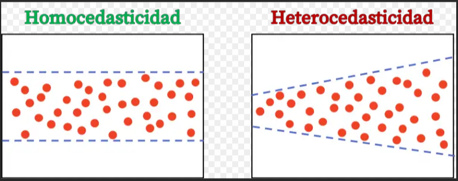
En datos de retail es común observar cierta heterocedasticidad, ya que los productos con mayores ventas suelen tener mayor variabilidad. Sin embargo, ANOVA sigue siendo útil para identificar qué variables generan diferencias en los promedios.
Por qué se usa ANOVA antes de modelos de Machine Learning
Antes de entrenar modelos como XGBoost es importante entender qué variables contienen información relevante.
ANOVA ayuda a identificar variables que realmente explican diferencias en el comportamiento de las ventas.
Esto permite:
- reducir variables irrelevantes
- mejorar la interpretabilidad del modelo
- reducir ruido en los datos
- mejorar la capacidad predictiva
Por esta razón, ANOVA es una herramienta muy utilizada en análisis exploratorio de datos antes de aplicar modelos de machine learning.
Resumen:
La prueba ANOVA se utiliza para detectar si una variable categórica es útil para explicar una variable numérica. En este caso, las variables como grupo, división, familia, fabricante y la clasificación ABCD permiten identificar diferencias en los niveles de ventas entre distintos grupos de productos. Cuando el p-value es muy pequeño, significa que las diferencias observadas entre categorías no se deben al azar, sino que reflejan patrones reales en los datos. Esto indica que dichas variables pueden ser relevantes para el análisis del comportamiento de ventas y para la construcción de modelos predictivos en el contexto del retail.
Verificación del supuesto de independencia de errores
Después de identificar variables relevantes mediante la prueba ANOVA (como ABCD, Grupo, División y Familia), se construyó un modelo para analizar el comportamiento de las ventas en el sector retail. Posteriormente se evaluó el supuesto de independencia de los errores utilizando el estadístico Durbin-Watson.
Fórmula del estadístico Durbin-Watson
DW = \(\frac{\sum_{t=2}^{n}(e_t - e_{t-1})^2}{\sum_{t=1}^{n}e_t^2}\)
Donde:
- et representa el error del modelo en una observación.
- et−1 representa el error de la observación anterior.
- n es el número total de observaciones analizadas.
La idea de esta fórmula es comparar qué tan diferentes son los errores entre observaciones consecutivas. Si los errores cambian de forma aleatoria, el modelo se considera estable.
Aplicación en el análisis de ventas retail
| Modelo | Variables incluidas | Durbin-Watson | Interpretación | Interpretación N° |
|---|---|---|---|---|
| Modelo de predicción de ventas | ABCD, Grupo, División, Familia | 1.96 | El valor obtenido se encuentra muy cercano a 2, lo que indica que los errores del modelo no presentan autocorrelación significativa. |
|
Interpretación en términos sencillos:
El resultado de 1.96 indica que los errores del modelo se comportan de forma aleatoria y no siguen un patrón repetitivo. En otras palabras, cuando el modelo comete un error al estimar las ventas de un producto o categoría, ese error no afecta al siguiente registro analizado. Esto es una señal positiva porque significa que el modelo está capturando adecuadamente la información relevante de las variables analizadas (ABCD, grupo, división y familia). Por lo tanto, las diferencias observadas en las ventas pueden atribuirse principalmente a estas variables y no a patrones ocultos en los errores del modelo. En el contexto del análisis retail, este resultado sugiere que el modelo es estable y que sus conclusiones sobre el comportamiento de las ventas entre diferentes categorías de productos pueden considerarse confiables.
Modelos estadísticos donde aparece el supuesto de homocedasticidad
Homocedasticidad
La homocedasticidad es un supuesto importante en varios modelos estadísticos, especialmente en modelos lineales como regresión lineal, regresión lineal múltiple, ANOVA, modelos lineales generales y algunos modelos econométricos de regresión. Este supuesto indica que la varianza de los errores o residuos se mantiene constante a lo largo de las observaciones o grupos analizados.
Ejemplo en retail
- Variable categórica: División
- Variable numérica: Ventas
| División | Varianza de ventas |
|---|---|
| Electrónica | 120 |
| Hogar | 110 |
| Ropa | 130 |
Las varianzas son similares, por lo tanto existe homocedasticidad.
¿Qué hacer cuando hay homocedasticidad?
- Se pueden aplicar modelos lineales sin problemas.
- Los resultados estadísticos suelen ser confiables.
- Los intervalos de confianza y p-values se interpretan normalmente.
Heterocedasticidad
La heterocedasticidad es una condición que puede aparecer en varios modelos estadísticos, especialmente en modelos lineales como regresión lineal, regresión lineal múltiple, ANOVA, modelos lineales generales y algunos modelos econométricos de regresión. Ocurre cuando la varianza de los errores o residuos cambia entre diferentes niveles de las variables, lo que significa que algunos grupos o valores presentan mucha más variabilidad que otros.
| División | Varianza de ventas |
|---|---|
| Electrónica | 120 |
| Hogar | 5000 |
| Ropa | 130 |
En este caso existe heterocedasticidad, ya que una categoría presenta una variabilidad mucho mayor que las demás.
¿Qué hacer cuando hay heterocedasticidad?
- Aplicar transformaciones a los datos (por ejemplo logaritmo).
- Utilizar modelos robustos.
- Aplicar métodos no paramétricos.
- Revisar posibles outliers que estén generando la alta variabilidad.
La estadística bayesiana
La estadística bayesiana tiene como objetivo actualizar nuestras creencias sobre un fenómeno a medida que observamos nuevos datos. En lugar de asumir que todo empieza desde cero, este enfoque parte de una idea inicial basada en experiencia previa, conocimiento histórico o intuición, y la va ajustando poco a poco conforme llega nueva información.
Es como en retail o en un banco: al inicio tienes una idea sobre el comportamiento de un cliente o producto, por ejemplo, qué tan probable es que alguien compre o pague un crédito. Luego observas lo que realmente ocurre en la práctica y ajustas esa idea. Si los nuevos datos confirman lo que esperabas, tu confianza aumenta; si muestran algo diferente, corriges tu estimación para reflejar mejor la realidad.
De esta forma, no se trata de obtener una única respuesta exacta, sino de tener una visión más completa, donde algunos resultados son más probables que otros. Esto permite tomar decisiones más informadas, considerando la incertidumbre en lugar de ignorarla.
En pocas palabras, la estadística bayesiana es una forma de ir aprendiendo de manera continua: combina lo que ya sabes con lo que vas observando para mejorar tus decisiones con el tiempo.
1. Teorema de Bayes
A la derecha aparece la fórmula general:
$$P(\theta | Datos) = \frac{P(Datos | \theta) \times P(\theta)}{P(Datos)}$$
Donde:
- \(\theta\): parámetro o variable de interés (ej: riesgo, tasa, probabilidad)
- \(P(\theta)\): probabilidad previa (lo que se creía antes de ver los datos)
- \(P(Datos | \theta)\): verosimilitud (qué tan probables son los datos dado un valor de \(\theta\))
- \(P(\theta | Datos)\): probabilidad posterior (creencia actualizada)
- \(P(Datos)\): evidencia o factor de normalización (asegura que las probabilidades sumen 1)
2. Forma simplificada (uso práctico)
En la práctica se usa:
$$P(\theta | Datos) \propto P(Datos | \theta) \times P(\theta)$$
- \(\propto\): significa "proporcional a"
- Se omite \(P(Datos)\) porque es constante
3. Interpretación operativa
La fórmula se puede leer así:
Posterior = Información nueva × Creencia previa
- Posterior: resultado final que usarás para decisiones
- Información nueva: datos observados (evidencia)
- Creencia previa: conocimiento histórico o experto
4. Aplicaciones de la estadística bayesiana
| Área | Uso principal | Ejemplo | Beneficio |
|---|---|---|---|
| Calidad | Control de procesos | Actualizar tasa de defectos | Mejora continua |
| Banca (Personas morales) | Probabilidad de incumplimiento (PD) | Actualizar riesgo con nueva info financiera | Mayor precisión en riesgo |
| Retail | Predicción de demanda | Actualizar probabilidad de compra | Optimización de inventario |
¿Qué es el Likelihood (Verosimilitud)?
El likelihood es una medida que indica qué tan bien una suposición o modelo explica los datos que observamos.
En términos simples:
Si mi idea fuera correcta, ¿qué tan lógico es ver estos datos?
Fórmula en Bayes
$$P(A|B) = \frac{P(B|A)\times P(A)}{P(B)}$$
P(B|A) es el likelihood.
Representa:
Qué tan probable es observar B si A fuera cierto
Ejemplo simple (idea de penalización)
Supongamos:
- A = "Una persona estudia mucho"
- B = "Sacó una calificación alta"
$$P(\text{Alta calificación}|\text{Estudia mucho})$$
será alta, porque es coherente.
Ahora:
- A = "Una persona estudia mucho"
- B = "Sacó una calificación baja"
$$P(\text{Baja calificación}|\text{Estudia mucho})$$
será baja → el modelo penaliza esa hipótesis.
¿Dónde se usa esta idea de penalización?
| Modelo / Método | Cómo usa el likelihood | Qué penaliza |
|---|---|---|
| Bayes | Actualiza probabilidades con datos | Hipótesis que no explican los datos |
| Máxima verosimilitud (MLE) | Busca parámetros que maximizan el likelihood | Parámetros que generan datos poco probables |
| Regresión logística | Optimiza probabilidades de clasificación | Predicciones incorrectas |
| Machine Learning | Minimiza error basado en likelihood | Modelos que no ajustan los datos |
| Redes neuronales | Usan funciones de pérdida (cross-entropy) | Errores de predicción grandes |
Interpretación clave
El likelihood actúa como un filtro:
- Si los datos coinciden con la idea → la refuerza
- Si los datos no coinciden → la penaliza
Es la forma en que el modelo decide:
“esto tiene sentido” o “esto no encaja con lo que estoy asumiendo”
Diferencia importante
- Probabilidad: P(A) → qué tan posible es algo
- Likelihood: P(Datos|A) → qué tan bien esa idea explica los datos
1. El Problema (Calidad / Mejora continua)
En un proceso de mejora continua dentro de una fábrica, se analiza la calidad de producción de tres máquinas (A, B y C) que fabrican el mismo producto. Se busca identificar el origen de los defectos para tomar mejores decisiones.
Se nos dan dos tipos de datos:
Producción por máquina: Se inspeccionan 300 piezas en total, 100 de cada máquina. Esto significa que, antes de ver defectos, todas tienen la misma probabilidad:
$$P(A) = 100/300 = 1/3$$ $$P(B) = 100/300 = 1/3$$ $$P(C) = 100/300 = 1/3$$
Tasa de defectos: Cada máquina tiene distinta calidad:
- Máquina A: 1% ($1/100$)
- Máquina B: 2% ($2/100$)
- Máquina C: 3% ($3/100$)
Objetivo de mejora continua: Si encontramos una pieza defectuosa, queremos saber de qué máquina es más probable que provenga, para enfocar acciones correctivas.
2. Interpretación (en mejora continua)
Este análisis permite priorizar esfuerzos: no basta saber que hay defectos, sino identificar qué proceso los genera con mayor probabilidad.
3. Aplicación del Teorema de Bayes
La fórmula general es:
$$P(A|D) = \frac{P(D|A) \times P(A)}{P(D)}$$
Numerador: Probabilidad de que la pieza sea de A y sea defectuosa:
$$(1/100) \times (1/3) = 1/300$$
Denominador: Probabilidad total de defecto en todo el proceso:
$$P(D) = (1/3 \times 0.01) + (1/3 \times 0.02) + (1/3 \times 0.03) = 0.02$$
4. Resultado Final
$$P(A|D) = \frac{1/300}{6/300} = \frac{1}{6} \approx 16.67\%$$
Interpretación en mejora continua: Aunque la máquina A produce el mismo volumen que las demás, es la más eficiente. Por eso, cuando aparece un defecto, es menos probable que provenga de ella.
Esto indica que las acciones de mejora deben enfocarse principalmente en las máquinas con mayor tasa de error (B y C), ya que son las que más contribuyen al problema de calidad.
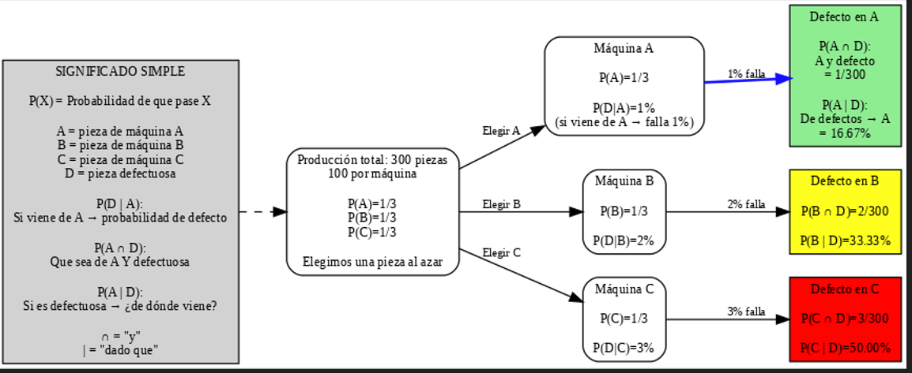
1. El Problema (Inventario dinámico por día)
Una farmacia maneja 10,000 SKUs. Uno de ellos es Paracetamol. La demanda no es constante: cambia día a día.
Ejemplo real de ventas:
- Día 1: 10 unidades
- Día 2: 200 unidades
- Día 3: 0 unidades
- Día 4: 40 unidades
Problema: ¿Cómo decidir cuánto pedir mañana si la demanda es tan variable?
2. Enfoque bayesiano (idea clave)
No usamos un promedio fijo. En su lugar, actualizamos la probabilidad de que el producto sea de alta demanda cada día.
- A = producto de alta rotación
- B = producto de baja rotación
$$P(A)=0.2 \quad , \quad P(B)=0.8$$
3. Actualización con datos (Bayes)
$$P(A|Ventas) = \frac{P(Ventas|A)\times P(A)}{P(Ventas)}$$
- P(Ventas|A): probabilidad de observar esas ventas si es alta rotación
- P(A): creencia inicial
- P(A|Ventas): probabilidad actualizada
4. Ejemplo con Paracetamol (actualización diaria)
- Día 1 (10 unidades): no cambia significativamente la probabilidad
- Día 2 (200 unidades): aumenta la probabilidad de alta rotación
- Día 3 (0 unidades): disminuye ligeramente la probabilidad
- Día 4 (40 unidades): vuelve a aumentar la probabilidad
Resultado: el sistema aprende que Paracetamol tiene comportamiento de alta rotación con variabilidad.
5. Problema del promedio
$$Promedio = (10 + 200 + 0 + 40)/4 = 62.5$$
El promedio oculta picos reales de demanda y no refleja el riesgo operativo.
6. Parámetros de demanda (estimados con datos)
Usamos los datos observados para estimar la demanda en cada escenario:
$$[10,\ 200,\ 0,\ 40]$$
- Alta rotación (≥ 50): [200]
- Baja rotación (< 50): [10, 0, 40]
$$E(D|A) = 200$$
$$E(D|B) \approx 16.67$$
Estos valores representan la demanda esperada condicionada al tipo de producto.
7. Predicción del siguiente día
Probabilidades actualizadas:
$$P(A|datos) \approx 0.75 \quad , \quad P(B|datos) \approx 0.25$$
Demanda esperada:
$$Demanda_{mañana} = P(A)\times E(D|A) + P(B)\times E(D|B)$$
$$Demanda_{mañana} = (0.75 \times 200) + (0.25 \times 16.67)$$
$$Demanda_{mañana} \approx 150 + 4.17 = 154.17$$
Se esperan aproximadamente 154 unidades mañana.
8. Decisión de inventario (Reorder Point)
- Lead time = 2 días
- Demanda diaria esperada = 154
- Stock actual = 80
- Safety stock = 40
$$Reorder\ Point = (Demanda \times Lead\ Time) + Safety\ Stock$$
$$Reorder\ Point = (154 \times 2) + 40 = 348$$
Comparación:
$$80 < 348$$
Decisión: Se debe realizar un pedido, ya que el inventario actual es insuficiente frente a la demanda esperada.
9. Cantidad a pedir
Es importante distinguir entre demanda diaria y cantidad de pedido.
- Demanda esperada ≈ 154 unidades por día
- Lead time = 2 días
Esto significa que durante el tiempo de espera se consumirán:
$$154 \times 2 = 308\ unidades$$
Sumando el inventario de seguridad:
$$308 + 40 = 348$$
Este valor es el Reorder Point, no una demanda diaria.
Para calcular cuánto pedir:
$$Cantidad = Reorder\ Point - Stock\ actual$$
$$Cantidad = 348 - 80 = 268$$
Interpretación:
- No es consumo por día
- Es un pedido único de reposición
- Cubre la demanda durante el lead time
Impacto en negocio
| Escenario | Sin Bayes | Con Bayes |
|---|---|---|
| Inventario | Promedio simple | Ajuste dinámico |
| Riesgo | Quiebres de stock | Mayor disponibilidad |
| Ventas | Pérdida de ventas en picos | Captura de demanda real |
10. Conclusión
Este enfoque integra:
- Aprendizaje a partir de datos diarios
- Actualización probabilística
- Predicción de demanda
- Decisión de reabastecimiento
Permite pasar de un enfoque estático basado en promedios a un sistema dinámico de decisión que responde al comportamiento real de la demanda.
Resultados del modelo bayesiano
| Día | Ventas | P(Alta rotación) | Interpretación |
|---|---|---|---|
| 1 | 10 | 0.30 | Baja evidencia de alta rotación |
| 2 | 200 | 0.79 | Fuerte evidencia de alta rotación |
| 3 | 0 | 0.72 | Disminuye ligeramente, pero se mantiene alta |
| 4 | 40 | 0.72 | Se mantiene como producto relevante |
Resultados de negocio
| Métrica | Valor | Interpretación |
|---|---|---|
| Demanda esperada | 148.67 | Unidades estimadas para mañana |
| Reorder Point | 337.33 | Nivel mínimo de inventario requerido |
| Stock actual | 80 | Inventario disponible |
| Cantidad a pedir | 257.33 | Unidades necesarias para reabastecer |
¿Qué significan los decimales de P(Alta rotación)?
Los valores como 0.30, 0.79, 0.72 representan probabilidades entre 0 y 1.
- 0 = imposible
- 1 = seguro
Ejemplos:
- 0.30 → 30% de probabilidad de alta rotación (bajo)
- 0.79 → 79% (muy probable)
- 0.72 → 72% (probable y estable)
Interpretación clave
Estos decimales muestran cómo el modelo aprende con los datos:
- Sube cuando hay ventas altas (200)
- Baja cuando hay ventas bajas (0)
- No vuelve a cero → mantiene memoria
El valor final (0.72) indica que el producto tiene alta probabilidad de ser de alta rotación.
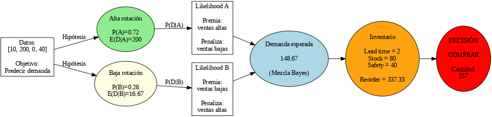
La estadística multivariante
La estadística multivariante tiene como objetivo analizar varias variables de forma simultánea para comprender cómo se relacionan entre sí y cómo influyen en un fenómeno. A diferencia de la estadística univariada o bivariada, este enfoque permite estudiar múltiples características al mismo tiempo, proporcionando una visión más completa de los datos.
Es como en un banco o en una empresa de retail: el comportamiento de un cliente no depende únicamente de una variable, sino de varios factores como sus ingresos, historial crediticio, edad, nivel de endeudamiento o frecuencia de compra. De la misma forma, las ventas de un producto pueden estar influenciadas por el precio, promociones, inventario, temporada y ubicación de la sucursal. La estadística multivariante permite analizar todas estas variables de manera conjunta para descubrir patrones y relaciones que no serían evidentes al estudiarlas por separado.
Gracias a este enfoque es posible identificar los factores que tienen mayor impacto sobre un resultado, reducir la complejidad de grandes volúmenes de información y construir modelos predictivos con mayor precisión. Por ello, constituye una de las bases fundamentales de la Ciencia de Datos, el Machine Learning y la Inteligencia Artificial.
En pocas palabras, la estadística multivariante permite comprender fenómenos complejos analizando simultáneamente múltiples variables para obtener conclusiones más precisas y apoyar la toma de decisiones basada en datos.
1. Representación General
Una observación multivariante puede representarse mediante un conjunto de variables:
$$X=(X_1,X_2,X_3,\ldots,X_p)$$
Donde:
- \(X\): conjunto o vector de variables analizadas.
- \(X_1\): primera variable de estudio.
- \(X_2\): segunda variable de estudio.
- \(X_3\): tercera variable de estudio.
- \(X_p\): última variable considerada en el análisis.
2. Forma simplificada (uso práctico)
En la práctica, el objetivo consiste en explicar o predecir una variable objetivo a partir de varias variables independientes:
$$Y=f(X_1,X_2,X_3,\ldots,X_p)$$
- \(Y\): variable objetivo o variable respuesta.
- \(X_1,X_2,\ldots,X_p\): variables explicativas o predictoras.
- \(f(\cdot)\): función que representa la relación entre todas las variables.
Aplicaciones de la estadística multivariante
La estadística multivariante abarca un amplio conjunto de técnicas cuyo objetivo es analizar simultáneamente múltiples variables para describir, explicar, clasificar o predecir fenómenos complejos. Dependiendo del problema a resolver, existen diferentes métodos que permiten obtener información valiosa a partir de los datos.
-
Regresión múltiple: Permite predecir una variable numérica a partir de varias
variables explicativas. Es ampliamente utilizada para estimar ventas, precios, riesgos
financieros o demanda.
\[
Y = \beta_0 + \beta_1 X_1 + \beta_2 X_2 + \cdots + \beta_p X_p + \varepsilon
\]
Ejemplo: Estimar el precio de una vivienda usando metros cuadrados, ubicación y número de habitaciones.
-
Regresión logística: Se utiliza cuando la variable objetivo es categórica. Por
ejemplo, determinar si un cliente pagará o no un crédito, o si una transacción es fraudulenta.
\[
P(Y=1 \mid X) = \frac{1}{1 + e^{-(\beta_0 + \beta_1 X_1 + \cdots + \beta_p X_p)}}
\]
Ejemplo: Predecir si un cliente incumplirá un préstamo (sí/no) usando ingresos, deuda y score crediticio.
-
Análisis de Componentes Principales (PCA): Reduce el número de variables
conservando la mayor cantidad posible de información, facilitando la visualización y el
procesamiento de grandes conjuntos de datos.
\[
Z_1 = w_{11}X_1 + w_{12}X_2 + \cdots + w_{1p}X_p
\]
Ejemplo: Reducir 50 variables financieras a 2 componentes para visualización de clientes.
-
Análisis Factorial: Identifica factores ocultos que explican la relación
existente entre un conjunto de variables altamente correlacionadas.
\[
X = \Lambda F + \varepsilon
\]
Ejemplo: Identificar un factor “capacidad de pago” a partir de ingresos, deuda y comportamiento financiero.
-
Análisis Cluster (Clustering): Agrupa observaciones similares sin necesidad de
conocer previamente las categorías, siendo muy utilizado para segmentación de clientes y
productos.
\[
\min \sum_{i=1}^{k} \sum_{x \in C_i} \| x - \mu_i \|^2
\]
Ejemplo: Segmentar clientes en grupos de alto, medio y bajo valor de compra.
-
Análisis Discriminante: Permite clasificar nuevas observaciones dentro de
grupos previamente definidos utilizando las características de cada individuo.
\[
\delta_k(x) = x^T \Sigma^{-1} \mu_k - \frac{1}{2} \mu_k^T \Sigma^{-1} \mu_k + \ln \pi_k
\]
Ejemplo: Clasificar si un cliente pertenece a “bajo riesgo” o “alto riesgo” crediticio.
-
MANOVA (Análisis Multivariado de la Varianza): Evalúa si existen diferencias
significativas entre varios grupos considerando múltiples variables dependientes de manera
simultánea.
\[
H_0: \mu_1 = \mu_2 = \cdots = \mu_g
\]
Ejemplo: Comparar el rendimiento académico de tres escuelas usando matemáticas, lectura y ciencias.
-
Correlación Canónica: Analiza la relación existente entre dos conjuntos de
variables para identificar asociaciones complejas entre ellos.
\[
\rho = \max \text{corr}(a^T X, b^T Y)
\]
Ejemplo: Relacionar variables de salud (peso, presión) con variables de estilo de vida (ejercicio, dieta).
Ejemplos de aplicación
La estadística multivariante tiene aplicaciones en prácticamente cualquier industria:
- Banca: Evaluación del riesgo crediticio considerando ingresos, historial, edad, deuda y comportamiento financiero.
- Retail: Predicción de ventas utilizando precio, promociones, inventario, temporada y ubicación de la sucursal.
- Salud: Diagnóstico de enfermedades mediante el análisis conjunto de síntomas, estudios clínicos e imágenes médicas.
- Manufactura: Control de calidad analizando simultáneamente múltiples variables del proceso productivo.
- Marketing: Segmentación de clientes según hábitos de compra, frecuencia, gasto e intereses.
- Ciencia de Datos: Desarrollo de modelos predictivos y algoritmos de Machine Learning utilizando múltiples variables para obtener mejores resultados.
Principales técnicas de la Estadística Multivariante
| Técnica | ¿Para qué sirve? | Ejemplo de aplicación |
|---|---|---|
| Regresión Multivariada | Explica o predice una variable utilizando varias variables independientes. | Predecir el riesgo de crédito considerando ingresos, edad, historial y deuda. |
| Análisis de Componentes Principales (PCA) | Reduce la cantidad de variables conservando la mayor información posible. | Reducir 100 variables financieras a 10 componentes principales. |
| Análisis de Clústeres | Agrupa observaciones con características similares sin conocer previamente las clases. | Segmentar clientes según hábitos de compra. |
| Análisis Discriminante | Clasifica nuevas observaciones en grupos previamente definidos. | Determinar si un cliente pertenece al grupo de bajo o alto riesgo. |
| Análisis Factorial | Identifica factores ocultos que explican la correlación entre múltiples variables. | Encontrar factores como "capacidad económica" o "comportamiento de compra". |
| MANOVA | Compara simultáneamente varias variables dependientes entre diferentes grupos. | Comparar varias métricas financieras entre distintas sucursales. |
| Correspondencias | Analiza relaciones entre variables categóricas mediante mapas bidimensionales. | Relacionar tipos de clientes con categorías de productos. |
¿Por qué es importante la estadística multivariante?
La estadística multivariante permite analizar múltiples variables de manera simultánea, descubriendo relaciones que no pueden observarse cuando se estudia cada variable por separado. Estas técnicas constituyen la base de numerosos modelos utilizados actualmente en Ciencia de Datos, Machine Learning, Inteligencia Artificial, Finanzas, Medicina, Marketing, Retail y otras áreas donde es necesario comprender fenómenos complejos a partir de grandes volúmenes de información.
Análisis de Componentes Principales (PCA)
El Análisis de Componentes Principales (Principal Component Analysis, PCA) es una técnica de estadística multivariante cuyo objetivo consiste en reducir la cantidad de variables de un conjunto de datos conservando la mayor cantidad posible de información. En lugar de analizar decenas o cientos de variables por separado, PCA transforma esas variables originales en un conjunto reducido de nuevas variables llamadas Componentes Principales.
Cada componente principal es una combinación lineal de las variables originales y está construido para explicar la mayor variabilidad posible de los datos. El primer componente captura la mayor parte de la información, el segundo explica la mayor variabilidad restante sin repetir información del primero, y así sucesivamente.
Esta técnica es ampliamente utilizada en Ciencia de Datos, Machine Learning e Inteligencia Artificial para simplificar grandes conjuntos de información, eliminar redundancia entre variables, reducir ruido y facilitar la visualización de datos de alta dimensión.
Ejemplo práctico en Retail
Supongamos que una cadena de supermercados desea analizar el comportamiento de miles de productos almacenando información como:
- Ventas mensuales
- Precio promedio
- Inventario disponible
- Margen de utilidad
- Número de promociones
- Rotación del producto
- Días de inventario
- Número de clientes que compran el producto
Analizar todas estas variables simultáneamente puede resultar complejo debido a que muchas se encuentran altamente correlacionadas. PCA permite resumir toda esta información en dos o tres componentes principales que conservan la mayor parte de la variabilidad de los datos, facilitando el análisis y la toma de decisiones.
Variables utilizadas
| Variable | Descripción |
|---|---|
| Ventas | Ventas mensuales del producto. |
| Precio | Precio promedio de venta. |
| Inventario | Cantidad disponible en almacén. |
| Margen | Margen de utilidad del producto. |
| Promociones | Número de promociones realizadas. |
| Clientes | Clientes que compraron el producto. |
Modelo Matemático
$$ Z=XW $$
Donde:
- X: matriz de datos originales.
- W: matriz de vectores propios (eigenvectores).
- Z: nuevas variables llamadas Componentes Principales.
El primer componente explica la mayor parte de la variabilidad del conjunto de datos, mientras que los siguientes componentes explican la información restante sin repetir la información capturada por los anteriores.
Objetivo del PCA
- Reducir la cantidad de variables.
- Eliminar información redundante.
- Identificar patrones ocultos.
- Facilitar la visualización de grandes volúmenes de datos.
- Disminuir el tiempo de entrenamiento de modelos de Machine Learning.
- Reducir ruido en los datos.
Resultado del PCA
Resultados obtenidos
Se generó un conjunto de datos sintético compuesto por variables comerciales clave de productos en retail: ventas, precio, inventario, margen, promociones, clientes, rotación y días de inventario.
Cada registro representa un producto con métricas operativas que permiten analizar su comportamiento comercial. Posteriormente, se aplicó un proceso de estandarización para asegurar que todas las variables contribuyeran en igualdad de condiciones al análisis multivariante.
Conjunto de datos original
| Ventas | Precio | Inventario | Margen | Promociones | Clientes | Rotación | Días Inventario |
|---|---|---|---|---|---|---|---|
| 152 | 211.44 | 2096 | 56.48 | 6 | 421 | 5.10 | 103 |
| 485 | 411.89 | 4385 | 51.53 | 0 | 808 | 13.52 | 117 |
| 910 | 403.21 | 604 | 58.25 | 6 | 243 | 8.48 | 64 |
| 320 | 92.34 | 1314 | 16.21 | 9 | 720 | 13.37 | 15 |
| 156 | 263.94 | 1631 | 46.54 | 4 | 117 | 3.03 | 67 |
Resultados del PCA
Se aplicó Análisis de Componentes Principales (PCA) con el objetivo de reducir la dimensionalidad del conjunto de datos y representar la información en dos componentes principales.
Proyección en componentes principales
| Observación | PC1 | PC2 |
|---|---|---|
| 0 | -1.7793 | -0.9008 |
| 1 | 1.1294 | 0.7635 |
| 2 | -0.1246 | -1.5843 |
| 3 | -0.0429 | 0.0823 |
| 4 | -2.1398 | -0.6901 |
Varianza explicada
| Componente | Varianza explicada |
|---|---|
| PC1 | 15.63% |
| PC2 | 15.11% |
| Total acumulado | 30.74% |
Contribución de variables (Loadings)
| Variable | PC1 | PC2 |
|---|---|---|
| Ventas | 0.5417 | -0.2630 |
| Precio | -0.0637 | 0.5294 |
| Inventario | 0.2059 | 0.5820 |
| Margen | 0.0709 | -0.4178 |
| Promociones | -0.2900 | 0.0219 |
| Clientes | 0.3571 | 0.2805 |
| Rotación | 0.6242 | -0.0949 |
| Días Inventario | -0.2322 | -0.2214 |
Interpretación del PCA
Cada punto representa un producto proyectado en el espacio de dos componentes principales. Los productos cercanos indican comportamientos comerciales similares, mientras que los más distantes representan perfiles diferenciados.
Esta reducción permite identificar patrones, agrupaciones naturales y posibles outliers dentro del portafolio de productos, facilitando la toma de decisiones basada en datos.
La siguiente gráfica muestra la proyección de los productos sobre los dos primeros Componentes Principales (PC1 y PC2). Cada punto representa un producto, y aquellos que aparecen cercanos presentan características similares de ventas, inventario, precio y comportamiento comercial.
Resultados obtenidos Analisis
Una vez generado el conjunto de datos sintético, se aplicó el algoritmo de Análisis de Componentes Principales (PCA) sobre ocho variables relacionadas con el comportamiento comercial de productos en retail: ventas, precio, inventario, margen, promociones, número de clientes, rotación e inventario en días.
Cada registro representa un producto y contiene sus principales indicadores operativos. Antes de aplicar PCA, todas las variables fueron estandarizadas para eliminar el efecto de las diferentes escalas de medición y garantizar que cada una aportara la misma importancia durante el análisis.
Variables analizadas
| Variable | Descripción |
|---|---|
| Ventas | Cantidad de unidades vendidas por producto. |
| Precio | Precio promedio del producto. |
| Inventario | Existencias disponibles en almacén. |
| Margen | Margen de utilidad del producto. |
| Promociones | Número de promociones aplicadas. |
| Clientes | Clientes que adquirieron el producto. |
| Rotación | Velocidad con la que el producto sale del inventario. |
| Días de Inventario | Tiempo estimado que permanecerá el inventario disponible. |
Resultados del PCA
El algoritmo redujo las ocho variables originales a dos Componentes Principales (PC1 y PC2), conservando la mayor cantidad posible de información del conjunto de datos.
| Indicador | Resultado | Interpretación |
|---|---|---|
| Varianza explicada (PC1) | 15.63% | El primer componente resume la mayor parte de la información contenida en las variables originales. |
| Varianza explicada (PC2) | 15.11% | El segundo componente aporta información adicional sin repetir la explicada por PC1. |
| Varianza acumulada | 30.74% | Los dos primeros componentes conservan aproximadamente el 31% de la información total del conjunto de datos. |
Importancia de las variables
Los coeficientes de carga (Loadings) indican qué variables contribuyen en mayor medida a cada componente principal.
| Variable | Mayor influencia | Interpretación |
|---|---|---|
| Rotación | PC1 (0.624) | Es la variable con mayor peso dentro del primer componente, indicando que la velocidad de rotación explica gran parte de la variabilidad observada. |
| Ventas | PC1 (0.542) | Las ventas tienen una fuerte contribución sobre el primer componente. |
| Inventario | PC2 (0.582) | El inventario es la variable que mayor influencia tiene sobre el segundo componente. |
| Precio | PC2 (0.529) | El precio también contribuye significativamente a explicar la variabilidad del segundo componente. |
Interpretación del PCA
El PCA reduce 8 variables comerciales a 2 componentes principales, conservando ~30.74% de la información total del dataset.
PC1 – Actividad comercial
Representa ventas, rotación y clientes. Valores altos indican productos con alta demanda y movimiento.
PC2 – Estructura de inventario
Representa inventario, precio y margen. Valores altos indican mayor carga de capital o costo de mantenimiento.
Conclusión
La dispersión refleja distintos tipos de productos dentro del portafolio: productos de alta rotación, productos de alto inventario y productos de baja actividad, lo que facilita su segmentación estratégica.
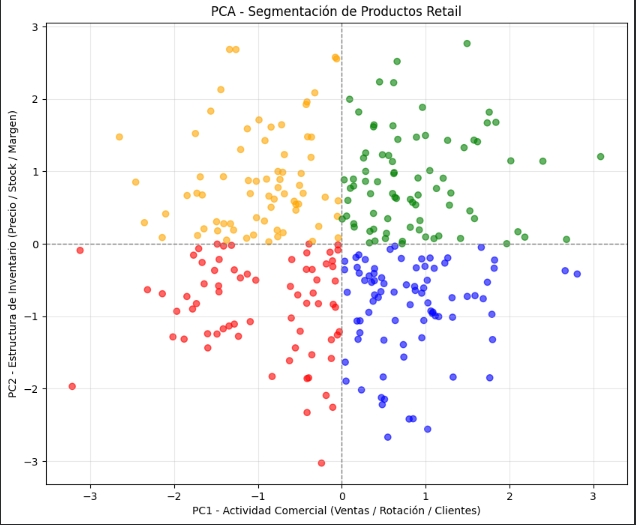
Análisis Factorial (AF)
El Análisis Factorial (AF) es una técnica de estadística multivariante cuyo objetivo es identificar variables latentes no observadas que explican las correlaciones entre un conjunto de variables observadas.
A diferencia de otras técnicas de reducción de dimensionalidad, el análisis factorial no solo busca simplificar los datos, sino también descubrir la estructura subyacente que genera las relaciones entre las variables.
Cada variable observada se modela como una combinación de factores comunes y un término de error específico. Los factores representan dimensiones ocultas que no se observan directamente, pero que influyen en el comportamiento de las variables originales.
Esta técnica es ampliamente utilizada en estadística multivariante, ciencia de datos y psicometría para identificar constructos latentes, reducir redundancia entre variables y comprender la estructura interna de los datos.
Análisis Factorial (AF) – Ejemplo en Retail y Banca
El Análisis Factorial permite identificar factores latentes que explican el comportamiento de múltiples variables observadas en un sistema. En contextos de negocio como retail y banca, estas variables suelen estar altamente correlacionadas, por lo que el AF ayuda a descubrir dimensiones ocultas del comportamiento del cliente o del producto.
Ejemplo en Retail
En retail, el análisis factorial puede revelar factores como demanda del producto, eficiencia de inventario y rentabilidad comercial.
| Variable | Descripción | Factor Latente(no existe como columna) |
|---|---|---|
| Ventas | Unidades vendidas por producto | Demanda Comercial |
| Rotación | Velocidad de salida del inventario | Demanda Comercial |
| Clientes | Número de compradores | Demanda Comercial |
| Inventario | Stock disponible | Eficiencia de Inventario |
| Días de Inventario | Tiempo de permanencia del stock | Eficiencia de Inventario |
| Margen | Ganancia por producto | Rentabilidad |
| Precio | Valor de venta del producto | Rentabilidad |
Ejemplo en Banca
En banca, el análisis factorial puede identificar factores como riesgo crediticio, capacidad de pago y comportamiento financiero.
| Variable | Descripción | Factor Latente(no existe como columna) |
|---|---|---|
| Ingreso mensual | Salario o ingresos del cliente | Capacidad de Pago |
| Deuda total | Monto total de créditos activos | Riesgo Crediticio |
| Historial de pagos | Comportamiento de pago | Riesgo Crediticio |
| Uso de tarjeta | Porcentaje de uso del crédito | Comportamiento Financiero |
| Antigüedad crediticia | Tiempo con historial bancario | Comportamiento Financiero |
| Score crediticio | Calificación del cliente | Riesgo Crediticio |
Interpretación
El análisis factorial permite reducir múltiples variables correlacionadas en un conjunto pequeño de factores interpretables, facilitando la toma de decisiones en áreas como segmentación de clientes, evaluación de riesgo y análisis de desempeño de productos.
Análisis de Factores (FA) – Resultados obtenidos
Una vez generado el conjunto de datos sintético, se aplicó el algoritmo de Análisis Factorial (FA) sobre ocho variables relacionadas con el comportamiento comercial de productos en retail: ventas, precio, inventario, margen, promociones, número de clientes, rotación e inventario en días.
Cada registro representa un producto y contiene sus principales indicadores operativos. Antes de aplicar el análisis, todas las variables fueron estandarizadas para eliminar el efecto de las diferentes escalas de medición y garantizar que cada una aportara la misma importancia durante el análisis.
Variables analizadas
| Variable | Descripción |
|---|---|
| Ventas | Cantidad de unidades vendidas por producto. |
| Precio | Precio promedio del producto. |
| Inventario | Existencias disponibles en almacén. |
| Margen | Margen de utilidad del producto. |
| Promociones | Número de promociones aplicadas. |
| Clientes | Clientes que adquirieron el producto. |
| Rotación | Velocidad con la que el producto sale del inventario. |
| Días de Inventario | Tiempo estimado que permanecerá el inventario disponible. |
Resultados del Análisis Factorial (FA)
El algoritmo identificó dos factores latentes principales que explican la estructura de correlación entre las variables del negocio.
| Indicador | Resultado |
|---|---|
| Factor 1 (interpretación) | Velocidad de rotación / movimiento del producto |
| Factor 2 (interpretación) | Estrategia comercial y promociones |
Importancia de las variables (Loadings)
Los coeficientes de carga (loadings) indican la relación entre cada variable observada y los factores latentes.
| Variable | Factor 1 | Factor 2 |
|---|---|---|
| Ventas | 0.159437 | -0.099023 |
| Rotación | -0.639448 | 0.068825 |
| Clientes | -0.106876 | 0.053263 |
| Inventario | 0.089249 | -0.185436 |
| Días de Inventario | -0.111098 | 0.090296 |
| Precio | 0.189458 | 0.144400 |
| Margen | -0.098136 | 0.129880 |
| Promociones | 0.171174 | 0.474204 |
Variables más influyentes por factor
| Factor | Variables dominantes |
|---|---|
| Factor 1 | Rotación, Precio, Promociones |
| Factor 2 | Promociones, Inventario, Precio |
Interpretación del Análisis Factorial
El análisis factorial identifica dos dimensiones latentes principales dentro del comportamiento del portafolio de productos.
- Factor 1: representa la velocidad de movimiento del producto dentro del mercado.
- Factor 2: representa la estrategia comercial basada en promociones e inversión de inventario.
A diferencia del PCA, el análisis factorial no solo resume la información, sino que busca explicar la estructura subyacente que genera las correlaciones entre variables.
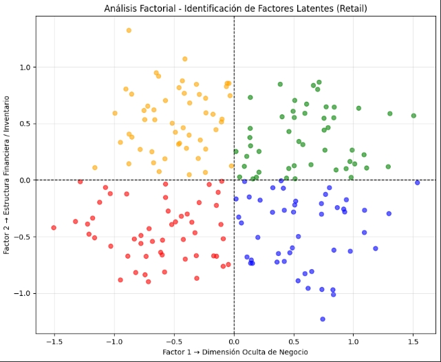
Conclusión
El modelo permite identificar dos fuerzas principales dentro del negocio: la dinámica de rotación de productos y la estrategia de promociones. Esto facilita la segmentación del portafolio desde una perspectiva estructural y no únicamente descriptiva.
Comparación: PCA vs Análisis Factorial (FA)
El Análisis de Componentes Principales (PCA) y el Análisis Factorial (FA) son técnicas de estadística multivariante utilizadas para reducir dimensionalidad, pero con objetivos distintos: PCA se enfoca en resumir la información, mientras que FA busca explicar la estructura latente de los datos.
Comparación conceptual
| Aspecto | PCA | Análisis Factorial (FA) |
|---|---|---|
| Objetivo | Reducir y resumir variables | Explicar variables latentes |
| Enfoque | Varianza total | Correlación compartida |
| Interpretación | Geométrica / matemática | Estructural / de negocio |
| Salida | Componentes (PC1, PC2) | Factores (F1, F2) |
Resultados en tu caso (Retail)
PCA (Componentes principales)
En PCA, las variables más influyentes fueron principalmente: Rotación, Ventas y Clientes, formando un eje de actividad comercial.
Interpretación: El primer componente representa el nivel de movimiento y desempeño general del producto en el mercado.
Análisis Factorial (FA)
En FA, los factores identificados fueron más estructurados:
- Factor 1: Dominado por Rotación → velocidad de movimiento del producto
- Factor 2: Dominado por Promociones → estrategia de impulso comercial
Interpretación: El modelo separa claramente la dinámica operativa (rotación) de la estrategia comercial (promociones).
¿Por qué los resultados son diferentes?
Aunque ambos métodos reducen dimensionalidad, su enfoque es distinto:
- PCA: busca explicar la mayor variabilidad posible sin asumir estructura causal (es decir, resume la información de la forma más compacta posible sin intentar explicar “por qué” ocurre).
- FA: busca identificar factores latentes que explican las correlaciones entre variables (es decir, intenta encontrar las causas ocultas o comunes que generan el comportamiento de las variables).
Por esta razón, PCA agrupa variables como ventas, clientes y rotación en un mismo eje de actividad comercial, mientras que FA separa la rotación y las promociones en factores distintos, revelando posibles “fuerzas ocultas” dentro del negocio.
Conclusión
PCA es una técnica de reducción enfocada en resumen de información, mientras que el Análisis Factorial permite interpretar la estructura subyacente del negocio. En este caso, ambos métodos revelan perspectivas complementarias del comportamiento del portafolio de productos.
Clústeres (Clustering)
El análisis de clústeres es una técnica de estadística multivariada y aprendizaje no supervisado cuyo objetivo es agrupar observaciones en conjuntos homogéneos llamados clústeres.
Cada clúster está formado por elementos que son más similares entre sí que con los elementos de otros grupos, según las variables analizadas.
A diferencia de técnicas como PCA o el Análisis Factorial, el clustering no reduce variables ni busca factores latentes, sino que se enfoca directamente en la segmentación natural de los datos.
¿Cómo funciona?
El algoritmo mide la distancia o similitud entre observaciones y las agrupa iterativamente hasta formar conjuntos estables. Uno de los métodos más utilizados es K-Means.
- Se define un número de grupos (K)
- El algoritmo asigna cada punto al centro más cercano
- Los centros se recalculan hasta estabilizarse
¿Para qué sirve?
- Identificar segmentos de clientes o productos
- Detectar patrones de comportamiento similares
- Separar grupos de alto y bajo desempeño
- Apoyar estrategias comerciales y de marketing
Ejemplo en Retail
En retail, el clustering permite agrupar productos según su comportamiento comercial.
- Clúster 1: Alta rotación y alta demanda
- Clúster 2: Bajo movimiento y alto inventario
- Clúster 3: Productos rentables pero de baja frecuencia de compra
Ejemplo en Banca
En banca, se utiliza para segmentar clientes según su comportamiento financiero.
- Clúster 1: Clientes premium con bajo riesgo
- Clúster 2: Clientes con alto endeudamiento
- Clúster 3: Clientes nuevos con poca información histórica
| Cluster | Perfil de negocio | Interpretación matemática |
|---|---|---|
| 0 | Alta rentabilidad | Productos cercanos a un centroide con alto margen y ventas |
| 1 | Sobreinventario | Mayor contribución de inventario y baja eficiencia en ventas |
| 2 | Alta rotación | Menor distancia en variables de rotación y demanda |
Conclusión
En este caso de retail, K-Means agrupa productos únicamente por similitud matemática en un espacio de variables comerciales. La interpretación de negocio (rentabilidad, sobreinventario, rotación) se obtiene al traducir los centroides a variables financieras.
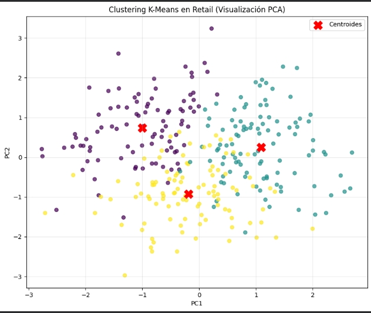
Comparación de técnicas de Estadística Multivariada
Las técnicas de estadística multivariada tienen objetivos diferentes dentro del análisis de datos. Algunas se enfocan en predicción, otras en reducción de dimensionalidad y otras en segmentación de información. La siguiente tabla resume su uso en un contexto de negocio.
| Método | ¿Cuándo usarlo? | ¿Cuándo no usarlo? | Ejemplo en negocio |
|---|---|---|---|
| Regresión Multivariada | Cuando se desea predecir una variable numérica a partir de múltiples variables explicativas. | Cuando las relaciones entre variables no son estables o no existe dependencia predictiva clara. | Predicción de ventas en retail usando precio, promociones, clientes y rotación. |
| Análisis de Componentes Principales (PCA) | Cuando se busca reducir dimensionalidad conservando la mayor variabilidad posible de los datos. | Cuando se requiere interpretación causal o explicación de factores latentes del negocio. | Reducir variables de productos (ventas, inventario, margen, etc.) a componentes para visualización. |
| Análisis Factorial | Cuando se desea identificar factores latentes que explican la correlación entre variables observadas. | Cuando el objetivo es únicamente reducción de datos sin interpretación estructural. | Identificar factores como demanda, rentabilidad o estrategia comercial en datos de retail o banca. |
| Clústeres (K-Means) | Cuando se requiere segmentar observaciones en grupos homogéneos sin etiquetas previas. | Cuando se necesita predecir valores numéricos exactos. | Segmentación de productos en alta rotación, sobreinventario y alta rentabilidad. |
Métodos avanzados de investigación estadística
Los métodos avanzados de investigación estadística reúnen un conjunto de técnicas utilizadas para analizar problemas complejos donde los métodos tradicionales pueden no ser suficientes. Su objetivo es construir modelos más precisos, realizar estimaciones confiables, incorporar la incertidumbre y estudiar fenómenos que cambian con el tiempo o involucran una gran cantidad de variables.
Estas técnicas son ampliamente utilizadas en investigación científica, ciencia de datos, inteligencia artificial, economía, medicina y finanzas. Permiten responder preguntas más complejas, como estimar el riesgo de una inversión mediante simulaciones, seleccionar las variables más relevantes para un modelo predictivo, analizar datos organizados en distintos niveles o modelar procesos aleatorios.
A diferencia de la estadística descriptiva, que resume información, o de la estadística inferencial, que obtiene conclusiones a partir de muestras, los métodos avanzados buscan desarrollar modelos estadísticos capaces de representar con mayor precisión el comportamiento de fenómenos reales y mejorar la toma de decisiones en escenarios con incertidumbre.
En pocas palabras, estos métodos proporcionan herramientas para construir modelos más robustos, realizar predicciones más precisas y analizar situaciones donde la variabilidad y la incertidumbre juegan un papel fundamental.
Estimación por Máxima Verosimilitud (Maximum Likelihood Estimation - MLE)
La Estimación por Máxima Verosimilitud (Maximum Likelihood Estimation, MLE) es un método estadístico utilizado para estimar los parámetros de un modelo a partir de los datos observados. Su objetivo consiste en encontrar los valores que hacen más probable haber obtenido la información registrada.
En términos sencillos, el algoritmo prueba diferentes valores para los parámetros del modelo y selecciona aquellos que mejor representan el comportamiento real de los datos. Esta técnica es ampliamente utilizada en estadística, ciencia de datos, inteligencia artificial y machine learning para ajustar modelos predictivos.
¿Cómo funciona?
Supongamos que una tienda registra las ventas diarias de un producto durante cinco días:
| Día | Ventas |
|---|---|
| 1 | 520 |
| 2 | 510 |
| 3 | 495 |
| 4 | 530 |
| 5 | 550 |
A partir de estas observaciones, MLE busca estimar los parámetros que mejor describen el comportamiento de las ventas.
Estimación por Máxima Verosimilitud (MLE)
La función de verosimilitud para el caso de ventas es:
$$ L(\mu,\sigma)=P(520,510,495,530,550 \mid \mu,\sigma) $$
Este modelo busca encontrar los valores de \(\mu\) y \(\sigma\) que hacen más probable observar estos datos.
Desglose de la fórmula con datos reales
La verosimilitud se expresa como el producto de las densidades individuales:
$$ L(\mu,\sigma)=f(520)\cdot f(510)\cdot f(495)\cdot f(530)\cdot f(550) $$
Donde cada término sigue una distribución normal:
$$ f(x)= \frac{1}{\sigma\sqrt{2\pi}} e^{-\frac{(x-\mu)^2}{2\sigma^2}} $$
Sustitución de los datos en el modelo (Evaluación de verosimilitud)
En esta etapa del modelo MLE ya se conocen los parámetros estimados del sistema:
μ = 521 (promedio de ventas)
σ = 18.55 (variabilidad de las ventas)
A partir de estos valores, se evalúa qué tan probable es observar cada dato dentro del comportamiento del modelo normal.
| Observación (x) | Qué se está calculando | Interpretación del resultado |
|---|---|---|
| 520 | \( f(x|\mu,\sigma)=\frac{1}{\sigma\sqrt{2\pi}} e^{-\frac{(520-521)^2}{2\sigma^2}} \) |
Alta consistencia con el comportamiento promedio del sistema \( f(520) \approx 0.0189 \) |
| 510 | \( f(x|\mu,\sigma)=\frac{1}{\sigma\sqrt{2\pi}} e^{-\frac{(510-521)^2}{2\sigma^2}} \) |
Consistente con el patrón de ventas esperado \( f(510) \approx 0.0178 \) |
| 495 | \( f(x|\mu,\sigma)=\frac{1}{\sigma\sqrt{2\pi}} e^{-\frac{(495-521)^2}{2\sigma^2}} \) |
Menor consistencia (valor más alejado del promedio) Probabilidad menor que los anteriores |
| 530 | \( f(x|\mu,\sigma)=\frac{1}{\sigma\sqrt{2\pi}} e^{-\frac{(530-521)^2}{2\sigma^2}} \) |
Ligera desviación del promedio, aún dentro del comportamiento esperado \( f(530) \approx 0.0180 \) |
| 550 | \( f(x|\mu,\sigma)=\frac{1}{σ\sqrt{2\pi}} e^{-\frac{(550-521)^2}{2σ^2}} \) |
Valor más alejado del promedio → menor probabilidad dentro del modelo \( f(550) \approx 0.0105 \) |
Interpretación general:
El modelo asigna mayor “probabilidad” a valores cercanos al promedio (μ = 521) y penaliza
aquellos que se alejan. Esto permite identificar qué tan representativo es cada dato dentro del
comportamiento normal de ventas.
| Observación | Expresión en el modelo | Resultado |
|---|---|---|
| 495 | \( \frac{1}{\sigma\sqrt{2\pi}} e^{-\frac{(495-\mu)^2}{2\sigma^2}} \) | \( f(495 \mid \mu=521,\sigma=21) \approx 0.0112 \) |
| 530 | \( \frac{1}{\sigma\sqrt{2\pi}} e^{-\frac{(530-\mu)^2}{2\sigma^2}} \) | \( f(530 \mid \mu=521,\sigma=21) \approx 0.0180 \) |
| 550 | \( \frac{1}{\sigma\sqrt{2\pi}} e^{-\frac{(550-\mu)^2}{2\sigma^2}} \) | \( f(550 \mid \mu=521,\sigma=21) \approx 0.0105 \) |
Interpretación del modelo
El modelo compara todas las combinaciones posibles de \(\mu\) y \(\sigma\) y selecciona aquella que:
- Maximiza la probabilidad de observar las ventas reales
- Reduce la distancia entre los datos observados y el modelo teórico
En este caso, el ajuste óptimo es:
$$ \hat{\mu}=521 \quad , \quad \hat{\sigma}\approx 21 $$
Conclusión
La Estimación por Máxima Verosimilitud (MLE) transforma los datos históricos en parámetros estadísticos que describen el comportamiento real del negocio. En lugar de seleccionar una media o una variabilidad de forma arbitraria, el algoritmo evalúa diferentes combinaciones y elige aquella que hace más probable haber observado los datos registrados.
En este ejemplo, el modelo estima una media (μ) de 521 ventas y una desviación estándar (σ) de 18.55 ventas, indicando que el producto suele vender alrededor de 521 unidades y que las ventas normalmente varían aproximadamente 18.55 unidades respecto a ese promedio.
En retail, esta información permite comprender el nivel habitual de demanda de un producto y la variabilidad de sus ventas, facilitando decisiones relacionadas con inventario, abastecimiento, planificación de compras y estimación de la demanda futura.
En pocas palabras: el modelo prueba diferentes escenarios hasta encontrar el que mejor explica lo que realmente ocurrió en las ventas. Al utilizar los parámetros que maximizan la probabilidad de los datos observados, se obtiene una representación más confiable del comportamiento del negocio y una mejor base para tomar decisiones. Este resultado puede utilizarse como referencia para estimar el riesgo de sobreinventario o desabasto en la gestión de inventarios.
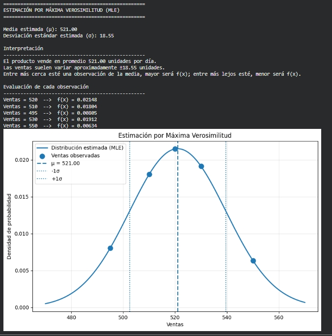
Procesos estocásticos
Los procesos estocásticos son modelos matemáticos que describen cómo evoluciona un fenómeno a lo largo del tiempo cuando existe aleatoriedad e incertidumbre. La aleatoriedad significa que los resultados no pueden conocerse con certeza antes de que ocurran, mientras que la incertidumbre indica que pueden existir varios resultados posibles, cada uno con una probabilidad de suceder. En lugar de asumir que un sistema siempre se comportará de la misma manera, estos modelos consideran diferentes escenarios que pueden presentarse conforme transcurre el tiempo.
Los procesos estocásticos son ampliamente utilizados en ciencia de datos, inteligencia artificial, banca, finanzas, logística, telecomunicaciones y salud. Permiten modelar y analizar fenómenos cuyo comportamiento cambia con el tiempo, como la demanda de un producto, la probabilidad de incumplimiento de un crédito, la llegada de clientes a una sucursal, el comportamiento del mercado financiero o la evolución de enfermedades.
A diferencia de los modelos determinísticos, en los que las mismas condiciones producen siempre el mismo resultado, los procesos estocásticos reconocen que los sistemas reales están influenciados por factores impredecibles. Por ello, utilizan probabilidades para representar los diferentes escenarios que pueden ocurrir y la posibilidad de que cada uno de ellos suceda.
En el sector retail, los procesos estocásticos permiten analizar cómo puede evolucionar la demanda de un producto en los próximos días o meses, ayudando a estimar escenarios de sobreinventario o desabasto y apoyando la planificación de compras y reabastecimiento. En el sector bancario, permiten estudiar la evolución del riesgo de un cliente, la probabilidad de incumplimiento de un crédito o el comportamiento de una cartera a lo largo del tiempo, proporcionando información para la gestión del riesgo y la toma de decisiones.
Estos modelos también sirven como base para realizar análisis de escenarios o What-If. A partir de un pronóstico o de las condiciones actuales del negocio, es posible evaluar cómo podrían cambiar los resultados si se modifican variables como los tiempos de entrega, los días hábiles, el inventario disponible, una promoción o cambios en la demanda. De esta forma, no solo se obtiene un valor esperado, sino diferentes escenarios posibles que ayudan a tomar decisiones con mayor confianza.
En pocas palabras, un proceso estocástico permite comprender cómo puede cambiar un fenómeno a lo largo del tiempo cuando existe incertidumbre. En lugar de ofrecer una única respuesta, ayuda a analizar distintos escenarios posibles, estimar el riesgo asociado a cada uno y proporcionar una base más sólida para la toma de decisiones.
Ejemplo de aplicación en Retail
Supongamos que una farmacia desea planificar el inventario de un medicamento para el siguiente mes. Existen diferentes enfoques estadísticos que responden preguntas distintas:
| Enfoque | ¿Qué responde? | Ejemplo |
|---|---|---|
| Modelo determinístico | Asume que las mismas condiciones producen siempre el mismo resultado. | Las ventas históricas muestran una media de 150 unidades. Si únicamente se utiliza ese valor, el pedido sería de 150 unidades. |
| Forecasting | Predice el valor esperado para un periodo futuro. | El modelo pronostica que el próximo mes se venderán aproximadamente 162 unidades. |
| Proceso estocástico | Analiza cómo puede evolucionar la demanda considerando la incertidumbre. | Además del pronóstico de 162 unidades, estima escenarios como: • Escenario pesimista: 135 unidades. • Escenario esperado: 162 unidades. • Escenario optimista: 190 unidades. Cada escenario tiene una probabilidad de ocurrencia, permitiendo evaluar el riesgo de sobreinventario o desabasto. |
Gracias a esta información, el área de abastecimiento puede evaluar distintos escenarios antes de realizar un pedido, considerando factores como promociones, retrasos de proveedores, inventario en tránsito o cambios inesperados en la demanda.
Ejemplo de aplicación en Banca
En una institución financiera también existen diferentes enfoques para analizar el comportamiento de una cartera de crédito.
| Enfoque | ¿Qué responde? | Ejemplo |
|---|---|---|
| Modelo determinístico | Resume el comportamiento histórico mediante indicadores fijos. | La cartera de créditos revolventes presenta una PD promedio del 4%. |
| Forecasting | Predice el comportamiento esperado para un periodo futuro. | Se estima que la PD promedio de la cartera será del 4.6% durante el próximo trimestre. |
| Proceso estocástico | Modela la evolución del riesgo considerando diferentes escenarios. |
Se pueden generar escenarios como: • Las PYMES con créditos revolventes mantienen una baja probabilidad de incumplimiento. • Los créditos amortizables presentan un incremento moderado del riesgo debido a cambios en las condiciones económicas. • Un escenario adverso incrementa la probabilidad de incumplimiento de ambos productos, permitiendo anticipar pérdidas esperadas y fortalecer la administración del riesgo. |
En ambos sectores, los procesos estocásticos no sustituyen al forecasting. Mientras el forecasting estima el valor más probable para el siguiente periodo, los procesos estocásticos permiten analizar cómo podría evolucionar el sistema bajo distintos escenarios y con diferentes probabilidades. Esta información constituye la base para realizar análisis What-If, simulaciones y motores de decisión que apoyan la planeación del negocio.
Principales procesos estocásticos
| Proceso estocástico | Fórmula general | ¿Para qué sirve? | Aplicaciones |
|---|---|---|---|
| Random Walk (Caminata aleatoria) | Xt = Xt-1 + ε | Analiza cómo cambia un valor con el tiempo cuando cada cambio es aleatorio. | Precios de acciones, demanda de productos, economía. |
| Cadena de Markov | P(Xt+1|Xt) | Estudia cómo un sistema cambia de un estado a otro con cierta probabilidad. | Riesgo de crédito, comportamiento de clientes, inteligencia artificial. |
| Proceso de Poisson | P(X=k)=e-λλk/k! | Calcula cuántos eventos pueden ocurrir durante un periodo de tiempo. | Llegada de clientes, llamadas, fraudes, accidentes. |
| Movimiento Browniano | dX = μdt + σdW | Representa movimientos continuos que presentan pequeñas variaciones aleatorias. | Mercados financieros, economía e ingeniería. |
| Proceso de Wiener | W(t) | Es la base matemática para modelar movimientos completamente aleatorios. | Finanzas, simulaciones y modelos de riesgo. |
| Proceso Gaussiano | GP(m,K) | Permite estimar el comportamiento de datos continuos considerando la incertidumbre. | Machine Learning, inteligencia artificial y optimización. |
| Proceso de Nacimiento y Muerte | λ, μ | Modela sistemas donde continuamente entran y salen elementos. | Hospitales, inventarios, colas y telecomunicaciones. |
| Proceso de Renovación | N(t) | Analiza eventos que se repiten a lo largo del tiempo. | Mantenimiento de equipos, reemplazo de maquinaria y confiabilidad. |
| Proceso de Lévy | X(t)=μt+σW+J | Modela fenómenos que presentan cambios bruscos e inesperados. | Mercados financieros, seguros y análisis de riesgo. |
Ejemplo: Teoría de colas en Retail
La teoría de colas es una aplicación de los procesos estocásticos de nacimiento y muerte. Su objetivo es analizar sistemas donde continuamente llegan y salen elementos, permitiendo optimizar recursos como cajeros, cajas, personal o líneas de atención para reducir los tiempos de espera y mejorar el nivel de servicio.
Supongamos que una farmacia desea analizar el comportamiento de una de sus cajas durante la hora de mayor demanda. Después de observar el funcionamiento durante una hora se obtuvieron los siguientes datos:
Datos observados
| Variable | Valor | Interpretación |
|---|---|---|
| Llegadas (λ) | 24 clientes/hora | En promedio llegan 24 clientes cada hora. |
| Atención (μ) | 30 clientes/hora | El cajero puede atender aproximadamente 30 clientes por hora. |
Fórmula de utilización del sistema
$$ \rho=\frac{\lambda}{\mu} $$
Donde:
- ρ (rho) = porcentaje de utilización del sistema.
- λ (lambda) = promedio de clientes que llegan por hora.
- μ (mu) = promedio de clientes que pueden ser atendidos por hora.
Sustitución de valores
$$ \rho=\frac{24}{30} $$
$$ \rho=0.80 $$
Esto significa que el cajero permanece ocupado aproximadamente el 80% del tiempo y únicamente está disponible el 20%. En estas condiciones el servicio funciona adecuadamente, aunque en algunos momentos pueden formarse pequeñas filas.
Escenario de alta demanda
Supongamos que durante una promoción comienzan a llegar más clientes.
| Variable | Nuevo valor |
|---|---|
| Llegadas (λ) | 34 clientes/hora |
| Atención (μ) | 30 clientes/hora |
$$ \rho=\frac{34}{30}=1.13 $$
El resultado indica que el cajero necesitaría trabajar el 113% del tiempo para atender a todos los clientes, lo cual no es posible. Como consecuencia, las filas crecerán continuamente, aumentarán los tiempos de espera y algunos clientes podrían abandonar la compra.
Optimización del sistema
Para mejorar el servicio, la farmacia decide abrir una segunda caja. Ahora ambos cajeros pueden atender conjuntamente:
$$ \mu=60 $$
Aplicando nuevamente la fórmula:
$$ \rho=\frac{34}{60}=0.57 $$
Resultados de negocio
| Métrica | Antes | Después | Interpretación |
|---|---|---|---|
| Clientes por hora | 34 | 34 | La demanda permanece igual. |
| Capacidad de atención | 30 | 60 | Se duplicó la capacidad de atención. |
| Utilización | 113% | 57% | Se redujo significativamente la carga de trabajo. |
| Nivel de servicio | Bajo | Alto | Menor tiempo de espera y mejor atención. |
En este ejemplo, la teoría de colas permitió identificar que una sola caja era insuficiente para atender la demanda durante las horas pico. Al aumentar la capacidad de atención, se redujo la utilización del sistema y se mejoró el nivel de servicio ofrecido a los clientes.
Ejemplo: Teoría de colas en un Centro de Distribución (CEDIS)
Una de las aplicaciones más importantes de la teoría de colas en logística consiste en analizar el flujo de pedidos dentro de un Centro de Distribución (CEDIS). Cada día llegan órdenes de surtido provenientes de las farmacias y el almacén debe prepararlas y despacharlas lo más rápido posible.
Si llegan más pedidos de los que el CEDIS puede preparar, comienzan a generarse retrasos, aumenta el tiempo de despacho y las farmacias reciben sus productos más tarde, incrementando el riesgo de desabasto.
Datos del CEDIS
| Variable | Valor | Interpretación |
|---|---|---|
| Llegadas (λ) | 180 pedidos/día | En promedio el CEDIS recibe 180 pedidos diarios de las farmacias. |
| Capacidad de despacho (μ) | 220 pedidos/día | El almacén puede preparar y despachar hasta 220 pedidos por día. |
Fórmula de utilización del sistema
$$ \rho=\frac{\lambda}{\mu} $$
Donde:
- ρ (rho) = porcentaje de utilización del CEDIS.
- λ (lambda) = pedidos que llegan diariamente.
- μ (mu) = pedidos que el CEDIS puede despachar diariamente.
Sustitución de valores
$$ \rho=\frac{180}{220} $$
$$ \rho=0.82 $$
Esto significa que el CEDIS utiliza aproximadamente el 82% de su capacidad diaria. En estas condiciones todavía existe capacidad suficiente para atender nuevos pedidos sin generar retrasos importantes.
Escenario de alta demanda
Durante una campaña comercial aumenta la demanda y las farmacias comienzan a enviar más pedidos al CEDIS.
| Variable | Nuevo valor |
|---|---|
| Llegadas (λ) | 260 pedidos/día |
| Capacidad (μ) | 220 pedidos/día |
$$ \rho=\frac{260}{220}=1.18 $$
El resultado indica que el CEDIS necesitaría trabajar al 118% de su capacidad para atender todos los pedidos, lo cual no es posible. Como consecuencia, comienzan a acumularse órdenes pendientes, aumenta el tiempo de despacho y las farmacias reciben sus productos con retraso.
Optimización del proceso
Para resolver el problema, la empresa incorpora un segundo turno operativo y aumenta la capacidad de despacho.
$$ \mu=320 \text{ pedidos/día} $$
Al recalcular la utilización:
$$ \rho=\frac{260}{320}=0.81 $$
Resultados de negocio
| Métrica | Antes | Después | Interpretación |
|---|---|---|---|
| Pedidos recibidos | 260 | 260 | La demanda permanece igual. |
| Capacidad de despacho | 220 | 320 | Se incrementó la capacidad operativa. |
| Utilización | 118% | 81% | El CEDIS vuelve a operar dentro de un rango adecuado. |
| Tiempo de despacho | Alto | Bajo | Se reducen los retrasos hacia las farmacias. |
| Riesgo de desabasto | Alto | Bajo | Los productos llegan oportunamente a las sucursales. |
En este ejemplo, la teoría de colas permitió identificar que el CEDIS estaba recibiendo más pedidos de los que podía despachar diariamente. Al incrementar la capacidad operativa, se redujo la utilización del sistema, se disminuyeron los tiempos de despacho y se redujo el riesgo de desabasto en las farmacias. Este tipo de análisis es utilizado para planificar recursos, mejorar el nivel de servicio y optimizar la operación logística.
Teoría de probabilidad avanzada
La teoría de probabilidad avanzada es una rama de la estadística que estudia cómo modelar y analizar fenómenos donde existe incertidumbre mediante herramientas matemáticas más completas que las utilizadas en la probabilidad básica. Su objetivo es describir el comportamiento de variables aleatorias, medir la variabilidad de los datos y calcular la probabilidad de que ocurran diferentes eventos en situaciones reales.
A diferencia de la probabilidad básica, que trabaja con ejemplos sencillos como el lanzamiento de una moneda o un dado, la probabilidad avanzada permite analizar problemas donde intervienen múltiples variables, grandes volúmenes de información y fenómenos cuyo comportamiento cambia continuamente.
Estas técnicas son ampliamente utilizadas en ciencia de datos, inteligencia artificial, banca, finanzas, logística, salud e ingeniería. Permiten estimar el comportamiento esperado de un sistema, evaluar el riesgo asociado a distintas decisiones y comprender cómo influye la incertidumbre en el análisis de datos.
En pocas palabras, la teoría de probabilidad avanzada proporciona las bases matemáticas necesarias para comprender el comportamiento de fenómenos aleatorios y constituye el fundamento de numerosos métodos estadísticos y modelos predictivos utilizados en la actualidad.
Ejemplo: Cálculo del valor esperado (Esperanza Matemática)
Uno de los conceptos más importantes de la teoría de probabilidad avanzada es el valor esperado, también conocido como esperanza matemática. Su objetivo es calcular el valor promedio que se espera obtener cuando un fenómeno aleatorio puede presentar distintos resultados, cada uno con una probabilidad diferente.
A diferencia de un promedio tradicional, el valor esperado no considera que todos los resultados ocurren con la misma frecuencia. En cambio, asigna un peso a cada resultado de acuerdo con la probabilidad de que ocurra, obteniendo una estimación más representativa del comportamiento esperado del sistema.
Este concepto es ampliamente utilizado en retail, logística, banca y finanzas para estimar ventas futuras, demanda de productos, pérdidas esperadas, riesgos financieros y apoyar la toma de decisiones bajo incertidumbre.
Caso de estudio
Una farmacia desea estimar la cantidad de piezas que probablemente venderá durante el siguiente mes de un medicamento. Después de analizar el comportamiento histórico, identifica tres escenarios posibles:
| Escenario | Demanda | Probabilidad |
|---|---|---|
| Baja | 100 piezas | 20% |
| Media | 150 piezas | 50% |
| Alta | 200 piezas | 30% |
¿Qué se desea calcular?
La farmacia desea conocer la demanda esperada, es decir, la cantidad promedio de piezas que podría vender considerando todos los escenarios posibles y la probabilidad de que ocurra cada uno.
Fórmula del valor esperado
$$ E(X)=\sum_{i=1}^{n}x_iP(x_i) $$
Donde:
- E(X) = Valor esperado o demanda esperada.
- xi = Posible valor que puede tomar la variable.
- P(xi) = Probabilidad de que ocurra ese valor.
- Σ = Indica que deben sumarse todos los escenarios posibles.
Sustitución de valores
Se sustituyen los datos del ejemplo dentro de la fórmula:
$$ E(X)=100(0.20)+150(0.50)+200(0.30) $$
Desarrollo del cálculo
Se multiplica cada demanda por su probabilidad correspondiente.
$$ 100(0.20)=20 $$
$$ 150(0.50)=75 $$
$$ 200(0.30)=60 $$
Finalmente se suman los resultados.
$$ E(X)=20+75+60 $$
$$ E(X)=155\text{ piezas} $$
Interpretación
El resultado indica que la demanda esperada para el siguiente mes es de aproximadamente 155 piezas. Esto no significa que necesariamente se venderán exactamente 155 unidades, sino que ese es el promedio esperado considerando todos los escenarios posibles y la probabilidad de que ocurra cada uno.
En la práctica, algunos meses podrían venderse únicamente 100 piezas y otros hasta 200; sin embargo, al analizar todos los escenarios en conjunto, el valor esperado representa la mejor estimación promedio para apoyar la toma de decisiones.
Aplicación en Retail
El valor esperado puede utilizarse como referencia para estimar la demanda de un producto antes de realizar una compra al proveedor. A partir de esta estimación, el área de inventarios puede complementar el análisis con otras técnicas, como el cálculo del stock de seguridad o el punto de reorden, para reducir el riesgo de desabasto o de sobreinventario.
Resultados del análisis
| Concepto | Resultado | Interpretación |
|---|---|---|
| Demanda esperada | 155 piezas | Promedio esperado considerando todos los escenarios. |
| Escenario más probable | 150 piezas | Es el escenario con mayor probabilidad (50%). |
| Escenario mínimo | 100 piezas | Representa un escenario de baja demanda. |
| Escenario máximo | 200 piezas | Representa un escenario de alta demanda. |
Ejemplo: Esperanza matemática aplicada al riesgo de crédito
Una de las aplicaciones más importantes de la teoría de probabilidad avanzada en banca es el cálculo del valor esperado o esperanza matemática. Este concepto permite estimar el resultado promedio esperado cuando existen varios escenarios posibles y cada uno tiene una probabilidad diferente de ocurrir.
En las instituciones financieras es común utilizar la esperanza matemática para estimar ganancias, pérdidas, recuperación de créditos y otros indicadores que ayudan a evaluar el riesgo antes de tomar una decisión.
Caso de estudio
Un banco analiza un crédito empresarial por $100,000. Con base en el comportamiento histórico de clientes con características similares, identifica tres posibles escenarios para el próximo año.
| Escenario | Pérdida para el banco | Probabilidad |
|---|---|---|
| El cliente paga completamente | $0 | 70% |
| El cliente presenta atraso y el banco recupera parte del crédito | $20,000 | 20% |
| El cliente incumple completamente | $100,000 | 10% |
¿Qué se desea calcular?
El banco desea conocer la pérdida esperada del crédito. Es decir, cuál sería la pérdida promedio considerando todos los escenarios posibles y la probabilidad de que ocurra cada uno.
Fórmula de la esperanza matemática
$$ E(X)=\sum_{i=1}^{n}x_iP(x_i) $$
Donde:
- E(X) = Valor esperado o pérdida esperada.
- xi = Posible pérdida del crédito.
- P(xi) = Probabilidad de que ocurra esa pérdida.
- Σ = Suma de todos los escenarios posibles.
Sustitución de valores
Se sustituyen los datos de la tabla en la fórmula.
$$ E(X)=0(0.70)+20\,000(0.20)+100\,000(0.10) $$
Desarrollo del cálculo
Se multiplica cada pérdida por la probabilidad de que ocurra.
$$ 0 \times 0.70 = 0 $$
$$ 20\,000 \times 0.20 = 4\,000 $$
$$ 100\,000 \times 0.10 = 10\,000 $$
Finalmente, se suman los resultados obtenidos.
$$ E(X)=0+4\,000+10\,000 $$
$$ E(X)=14\,000 $$
Interpretación
El resultado indica que la pérdida esperada para este crédito es de $14,000. Esto no significa que el banco perderá exactamente esa cantidad, sino que representa el promedio esperado al considerar todos los escenarios posibles y la probabilidad de que ocurra cada uno.
En la práctica, algunos clientes pagarán la totalidad del crédito, otros presentarán retrasos y algunos podrían no pagar. La esperanza matemática resume todos esos escenarios en un único valor promedio que sirve como apoyo para la toma de decisiones.
Aplicación en banca
La esperanza matemática permite a las instituciones financieras estimar el comportamiento promedio de sus créditos, comparar diferentes alternativas de financiamiento y evaluar el impacto económico de distintos escenarios antes de otorgar un préstamo. De esta manera, el banco puede tomar decisiones con base en información probabilística y no únicamente en un único escenario.
Resultados del análisis
| Concepto | Resultado | Interpretación |
|---|---|---|
| Monto del crédito | $100,000 | Valor total otorgado al cliente. |
| Escenario más probable | Pago total (70%) | La mayoría de los clientes liquidan completamente el crédito. |
| Pérdida esperada | $14,000 | Promedio de pérdida esperado considerando todos los escenarios y sus probabilidades. |
En este ejemplo, la esperanza matemática permitió resumir diferentes escenarios de comportamiento de un crédito en un único valor promedio esperado. Este tipo de análisis es una de las aplicaciones fundamentales de la teoría de probabilidad avanzada, ya que facilita la evaluación de escenarios con incertidumbre y proporciona información útil para apoyar la toma de decisiones financieras.
Comparación con la estadística clásica
En este ejemplo, la estadística clásica y la teoría de probabilidad avanzada responden preguntas diferentes. Mientras que la estadística clásica se enfoca en describir información que ya ocurrió, la teoría de probabilidad avanzada incorpora distintos escenarios futuros junto con la probabilidad de que cada uno ocurra, permitiendo apoyar la toma de decisiones bajo incertidumbre.
| Análisis | Estadística clásica | Teoría de probabilidad avanzada |
|---|---|---|
| Información utilizada | Datos históricos observados. | Escenarios posibles junto con su probabilidad de ocurrencia. |
| Pregunta que responde | ¿Qué ocurrió en el pasado? | ¿Qué resultado promedio podría esperarse considerando distintos escenarios? |
| Resultado obtenido | Promedios, porcentajes y medidas descriptivas de los datos históricos. | Valor esperado considerando la probabilidad de cada escenario. |
| Utilidad | Describe el comportamiento observado. | Apoya la toma de decisiones cuando existe incertidumbre. |
En este caso, la estadística clásica podría indicar que históricamente algunos clientes pagaron completamente, otros presentaron atrasos y otros incumplieron sus obligaciones. Sin embargo, la teoría de probabilidad avanzada va un paso más allá al combinar esos posibles escenarios con su probabilidad de ocurrencia para estimar una pérdida esperada de $14,000. Esta estimación permite al banco evaluar el riesgo promedio del crédito antes de otorgarlo y contar con un elemento adicional para apoyar la toma de decisiones.
Comparación con otros métodos
Aunque todos estos métodos utilizan datos, cada uno responde una pregunta diferente. La siguiente comparación muestra cómo cambiaría la respuesta utilizando distintos enfoques para analizar una cartera de créditos.
Comparación entre métodos
| Método | Pregunta que responde | Ejemplo |
|---|---|---|
| Estadística clásica | Describe, resume y analiza el comportamiento de los datos observados. | ¿Cuál fue el producto más vendido? ¿Cuál fue el promedio de ventas? ¿Existe diferencia entre dos sucursales? ¿La calidad del producto mejoró? ¿Existe relación entre el precio y las ventas? |
| Forecast | Estima el valor más probable para un periodo futuro. | Se espera vender aproximadamente 125 unidades el próximo mes. |
| Teoría de probabilidad avanzada | Analiza diferentes escenarios futuros y la probabilidad de que ocurra cada uno. | Existe un 20% de probabilidad de vender 100 unidades, un 55% de vender 125 y un 25% de vender 150 unidades. |
En este ejemplo puede observarse que la estadística clásica describe el pasado, el forecast estima un único valor futuro, mientras que la teoría de probabilidad avanzada considera que el futuro puede desarrollarse de distintas maneras y asigna una probabilidad a cada escenario, proporcionando una visión más completa para apoyar la toma de decisiones.
Métodos Monte Carlo
Los Métodos Monte Carlo son un conjunto de técnicas estadísticas y computacionales que permiten analizar problemas complejos mediante la generación de un gran número de simulaciones aleatorias. En lugar de calcular un único resultado, este método crea miles o incluso millones de escenarios posibles para estimar cómo podría comportarse un sistema bajo diferentes condiciones.
Su principal objetivo es representar la incertidumbre presente en fenómenos reales. Debido a que en muchas situaciones no es posible conocer con certeza lo que ocurrirá en el futuro, Monte Carlo utiliza números aleatorios basados en probabilidades para construir distintos escenarios y analizar cuáles son los resultados más probables.
Actualmente, los Métodos Monte Carlo son ampliamente utilizados para resolver problemas donde existe incertidumbre. Algunas de sus aplicaciones más comunes son la simulación de ventas futuras, la estimación del riesgo de incumplimiento de créditos, la evaluación de pérdidas financieras, la optimización de inventarios, la planeación de la demanda, la estimación de tiempos de entrega, el análisis de proyectos de inversión y la evaluación de escenarios para apoyar la toma de decisiones.
Nota: La incertidumbre es la imposibilidad de conocer con certeza el resultado futuro. Por ello, en lugar de trabajar con un único valor, se analizan varios escenarios y la probabilidad de que ocurra cada uno.
¿Qué hacen los Métodos Monte Carlo?
Los Métodos Monte Carlo no buscan predecir exactamente lo que ocurrirá en el futuro. En cambio, generan una gran cantidad de escenarios posibles utilizando probabilidades previamente definidas. Posteriormente analizan los resultados obtenidos para estimar cuáles son los escenarios más probables y qué nivel de riesgo representa cada uno.
Por ejemplo, si una empresa estima que un producto podría vender entre 100 y 200 unidades dependiendo del comportamiento del mercado, Monte Carlo puede generar miles de simulaciones considerando diferentes niveles de demanda. Con ello es posible conocer cuál sería el rango de ventas más probable y evaluar el riesgo de quedarse sin inventario o realizar compras excesivas.
Fórmula general
A diferencia de otros métodos estadísticos, Monte Carlo no posee una única fórmula matemática, ya que su funcionamiento consiste en repetir miles de simulaciones utilizando números aleatorios. Sin embargo, una de las expresiones más utilizadas para aproximar el valor esperado de una simulación es la siguiente:
$$ E[f(X)]\approx \frac{1}{N}\sum_{i=1}^{N}f(X_i) $$
Donde:
- E[f(X)] = Valor esperado aproximado.
- N = Número total de simulaciones realizadas.
- Xi = Escenario generado aleatoriamente.
- f(Xi) = Resultado obtenido en cada simulación.
- Σ = Suma de los resultados de todas las simulaciones.
En términos sencillos, esta expresión indica que el resultado final se obtiene calculando el promedio de todos los escenarios simulados.
Ejemplo: Simulación Monte Carlo para estimar la demanda en Retail
Análisis previo de los datos
Antes de comenzar las simulaciones, es necesario analizar el comportamiento histórico de las ventas. A partir de los datos históricos se calculan algunas medidas estadísticas que permiten representar cómo suele comportarse la demanda. Estas medidas servirán como base para generar escenarios realistas durante la simulación Monte Carlo.
Estadísticos obtenidos
| Estadístico | Valor | Interpretación |
|---|---|---|
| Promedio (μ) | 152 cajas | En promedio se venden 152 cajas por día. |
| Desviación estándar (σ) | 5 cajas | Las ventas normalmente varían aproximadamente ±5 cajas alrededor del promedio. |
Con estos resultados se construye una distribución de probabilidad que representa el comportamiento de las ventas. En este ejemplo se utilizará una distribución normal, ya que la mayoría de las ventas se concentran cerca del promedio y los valores muy bajos o muy altos ocurren con menor frecuencia.
$$ X \sim N(152,\;5) $$
Una cadena de farmacias desea estimar la cantidad de cajas de un medicamento que podría vender durante el próximo día. Aunque el modelo de Forecast estima una venta aproximada de 152 cajas, los analistas saben que la demanda nunca es exactamente igual, ya que puede verse afectada por promociones, temporada, clima, festividades o el comportamiento de los clientes.
Para conocer distintos escenarios posibles y reducir el riesgo de desabasto o sobreinventario, la empresa utiliza Métodos Monte Carlo. El objetivo consiste en generar múltiples escenarios de venta utilizando números aleatorios y probabilidades basadas en el comportamiento histórico del producto.
En este ejemplo únicamente se mostrarán las primeras 10 simulaciones para facilitar la explicación. Sin embargo, el modelo continuará ejecutando un total de 200 simulaciones.
Primeras simulaciones
| Simulación | Ventas simuladas (cajas) |
|---|---|
| 1 | 148 |
| 2 | 152 |
| 3 | 145 |
| 4 | 160 |
| 5 | 155 |
| 6 | 149 |
| 7 | 158 |
| 8 | 150 |
| 9 | 154 |
| 10 | 151 |
Continuación de la simulación
Después de las primeras simulaciones, el algoritmo continúa generando nuevos escenarios hasta completar 200 simulaciones. Cada simulación representa un posible comportamiento de las ventas considerando la variabilidad observada en los datos históricos.
| Simulación | Ventas simuladas (cajas) |
|---|---|
| 11 | 153 |
| 12 | 149 |
| 13 | 161 |
| 14 | 146 |
| 15 | 156 |
| ... | ... |
| 200 | 151 |
Aplicación de la fórmula
Una vez finalizadas las 200 simulaciones, el valor esperado de las ventas se obtiene calculando el promedio de todos los escenarios generados.
$$ E[f(X)]\approx\frac{1}{N}\sum_{i=1}^{N}f(X_i) $$
Donde:
- E[f(X)] = Venta promedio esperada.
- N = 200 simulaciones.
- f(Xi) = Venta obtenida en cada simulación.
Sustitución de valores
$$ E[f(X)] = \frac{ 148+152+145+160+155+\cdots+151 }{200} $$
Los puntos suspensivos (...) representan todas las simulaciones intermedias que fueron generadas por el algoritmo hasta completar las 200 simulaciones.
Suma de todas las simulaciones
$$ E[f(X)] = \frac{30\,420}{200} $$
Resultado
$$ E[f(X)] = 152.1 $$
¿Qué información adicional proporciona Monte Carlo?
Si únicamente se analizara el promedio de ventas, la empresa concluiría que debería abastecer aproximadamente 152 cajas. Sin embargo, este valor no refleja la variabilidad de la demanda ni el riesgo de que las ventas sean mayores o menores.
Gracias a las 200 simulaciones, Monte Carlo permite analizar el comportamiento completo de la demanda y responder preguntas importantes para el negocio.
| Pregunta de negocio | Resultado |
|---|---|
| Venta promedio | 152 cajas |
| Venta mínima observada | 141 cajas |
| Venta máxima observada | 166 cajas |
| Simulaciones con más de 160 cajas vendidas | 24 de 200 (12%) |
| Inventario recomendado | 165 cajas para reducir el riesgo de desabasto. |
En este ejemplo se observa la principal ventaja de los Métodos Monte Carlo. Mientras un modelo de Forecast únicamente estima que la venta esperada será de aproximadamente 152 cajas, Monte Carlo permite conocer cientos de escenarios posibles, identificar el riesgo de vender más o menos de lo esperado y utilizar esa información para decidir cuántas cajas comprar antes de que ocurra la demanda real.
¿Cómo funciona Monte Carlo?
| Paso | Descripción |
|---|---|
| 1 | Se recopilan datos históricos del problema que se desea analizar. |
| 2 | Se determinan las probabilidades de los diferentes escenarios. |
| 3 | La computadora genera miles o millones de escenarios aleatorios. |
| 4 | Se analizan todos los resultados obtenidos. |
| 5 | Se estiman riesgos y se apoya la toma de decisiones. |
¿Dónde se utilizan los Métodos Monte Carlo?
| Área | Aplicación |
|---|---|
| Banca | Simulación del riesgo de crédito, pérdidas financieras y cartera de clientes. |
| Retail | Simulación de la demanda, inventarios y riesgo de desabasto. |
| Logística | Evaluación de tiempos de entrega, rutas y capacidad de los centros de distribución. |
| Finanzas | Estimación del riesgo de inversión y comportamiento de mercados financieros. |
| Manufactura | Optimización de procesos productivos y planeación de recursos. |
| Medicina | Simulación de tratamientos, propagación de enfermedades y ensayos clínicos. |
| Inteligencia Artificial | Optimización de modelos, evaluación de incertidumbre y análisis probabilístico. |
Diferencia con otros métodos
| Método | ¿Qué hace? |
|---|---|
| Estadística clásica | Describe y analiza datos históricos. |
| Forecast | Predice el valor más probable para el siguiente periodo. |
| Teoría de probabilidad avanzada | Calcula probabilidades y valores esperados para diferentes escenarios. |
| Métodos Monte Carlo | Generan miles de escenarios aleatorios para analizar el comportamiento del sistema y medir el riesgo. |
En resumen, los Métodos Monte Carlo permiten representar la incertidumbre mediante simulaciones. En lugar de obtener un único resultado, generan una gran cantidad de escenarios posibles para comprender cómo podría comportarse un sistema y facilitar la toma de decisiones en situaciones donde existe riesgo o variabilidad.
Cadenas de Markov
Las Cadenas de Markov son una herramienta que ayuda a entender cómo un sistema puede cambiar con el paso del tiempo. La idea principal es muy sencilla: para estimar qué podría pasar después, solo se toma en cuenta la situación en la que el sistema se encuentra actualmente.
Este método divide un proceso en distintos estados y analiza la probabilidad de pasar de uno a otro. De esta forma, permite estudiar cómo puede evolucionar un sistema y cuáles son los cambios más probables conforme transcurre el tiempo.
Las Cadenas de Markov se utilizan para analizar procesos que cambian continuamente, como el comportamiento de clientes, el estado de un crédito, el nivel de inventario o el avance de un pedido dentro de una operación logística.
En pocas palabras, una Cadena de Markov sirve para estimar cómo podría evolucionar un proceso a lo largo del tiempo y qué tan probable es que pase de una situación a otra.
1. Propiedad de Markov
La característica principal de una Cadena de Markov es conocida como la Propiedad de Markov, la cual establece que el siguiente estado únicamente depende del estado actual.
Fórmula general
$$ P(X_{t+1}\mid X_t,X_{t-1},...,X_0)=P(X_{t+1}\mid X_t) $$
Donde:
- Xt: Estado actual.
- Xt+1: Estado siguiente.
- Xt-1, ..., X0: Estados anteriores.
- P: Probabilidad de transición.
2. Forma simplificada (uso práctico)
En la práctica suele representarse como:
$$ P(\text{Estado siguiente}\mid\text{Estado actual}) $$
Por ejemplo:
$$ P(\text{30 días de atraso}\mid\text{Al corriente}) $$
Se interpreta como:
¿Cuál es la probabilidad de que un crédito pase de estar al corriente a presentar un atraso de 30 días?
3. Interpretación operativa
La fórmula puede leerse de la siguiente manera:
Estado siguiente = Estado actual + Probabilidad de transición
Donde:
- Estado actual: Situación en la que se encuentra el sistema.
- Probabilidad de transición: Posibilidad de cambiar a otro estado.
- Estado siguiente: Nueva condición del sistema.
Lo importante es que no se necesita conocer toda la historia del proceso, únicamente el estado actual.
4. Aplicaciones de las Cadenas de Markov
| Área | Uso principal | Ejemplo | Beneficio |
|---|---|---|---|
| Retail | Comportamiento de clientes | Compra → No compra → Compra | Fidelización de clientes |
| Retail | Inventarios | Inventario normal → Inventario bajo → Desabasto | Planeación del abastecimiento |
| Banca | Riesgo de crédito | Al corriente → Mora → Incumplimiento | Administración del riesgo |
| Logística | Seguimiento de pedidos | Recibido → Preparación → En tránsito → Entregado | Optimización del servicio |
| Salud | Evolución de pacientes | Estable → Mejoría → Alta médica | Planeación de tratamientos |
¿Qué es una transición?
Una transición representa el cambio de un estado hacia otro.
En términos sencillos:
Si hoy el sistema se encuentra en un estado determinado, ¿cuál es la probabilidad de que mañana cambie a otro estado?
Por ejemplo, el comportamiento de un crédito puede evolucionar de la siguiente forma:
Al corriente
│
▼
30 días de atraso
│
▼
60 días de atraso
│
▼
90 días de atraso
│
▼
Incumplimiento
Cada flecha representa una transición entre estados.
Diferencia importante
Forecast
Un modelo de Forecast busca estimar un único valor futuro.
El próximo mes se venderán aproximadamente 150 unidades.
Cadena de Markov
Una Cadena de Markov no intenta predecir únicamente una cantidad, sino mostrar cómo puede cambiar el estado del sistema con el paso del tiempo.
Compra
↙ ↘
Compra No compra
↘ ↙
Compra
En este ejemplo, un cliente que realizó una compra puede volver a comprar o decidir no hacerlo. A su vez, un cliente que no compró puede regresar posteriormente y realizar una compra. Cada cambio representa una transición entre estados y cada transición tiene una determinada probabilidad de ocurrir.
Ejemplo: Riesgo de crédito mediante una Cadena de Markov
Un banco desea analizar cómo evoluciona el estado de los créditos empresariales durante los siguientes meses. Cada crédito puede encontrarse en uno de los siguientes estados.
| Estado | Descripción |
|---|---|
| A | Al corriente |
| B | 30 días de atraso |
| C | 60 días de atraso |
| D | Incumplimiento |
Construcción de la matriz de transición
Durante un mes el banco observó el comportamiento de miles de créditos y registró cómo cambiaba cada uno de un estado a otro. Con esa información se calculó la probabilidad de transición.
La probabilidad se obtiene mediante:
$$ P_{ij}= \frac{\text{Número de créditos que pasan del estado }i\text{ al estado }j} {\text{Total de créditos que estaban en el estado }i} $$Por ejemplo, si de 10,000 clientes que estaban al corriente:
- 8,800 permanecieron al corriente.
- 1,000 pasaron a 30 días de atraso.
- 200 pasaron a 60 días de atraso.
Las probabilidades serían:
$$ \frac{8800}{10000}=0.88 \qquad \frac{1000}{10000}=0.10 \qquad \frac{200}{10000}=0.02 $$Repitiendo este procedimiento para todos los estados se obtiene la siguiente matriz:
$$ P= \begin{bmatrix} 0.88 & 0.10 & 0.02 & 0.00\\ 0.30 & 0.50 & 0.15 & 0.05\\ 0.10 & 0.25 & 0.45 & 0.20\\ 0.00 & 0.00 & 0.00 & 1.00 \end{bmatrix} $$Estado inicial
Supongamos que actualmente el cliente se encuentra al corriente.
$$ S_0= \begin{bmatrix} 1&0&0&0 \end{bmatrix} $$Evolución del crédito
La Cadena de Markov permite estimar cómo cambia el estado del crédito conforme transcurren los meses.
Después del primer mes:
$$ S_1=S_0P $$Después del segundo mes:
$$ S_2=S_0P^2 $$Después del tercer mes:
$$ S_3=S_0P^3 $$En general, para cualquier número de meses:
$$ S_n=S_0P^n $$- S1 estima la probabilidad de que el crédito cambie de estado después de 1 mes.
- S2 vuelve a aplicar la matriz de transición para estimar el comportamiento después de 2 meses.
- S3 muestra cómo podrían evolucionar los créditos después de 3 meses.
- Este proceso puede repetirse tantas veces como sea necesario (S4, S5, …, Sn) para analizar el comportamiento esperado del portafolio de créditos en el futuro.
Resultados del análisis
| Concepto | Interpretación |
|---|---|
| Matriz de transición | Resume la probabilidad de pasar de un estado a otro. |
| Estado inicial (S₀) | Representa la situación actual del cliente. |
| Estados futuros (S₁, S₂, S₃...) | Permiten estimar cómo evolucionará el crédito con el paso del tiempo. |
| Beneficio para el banco | Ayuda a identificar clientes con mayor riesgo y tomar acciones preventivas antes de que lleguen al incumplimiento. |
Conversión de probabilidades a clientes esperados
Los vectores obtenidos mediante la Cadena de Markov S1, S2, S3 no representan directamente cantidades de clientes, sino vectores de probabilidades.
Para obtener una estimación del número de clientes en cada estado, se multiplican las probabilidades por el tamaño total de la cartera.
Supongamos que el banco tiene una cartera de:
Estado inicial
Actualmente todos los clientes se encuentran al corriente:
$$ S_0= \begin{bmatrix} 1&0&0&0 \end{bmatrix} $$| Estado | Clientes |
|---|---|
| Al corriente | 1,000 |
| 30 días de atraso | 0 |
| 60 días de atraso | 0 |
| Incumplimiento | 0 |
Después del primer mes
Aplicamos la matriz de transición:
$$ S_1=S_0P $$El resultado es:
$$ S_1= \begin{bmatrix} 0.88&0.10&0.02&0 \end{bmatrix} $$Estos valores representan probabilidades:
| Estado | Probabilidad | Clientes esperados |
|---|---|---|
| Al corriente | 0.88 | 880 |
| 30 días de atraso | 0.10 | 100 |
| 60 días de atraso | 0.02 | 20 |
| Incumplimiento | 0.00 | 0 |
Después del segundo mes
Ahora se vuelve a aplicar la matriz de transición:
$$ S_2=S_1P=S_0P^2 $$Supongamos que obtenemos:
$$ S_2= \begin{bmatrix} 0.81&0.13&0.04&0.02 \end{bmatrix} $$| Estado | Probabilidad | Clientes esperados |
|---|---|---|
| Al corriente | 0.81 | 810 |
| 30 días de atraso | 0.13 | 130 |
| 60 días de atraso | 0.04 | 40 |
| Incumplimiento | 0.02 | 20 |
Después del tercer mes
$$ S_3=S_0P^3 $$Resultado esperado:
$$ S_3= \begin{bmatrix} 0.76&0.15&0.05&0.04 \end{bmatrix} $$| Estado | Probabilidad | Clientes esperados |
|---|---|---|
| Al corriente | 0.76 | 760 |
| 30 días de atraso | 0.15 | 150 |
| 60 días de atraso | 0.05 | 50 |
| Incumplimiento | 0.04 | 40 |
La Cadena de Markov permite estimar cómo evolucionará la calidad de la cartera crediticia a través del tiempo.
En este ejemplo, la cantidad de clientes al corriente disminuye de 1,000 a 760 clientes después de tres meses, mientras que aumentan los clientes con atrasos e incumplimiento.
Esta información permite al banco anticipar riesgos, segmentar clientes, priorizar estrategias de cobranza y tomar decisiones preventivas antes de que los créditos lleguen a una situación de pérdida.
Ejemplo: Predicción del estado de inventario mediante una Cadena de Markov
Una empresa de retail desea analizar cómo cambia el estado de inventario de sus productos a través del tiempo. El objetivo es estimar la probabilidad de que un SKU permanezca disponible, llegue a bajo stock o presente un agotamiento.
Definición de estados del inventario
| Estado | Descripción |
|---|---|
| A | Disponible: inventario suficiente para cubrir la demanda |
| B | Bajo stock: inventario cercano al punto de reorden |
| C | Agotado: no existe inventario disponible |
Construcción de la matriz de transición
El área de Supply Chain analiza el historial de inventarios de miles de SKU y determina cómo cambia el estado del inventario diariamente.
La probabilidad de transición se calcula como:
$$ P_{ij}= \frac{ \text{Número de SKU que pasan del estado }i\text{ al estado }j } { \text{Total de SKU en el estado }i } $$Ejemplo: durante un mes se analizaron 10,000 productos que estaban disponibles:
- 8,500 permanecieron disponibles.
- 1,200 pasaron a bajo stock.
- 300 quedaron agotados.
Entonces:
$$ \frac{8500}{10000}=0.85 $$ $$ \frac{1200}{10000}=0.12 $$ $$ \frac{300}{10000}=0.03 $$Después de analizar todos los estados se obtiene la matriz de transición:
$$ P= \begin{bmatrix} 0.85&0.12&0.03\\ 0.40&0.45&0.15\\ 0.70&0.20&0.10 \end{bmatrix} $$Donde:
- La primera fila representa productos actualmente disponibles.
- La segunda fila representa productos con bajo stock.
- La tercera fila representa productos agotados.
Estado inicial del inventario
Supongamos que una cadena retail administra 1,000 SKU y actualmente todos se encuentran disponibles.
$$ S_0= \begin{bmatrix} 1&0&0 \end{bmatrix} $$| Estado | Número de SKU |
|---|---|
| Disponible | 1,000 |
| Bajo stock | 0 |
| Agotado | 0 |
Evolución después de un periodo
Aplicamos la matriz de transición:
$$ S_1=S_0P $$Resultado:
$$ S_1= \begin{bmatrix} 0.85&0.12&0.03 \end{bmatrix} $$Como son probabilidades, se convierten a cantidades esperadas multiplicando por el número total de SKU:
| Estado | Probabilidad | SKU esperados |
|---|---|---|
| Disponible | 0.85 | 850 |
| Bajo stock | 0.12 | 120 |
| Agotado | 0.03 | 30 |
Predicción después de tres periodos
Aplicando la matriz varias veces:
$$ S_3=S_0P^3 $$Supongamos que obtenemos:
$$ S_3= \begin{bmatrix} 0.70&0.20&0.10 \end{bmatrix} $$| Estado | SKU esperados |
|---|---|
| Disponible | 700 |
| Bajo stock | 200 |
| Agotado | 100 |
La Cadena de Markov permite anticipar la evolución del inventario y detectar productos con riesgo de agotamiento.
En este ejemplo, después de tres periodos la empresa podría esperar:
- 700 SKU disponibles.
- 200 SKU cercanos a agotarse.
- 100 SKU completamente agotados.
Con esta información el área de Supply Chain puede:
- Generar órdenes de compra preventivas.
- Ajustar niveles de inventario de seguridad.
- Priorizar productos críticos.
- Reducir pérdidas por falta de disponibilidad.
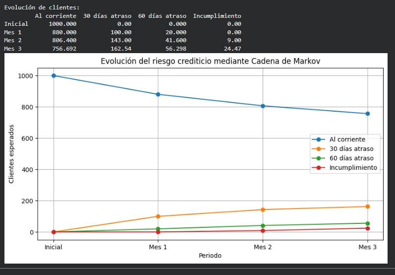
Interpretación de la gráfica: Evolución de los clientes a través del tiempo
La gráfica muestra cómo puede cambiar la situación de pago de un grupo de 1,000 clientes durante los siguientes meses.
Al inicio, todos los clientes se encuentran pagando correctamente. Sin embargo, con el paso del tiempo algunos clientes pueden comenzar a presentar atrasos, mientras que otros continúan manteniendo un buen comportamiento.
Clientes que continúan pagando correctamente
La línea azul representa a los clientes que mantienen sus pagos al día.
Al comenzar el análisis existen:
Conforme pasan los meses, algunos clientes presentan dificultades y dejan de formar parte de este grupo.
Después de tres meses, aproximadamente:
Esto indica que la mayoría de los clientes mantiene un buen comportamiento, aunque existe una parte de la cartera que requiere atención.
Clientes con primeros atrasos
La línea naranja representa a los clientes que comienzan a retrasarse en sus pagos.
Este grupo es importante porque muestra las primeras señales de posible problema financiero.
Durante los meses analizados, este grupo aumenta porque algunos clientes que antes pagaban correctamente comienzan a presentar dificultades.
Identificar a estos clientes permite actuar antes de que el problema aumente.
Clientes con atrasos mayores
La línea verde representa a los clientes que llevan más tiempo sin regularizar sus pagos.
Estos clientes requieren mayor seguimiento porque existe una mayor posibilidad de que continúen deteriorando su situación.
Clientes que dejan de pagar
La línea roja representa a los clientes que llegan a una situación donde ya no cumplen con sus pagos.
Al inicio no existen clientes en esta situación, pero con el paso del tiempo algunos clientes pueden avanzar desde pequeños atrasos hasta un incumplimiento.
¿Qué significa para el negocio?
La gráfica permite entender cómo puede evolucionar una cartera de clientes y detectar cambios antes de que representen un problema mayor.
- Permite identificar clientes que empiezan a tener dificultades.
- Ayuda a tomar acciones antes de que aumenten los atrasos.
- Permite planear estrategias de seguimiento y cobranza.
- Ayuda a estimar posibles pérdidas futuras.
La gráfica muestra que una cartera de clientes puede cambiar con el tiempo. Algunos clientes permanecen estables, mientras que otros pueden pasar por diferentes niveles de atraso hasta llegar a una situación crítica.
Analizar esta evolución ayuda al banco a tomar decisiones anticipadas y reducir riesgos financieros.
Cadenas de Markov Monte Carlo (MCMC)
Las Cadenas de Markov Monte Carlo (MCMC) son un método estadístico utilizado para estimar valores desconocidos cuando existe incertidumbre y no es posible obtener una solución mediante una fórmula matemática directa.
Este método combina dos herramientas importantes: las Cadenas de Markov, que generan una secuencia donde cada nuevo valor depende únicamente del valor anterior, y los Métodos Monte Carlo, que utilizan miles de simulaciones para analizar diferentes escenarios posibles.
Al combinar ambas técnicas, MCMC construye una cadena de simulaciones que, poco a poco, se aproxima al comportamiento real del fenómeno que se desea estudiar.
En pocas palabras, mientras que un promedio tradicional entrega un único resultado, MCMC permite conocer cuáles son los valores más probables y qué tan probable es que ocurran.
Nota: Imagine que una empresa desea conocer la demanda promedio real de un producto. Las ventas cambian constantemente debido a promociones, temporadas, clima o preferencias de los clientes. MCMC ayuda a estimar cuál es la demanda más probable considerando toda esa incertidumbre.
1. ¿Cómo funciona MCMC?
El procedimiento comienza con una estimación inicial del valor que se desea calcular. Posteriormente, el algoritmo genera una nueva estimación utilizando la anterior como referencia.
Este proceso se repite miles de veces hasta construir una cadena de simulaciones.
Estimación inicial
↓
Nueva estimación
↓
Nueva estimación
↓
Nueva estimación
↓
...
↓
Distribución aproximada
Después de miles de iteraciones, la mayoría de las simulaciones comienza a concentrarse alrededor del valor más probable.
2. Propiedad de Markov
La característica principal de MCMC es que cada nueva simulación depende únicamente de la simulación anterior.
$$ P(X_{t+1}\mid X_t) $$
Donde:
- Xt = Simulación actual.
- Xt+1 = Nueva simulación.
- P = Probabilidad de generar el siguiente valor.
Lo importante es que no es necesario recordar todas las simulaciones anteriores; únicamente se utiliza la simulación actual para generar la siguiente.
3. Forma simplificada (uso práctico)
En la práctica, MCMC puede entenderse como una búsqueda gradual del valor más probable.
120 ↓ 124 ↓ 128 ↓ 131 ↓ 129 ↓ 130 ↓ 132 ↓ 130 ↓ 131
Cada número representa una posible estimación del parámetro que se desea calcular. Conforme aumentan las simulaciones, los valores comienzan a estabilizarse alrededor de la mejor estimación.
4. Interpretación operativa
La idea de MCMC puede resumirse de la siguiente manera:
Donde:
- Estimación anterior: Valor obtenido en la simulación previa.
- Pequeña variación: Cambio generado aleatoriamente.
- Nueva estimación: Posible valor del parámetro.
Después de miles de simulaciones se obtiene una distribución de los valores más probables.
5. Aplicaciones de MCMC
| Área | Uso principal | Ejemplo | Beneficio |
|---|---|---|---|
| Retail | Estimación de demanda | Demanda real de un SKU | Mejor planeación del inventario. |
| Supply Chain | Inventarios | Stock de seguridad | Reducir desabastos. |
| Finanzas | Riesgo | Estimación de pérdidas | Mejor administración del riesgo. |
| Ciencia de Datos | Modelos Bayesianos | Estimación de parámetros | Mayor precisión en los modelos. |
¿Qué es una simulación?
Una simulación representa un posible escenario del problema que se está analizando.
En términos sencillos:
Por ejemplo, la demanda diaria de un producto podría generar la siguiente cadena de estimaciones:
126 ↓ 130 ↓ 128 ↓ 132 ↓ 129 ↓ 131 ↓ 130 ↓ 133 ↓ 130
Después de miles de simulaciones, los valores más frecuentes representan la estimación más probable de la demanda.
Diferencia importante
Forecast
Un modelo de Forecast intenta estimar un único valor futuro.
Ejemplo:
Monte Carlo
Monte Carlo genera miles de escenarios completamente independientes entre sí.
125 150 138 142 130 145 136 ...
MCMC
MCMC también genera miles de escenarios, pero cada uno utiliza la simulación anterior para generar la siguiente.
125 ↓ 127 ↓ 129 ↓ 131 ↓ 130 ↓ 132 ↓ 131 ↓ 130 ↓ 129
Conforme aumenta el número de simulaciones, la cadena comienza a concentrarse alrededor del valor más probable.
Mientras que un Forecast entrega un único valor esperado y Monte Carlo genera escenarios independientes, las Cadenas de Markov Monte Carlo (MCMC) construyen una cadena de simulaciones relacionadas entre sí para aproximar la distribución de un valor desconocido. Esto permite medir tanto el valor más probable como la incertidumbre asociada a la estimación.
Ejemplo: Estimación de la demanda de un producto mediante MCMC
Una empresa de retail desea conocer la demanda promedio diaria de uno de sus productos más vendidos. Aunque cuenta con información histórica de ventas, existe incertidumbre debido a promociones, temporadas, cambios en el comportamiento de los clientes y factores externos.
El objetivo es estimar cuál es la demanda más probable del producto para tomar mejores decisiones de compra y abastecimiento.
Información disponible
Durante una semana se registraron las siguientes ventas:
| Día | Ventas |
|---|---|
| Lunes | 120 |
| Martes | 135 |
| Miércoles | 128 |
| Jueves | 142 |
| Viernes | 130 |
| Sábado | 126 |
| Domingo | 138 |
Modelo matemático
Se supone que las ventas diarias siguen una distribución normal:
$$ X_i \sim N(\mu,\sigma^2) $$Donde:
- Xi = Ventas observadas.
- μ = Demanda promedio del producto (desconocida).
- σ = Variabilidad de las ventas.
El parámetro que queremos estimar es:
$$ \mu $$Es decir, conocer cuál es la demanda promedio más probable del producto.
¿Qué hace MCMC?
Como la distribución exacta de la demanda es desconocida, MCMC comienza con una estimación inicial y posteriormente genera miles de nuevas estimaciones.
Cada nueva estimación depende de la anterior, formando una cadena de simulaciones.
Estimación inicial
↓
120
↓
124
↓
128
↓
131
↓
129
↓
130
↓
132
↓
...
Después de miles de iteraciones, las estimaciones comienzan a concentrarse alrededor del valor más probable.
Distribución posterior
MCMC busca aproximar la siguiente distribución:
$$ P(\mu|X) $$Esta expresión representa la probabilidad de que la demanda promedio sea μ, considerando la información observada X.
Después de ejecutar 10,000 simulaciones se obtiene:
$$ \mu \approx 130 $$Además, el modelo estima que existe aproximadamente un 95% de probabilidad de que la demanda promedio se encuentre entre:
$$ 125 \leq \mu \leq 135 $$Interpretación de negocio
En lugar de asumir que el producto venderá exactamente 130 unidades todos los días, MCMC permite conocer un rango de valores probables considerando la incertidumbre del mercado.
Con esta información la empresa puede planificar mejor sus niveles de inventario y reducir el riesgo de tomar decisiones únicamente con un promedio histórico.
¿Cómo ayuda al negocio?
| Aplicación | Beneficio |
|---|---|
| Planeación de compras | Comprar cantidades más cercanas a la demanda real. |
| Inventario | Reducir el riesgo de quedarse sin producto. |
| Costos | Evitar compras excesivas y costos de almacenamiento. |
| Nivel de servicio | Mantener una mayor disponibilidad para los clientes. |
Conclusión
Mientras que un promedio histórico ofrece un único valor de ventas, MCMC estima un conjunto de valores probables, permitiendo incorporar la incertidumbre del mercado en la toma de decisiones.
Gracias a esta información, la empresa puede realizar una mejor planeación del inventario, reducir pérdidas por desabasto y optimizar las compras de sus productos.
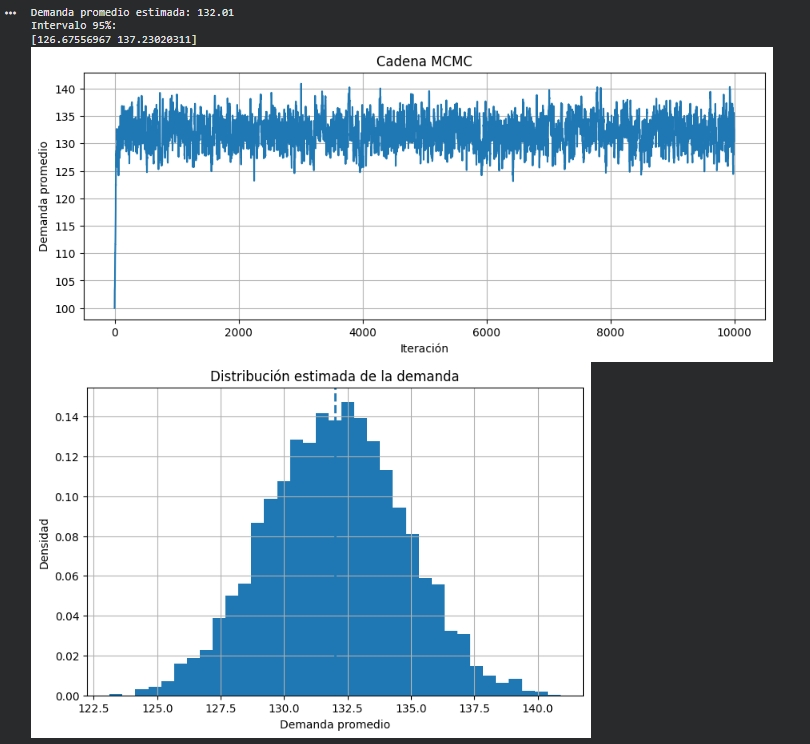
Interpretación de los resultados
Esta imagen muestra una estimación de la demanda promedio de un producto utilizando miles de simulaciones. El objetivo es conocer cuál podría ser la demanda más probable y el rango en el que normalmente se moverían las ventas.
Demanda promedio estimada
Después de realizar miles de simulaciones, el modelo estima que la demanda promedio del producto es de aproximadamente:
Esto significa que, considerando toda la información disponible, ese es el valor más probable de ventas para el producto.
Además, el modelo indica que la demanda normalmente se encontrará entre:
Este rango ayuda a comprender que las ventas pueden variar ligeramente de un día a otro y que no siempre serán exactamente iguales.
Gráfica superior
La gráfica superior muestra cómo el modelo va ajustando poco a poco la estimación de la demanda.
Al principio las estimaciones cambian considerablemente porque el modelo aún está explorando diferentes posibilidades. Conforme avanza el proceso, los valores comienzan a concentrarse alrededor de una misma zona.
Cuando la línea deja de presentar cambios grandes y oscila alrededor de un valor similar, significa que el modelo ya encontró una estimación estable de la demanda.
En este caso, la mayor parte de las simulaciones se mantiene cerca de las 132 unidades, lo que indica que esa es la estimación más representativa.
Gráfica inferior
La gráfica inferior muestra cuántas veces apareció cada posible valor de la demanda durante todas las simulaciones.
Las barras más altas representan los valores que ocurrieron con mayor frecuencia, mientras que las barras más pequeñas corresponden a valores menos comunes.
Puede observarse que la mayoría de las simulaciones se concentran alrededor de las 132 unidades, mientras que valores muy bajos o muy altos aparecen con mucha menor frecuencia.
Esto indica que la demanda más probable se encuentra cerca del centro de la gráfica.
¿Cómo ayuda al negocio?
En lugar de asumir que siempre se venderán exactamente 132 unidades, el modelo permite conocer el rango de ventas que es más probable esperar.
Con esta información la empresa puede:
- Planificar mejor las compras de mercancía.
- Reducir el riesgo de quedarse sin inventario.
- Evitar comprar más productos de los necesarios.
- Definir niveles de inventario con mayor confianza.
- Tomar decisiones considerando la variación natural de la demanda.
Las simulaciones muestran que las ventas no siempre serán exactamente iguales, pero sí permiten identificar cuál es el comportamiento más probable del producto. Gracias a esta información, la empresa puede planificar su inventario con mayor seguridad y reducir tanto el riesgo de desabasto como el exceso de existencias.
Modelos Jerárquicos Bayesianos
Los Modelos Jerárquicos Bayesianos (Hierarchical Bayesian Models) son una técnica estadística utilizada para analizar datos que se encuentran organizados en diferentes niveles o grupos.
A diferencia de un modelo tradicional, que supone que todos los datos provienen de una única población, un modelo jerárquico reconoce que cada grupo puede tener características propias, pero también compartir información con los demás grupos.
Por ejemplo, una cadena de retail puede tener cientos de sucursales. Cada una atiende distintos clientes y presenta un comportamiento diferente en ventas. Sin embargo, todas pertenecen a la misma empresa y comparten patrones generales de demanda. Un Modelo Jerárquico Bayesiano utiliza ambas fuentes de información para obtener estimaciones más confiables.
En pocas palabras, este modelo combina la información individual de cada grupo con la información global de toda la población para mejorar las estimaciones.
Un grupo puede representar una tienda, una sucursal bancaria, un hospital, una ciudad, un proveedor o cualquier conjunto de datos que pertenezca a una misma organización pero que tenga características propias.
1. ¿Qué significa "Jerárquico"?
La palabra jerárquico significa que los datos están organizados en diferentes niveles.
En un negocio es común encontrar estructuras como la siguiente:
| Nivel | Ejemplo | Descripción |
|---|---|---|
| Nivel 1 | Empresa | Representa el comportamiento general del negocio. |
| Nivel 2 | Sucursales | Cada sucursal posee características propias. |
| Nivel 3 | Ventas de cada sucursal | Son los datos observados diariamente. |
Cada nivel aporta información al siguiente, permitiendo obtener estimaciones más precisas.
2. ¿Qué significa "Bayesiano"?
La parte bayesiana consiste en actualizar una estimación conforme se obtiene nueva información.
| Momento | Estimación | Interpretación |
|---|---|---|
| Estimación inicial | 120 unidades | Estimación basada en la información disponible. |
| Después de nuevas ventas | 128 unidades | La estimación mejora con nueva evidencia. |
| Información adicional | 131 unidades | La predicción continúa refinándose. |
A diferencia de los modelos clásicos, un modelo bayesiano aprende continuamente conforme se incorpora nueva información.
3. Matemáticas del Modelo
Supongamos que existen N sucursales. Cada sucursal tiene una demanda promedio distinta.
Las ventas observadas de la sucursal i se representan mediante:
$$ y_i \sim N(\theta_i,\sigma^2) $$Donde:
- yi = Ventas observadas.
- θi = Demanda promedio de la sucursal.
- σ² = Variabilidad de las ventas.
Cada sucursal tiene un comportamiento propio. Sin embargo, todas pertenecen a la misma empresa. Por ello se supone que todas las demandas promedio provienen de una distribución general.
$$ \theta_i \sim N(\mu,\tau^2) $$Donde:
- μ = Demanda promedio de toda la empresa.
- τ² = Variabilidad entre sucursales.
La primera ecuación describe el comportamiento de cada sucursal de forma individual. La segunda ecuación conecta todas las sucursales mediante una distribución común. Gracias a ello, una sucursal con pocos datos puede aprovechar la información proveniente del resto de la empresa para obtener una mejor estimación.
4. Aplicaciones
| Área | Uso principal | Ejemplo | Beneficio |
|---|---|---|---|
| Retail | Ventas por sucursal | Estimación de demanda por tienda. | Mejor abastecimiento. |
| Banca | Riesgo crediticio | Incumplimiento por sucursal. | Mejor administración del riesgo. |
| Salud | Hospitales | Recuperación de pacientes. | Planeación médica. |
| Marketing | Campañas | Conversión por región. | Optimización de campañas. |
5. ¿Por qué utilizar un Modelo Jerárquico?
Supongamos que una empresa tiene cuatro sucursales.
| Sucursal | Ventas promedio |
|---|---|
| Norte | 140 |
| Centro | 135 |
| Sur | 132 |
| Online | 138 |
Si una sucursal tiene pocos datos, analizarla de forma aislada puede producir estimaciones poco confiables. Un Modelo Jerárquico Bayesiano combina la información de esa sucursal con la información del resto de la empresa para generar una estimación más estable.
Mientras un modelo tradicional analiza cada grupo de forma independiente, un Modelo Jerárquico Bayesiano permite que los grupos compartan información entre sí. Esto produce estimaciones más precisas, especialmente cuando algunos grupos tienen pocos datos disponibles.
Ejemplo: Riesgo de crédito mediante un Modelo Jerárquico Bayesiano
Un banco desea estimar la tasa de incumplimiento de sus sucursales. Durante un mes analizó 200 créditos distribuidos en cuatro sucursales. Cada sucursal tiene un comportamiento diferente, pero todas pertenecen al mismo banco, por lo que pueden compartir información para obtener mejores estimaciones.
Información observada
| Sucursal | Créditos | Incumplieron |
|---|---|---|
| Norte | 50 | 5 |
| Centro | 70 | 8 |
| Sur | 30 | 6 |
| Poniente | 50 | 4 |
| Total | 200 | 23 |
Paso 1. Estimar cada sucursal por separado
Cada sucursal tiene su propia tasa de incumplimiento, la cual se representa mediante:
$$ y_i \sim N(\theta_i,\sigma^2) $$Donde:
- yi = créditos observados.
- θi = tasa de incumplimiento de la sucursal.
- σ² = variabilidad entre los clientes.
Por ejemplo, para la sucursal Norte:
$$ \theta_{\text{Norte}} = \frac{5}{50} = 0.10 = 10\% $$Repitiendo el cálculo para todas las sucursales:
| Sucursal | Cálculo | θi |
|---|---|---|
| Norte | 5 / 50 | 10% |
| Centro | 8 / 70 | 11.4% |
| Sur | 6 / 30 | 20% |
| Poniente | 4 / 50 | 8% |
Paso 2. Calcular el promedio del banco
Como todas las sucursales pertenecen al mismo banco, el modelo supone que comparten un comportamiento general:
$$ \theta_i \sim N(\mu,\tau^2) $$Donde:
- μ = tasa promedio de incumplimiento del banco.
- τ² = diferencia entre sucursales.
Primero calculamos la tasa promedio del banco:
$$ \mu= \frac{23}{200} = 0.115 = 11.5\% $$Esto significa que, considerando todas las sucursales, aproximadamente el 11.5% de los créditos presentaron incumplimiento.
Paso 3. Ajuste del Modelo Jerárquico Bayesiano
El modelo combina la información de cada sucursal con el promedio general del banco para obtener una estimación más estable.
En este ejemplo, el valor 0.67 representa el peso que recibe la información de la sucursal al combinarse con la información de todo el banco.
Para fines didácticos, el peso puede calcularse mediante:
$$ w=\frac{n_i}{n_i+\lambda} $$Donde:
- \(n_i\): Número de créditos analizados en la sucursal.
- \(\lambda\): Constante que controla cuánto influye la información general del banco.
Para la Sucursal Norte se analizaron 50 créditos. Si se utiliza una constante de \(\lambda=25\), el peso es:
$$ w=\frac{50}{50+25} $$ $$ =\frac{50}{75} $$ $$ =0.667\approx0.67 $$Esto significa que aproximadamente el 67% de la estimación proviene de la información propia de la sucursal, mientras que el 33% restante proviene del comportamiento general del banco.
Nota: En un Modelo Jerárquico Bayesiano real, este peso no se fija manualmente. El algoritmo de inferencia bayesiana (como MCMC) lo estima automáticamente a partir de los datos. Aquí se utiliza esta fórmula únicamente para facilitar la comprensión del concepto.
Por ejemplo, la sucursal Sur presenta un incumplimiento del 20%, pero únicamente cuenta con 30 créditos. Al tener pocos datos, el modelo considera también la información del resto del banco y ajusta ligeramente la estimación hacia el promedio general (11.5%).
¿Cómo se obtiene la estimación ajustada?
En un Modelo Jerárquico Bayesiano, la estimación ajustada combina la información propia de un grupo (por ejemplo, una sucursal) con la información general de toda la organización. De esta forma, cuando una sucursal tiene pocos datos, su estimación se acerca al promedio del banco; cuando tiene muchos datos, predomina su propia información.
Una forma sencilla de representar este ajuste es mediante la siguiente expresión:
$$ \theta_i^{*}=w\theta_i+(1-w)\mu $$Donde:
- \(\theta_i^{*}\): Estimación ajustada de la sucursal.
- \(\theta_i\): Estimación individual de la sucursal.
- \(\mu\): Promedio general del banco.
- \(w\): Peso asignado a la información de la sucursal (entre 0 y 1).
Supongamos que una sucursal presenta una tasa de incumplimiento del 10%, mientras que el promedio de todo el banco es 11.5%. Como la sucursal tiene pocos datos, se utiliza un peso de 0.67.
Sustituyendo en la fórmula:
$$ \theta_i^{*}=0.67(0.10)+(1-0.67)(0.115) $$ $$ =0.67(0.10)+0.33(0.115) $$ $$ =0.067+0.03795 $$ $$ =0.10495\approx0.105 $$ $$ \boxed{\theta_i^{*}=10.5\%} $$La estimación ajustada es 10.5%. Este valor se encuentra entre la estimación propia de la sucursal (10%) y el promedio del banco (11.5%), ya que el modelo combina ambas fuentes de información para obtener una estimación más estable.
Resultado
| Sucursal | Estimación individual (\(\theta_i\)) | Promedio del banco (\(\mu\)) | Estimación ajustada (\(\theta_i^*\)) |
|---|---|---|---|
| Norte | 10.0% | 11.5% | 10.5% |
La sucursal tenía una estimación inicial de 10%. Sin embargo, al considerar también el comportamiento del resto del banco, el modelo ajusta la estimación a 10.5%. Esto permite obtener resultados más confiables, especialmente cuando una sucursal cuenta con poca información.
| Sucursal | Estimación individual | μ del banco | Estimación ajustada |
|---|---|---|---|
| Norte | 10.0% | 11.5% | 10.5% |
| Centro | 11.4% | 11.5% | 11.2% |
| Sur | 20.0% | 11.5% | 15.8% |
| Poniente | 8.0% | 11.5% | 8.7% |
Primero se calcula la tasa de incumplimiento de cada sucursal de manera individual. Después se obtiene el promedio general del banco (11.5%). Finalmente, el Modelo Jerárquico Bayesiano combina ambas fuentes de información para obtener estimaciones más confiables, especialmente en sucursales que cuentan con pocos créditos analizados.
En un proyecto real, este ajuste se calcula mediante algoritmos de inferencia bayesiana como MCMC. En este ejemplo, los valores ajustados se muestran únicamente con fines didácticos para comprender cómo el modelo utiliza tanto la información individual como la información global del banco.
Resultados obtenidos en Python
Tasa individual por sucursal
| Sucursal | θᵢ (Tasa de incumplimiento) |
|---|---|
| Norte | 10.00% |
| Centro | 11.43% |
| Sur | 20.00% |
| Poniente | 8.00% |
Promedio general del banco (μ)
El promedio general del banco se calcula tomando todos los créditos analizados:
$$ \mu=\frac{Créditos\ incumplidos}{Total\ de\ créditos} $$Sustituyendo los valores:
$$ \mu=\frac{23}{200}=0.115 $$Resultado: 11.50%
Resultado del Modelo Jerárquico Bayesiano
| Sucursal | θᵢ Individual | λ (peso de información propia) | θ ajustada |
|---|---|---|---|
| Norte | 10.00% | 0.50 | 10.75% |
| Centro | 11.43% | 0.58 | 11.46% |
| Sur | 20.00% | 0.38 | 14.69% |
| Poniente | 8.00% | 0.50 | 9.75% |
El modelo combina la información propia de cada sucursal con el comportamiento general del banco.
- La sucursal Sur tenía un incumplimiento observado de 20%, pero al contar únicamente con 30 créditos, el modelo considera también la información del banco y ajusta el riesgo a 14.69%.
- La sucursal Centro tenía suficientes datos y un comportamiento cercano al promedio, por lo que su estimación casi no cambia.
- Las sucursales con pocos datos reciben mayor influencia del promedio general del banco.
En términos de negocio, el Modelo Jerárquico Bayesiano permite obtener estimaciones más estables y evitar tomar decisiones basadas únicamente en grupos pequeños de información.
El Modelo Jerárquico Bayesiano es especialmente útil cuando existen grupos con pocos datos, por ejemplo una sucursal con pocos créditos o una tienda con pocas ventas.
Cuando una organización tiene muchos datos por grupo, la información individual de cada grupo tiene mayor peso y el ajuste hacia el promedio general es menor.
En cambio, cuando un grupo tiene poca información, el modelo utiliza también el comportamiento general de la empresa para obtener una estimación más estable.
Modelos Mixtos (Mixed Models)
Los Modelos Mixtos son una técnica estadística que permite analizar datos donde existen diferentes grupos o niveles que pueden tener comportamientos propios, pero que al mismo tiempo comparten características generales.
La idea principal es combinar dos tipos de efectos:
- Efectos fijos: representan comportamientos generales que aplican para todos los grupos.
- Efectos aleatorios: representan diferencias propias de cada grupo o individuo.
Una cadena de supermercados analiza las ventas de 100 tiendas. Todas las tiendas pertenecen a la misma empresa, pero cada tienda tiene características diferentes: ubicación, clientes, tamaño y comportamiento de compra.
Un modelo tradicional analizaría todas las tiendas como si fueran iguales. Un modelo mixto reconoce que cada tienda puede tener su propio comportamiento.
¿Cuál es la idea general?
Un Modelo Mixto busca responder una pregunta como:
¿Por qué algunos grupos tienen resultados diferentes si todos pertenecen al mismo sistema?
Por ejemplo:
| Tienda | Ventas promedio |
|---|---|
| Norte | 1200 unidades |
| Centro | 1800 unidades |
| Sur | 900 unidades |
El modelo intenta separar:
- El comportamiento general de todas las tiendas.
- La diferencia particular de cada tienda.
¿Cómo funciona matemáticamente?
Un modelo mixto se representa generalmente como:
$$ Y = X\beta + Zb + \epsilon $$
Donde:
- Y: Resultado que queremos explicar (ventas, demanda, incumplimiento).
- Xβ: Efectos generales que afectan a todos los grupos.
- Zb: Diferencias propias de cada grupo.
- ε: Variación que no puede explicar el modelo.
¿Los datos deben seguir una distribución normal?
| Tipo de modelo | Normalidad | Ejemplo |
|---|---|---|
| Modelo Mixto Lineal | Sí, normalmente supone errores con distribución normal. | Ventas mensuales, ingresos, demanda. |
| Modelo Mixto Generalizado | No necesariamente. Puede trabajar con datos no normales. | Probabilidad de compra, incumplimiento de crédito. |
En resumen:
Si los datos no siguen una distribución normal, se utilizan modelos mixtos generalizados.
Comparación con otros métodos
| Método | ¿Cuándo usarlo? | Ejemplo de negocio |
|---|---|---|
| Regresión tradicional | Cuando todos los datos tienen comportamiento similar. | Predecir ventas generales de una empresa. |
| Modelo Mixto | Cuando existen grupos con diferencias propias. | Ventas por tienda considerando diferencias entre sucursales. |
| Modelo No Paramétrico | Cuando no se conoce la distribución de los datos. | Comparar comportamiento de clientes sin asumir una forma específica. |
Aplicaciones en Ciencia de Datos y Negocio
| Área | Uso | Beneficio |
|---|---|---|
| Retail | Ventas por tienda o región | Mejores pronósticos de demanda |
| Banca | Riesgo por sucursal | Mejor estimación del riesgo |
| Marketing | Respuesta por segmento | Campañas más eficientes |
Un Modelo Mixto sirve cuando los datos tienen grupos diferentes. Permite saber qué parte del comportamiento es general y qué parte depende de cada grupo.
Por ejemplo, ayuda a una empresa a entender si una diferencia en ventas se debe al negocio completo o simplemente a que una tienda, región o sucursal funciona diferente.
Ejemplo: Modelo Mixto aplicado a Retail (Ventas por tienda)
Una cadena de retail quiere analizar las ventas mensuales después de lanzar una promoción. El objetivo es separar dos comportamientos:
- Comportamiento general: cómo vende la empresa en promedio considerando la marca, la promoción y el mercado.
- Comportamiento individual: cómo cada tienda se diferencia del promedio debido a sus propias características como ubicación, clientes y antigüedad.
Una tienda con muchos años de información tiene datos confiables. Una tienda nueva tiene poca información, por lo que el modelo no toma sus primeros resultados como definitivos y los combina con el comportamiento general de la empresa.
Información observada
| Tienda | Promoción | Ventas observadas | Historial |
|---|---|---|---|
| Norte | Sí | 1,200 unidades | 5 años |
| Centro | Sí | 1,500 unidades | 8 años |
| Sur | Sí | 900 unidades | 4 años |
| Oeste (Nueva) | Sí | 1,400 unidades | 2 semanas |
1. Fórmula del Modelo Mixto
El modelo se representa mediante:
$$ Y = X\beta + Zb + \varepsilon $$
| Elemento | Significado sencillo |
|---|---|
| Y | Ventas observadas de cada tienda. |
| Xβ | Comportamiento general de la empresa. |
| Zb | Diferencia propia de cada tienda. |
| ε | Factores inesperados del mes. |
2. Calcular el comportamiento general de la empresa
Primero utilizamos las tiendas con historial suficiente:
$$ X\beta= \frac{1200+1500+900}{3} $$
$$ X\beta= \frac{3600}{3} $$
$$ X\beta=1200 $$
La cadena vende aproximadamente 1,200 unidades por tienda. Este valor representa el comportamiento promedio de la empresa.
3. Calcular la diferencia de cada tienda
La diferencia inicial se obtiene mediante:
$$ b_i=Ventas_i-X\beta $$
Tienda Norte
$$ b=1200-1200=0 $$La tienda Norte se comporta igual que el promedio.
Tienda Centro
$$ b=1500-1200=300 $$La tienda Centro vende 300 unidades más que el promedio.
Tienda Sur
$$ b=900-1200=-300 $$La tienda Sur vende 300 unidades menos que el promedio.
4. Ajuste para una tienda nueva
La tienda Oeste tiene únicamente 2 semanas de información. Sus ventas fueron:
$$ Ventas=1400 $$La diferencia observada sería:
$$ b=1400-1200 $$ $$ b=200 $$Pero como la tienda es nueva, el modelo no confía completamente en ese dato. Supongamos que solo se considera confiable el 20%:
$$ b_{ajustado}=200 \times 0.20 $$ $$ b_{ajustado}=40 $$La diferencia real estimada de la tienda sería:
$$ b=+40 $$5. Predicción final del Modelo Mixto
La predicción se obtiene con:
$$ Predicción=X\beta+b $$
| Tienda | Ventas observadas | Promedio empresa | Efecto ajustado | Predicción |
|---|---|---|---|---|
| Norte | 1200 | 1200 | 0 | 1200 |
| Centro | 1500 | 1200 | +300 | 1500 |
| Sur | 900 | 1200 | -300 | 900 |
| Oeste Nueva | 1400 | 1200 | +40 | 1240 |
¿Qué aporta realmente el Modelo Mixto?
Si solamente observamos la tienda Oeste, podríamos pensar:
"Esta tienda vende 1,400 unidades, debemos aumentar mucho el inventario".
Sin embargo, el modelo considera que solo tiene dos semanas de información. Por eso combina:
- La información inicial de la tienda.
- La experiencia acumulada de toda la cadena.
Resultado:
La estimación baja de 1,400 a 1,240 unidades, evitando tomar decisiones exageradas por un posible pico temporal.
Aplicaciones en negocio
| Área | Uso | Beneficio |
|---|---|---|
| Retail | Ventas por tienda | Mejor pronóstico de demanda |
| Inventario | Demanda por sucursal | Evitar exceso o faltantes |
| Planeación | Comparar tiendas | Evaluaciones más justas |
Un Modelo Mixto separa qué parte del resultado pertenece al comportamiento general de la empresa y qué parte depende de cada tienda.
En retail ayuda a evitar decisiones equivocadas porque una tienda nueva no se evalúa igual que una tienda con años de historial.
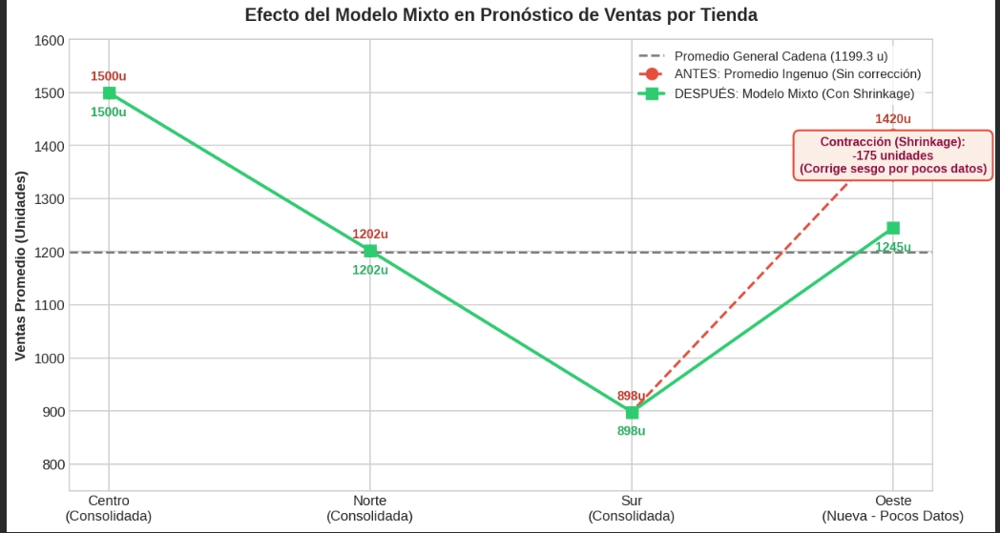
Interpretación de la gráfica del Modelo Mixto aplicado a Retail
La gráfica muestra cómo un Modelo Mixto compara las ventas observadas de cada tienda con una estimación ajustada por el modelo.
La idea principal es separar dos comportamientos:
- Comportamiento general de la empresa: cuánto vende una tienda promedio dentro de la cadena.
- Comportamiento propio de cada tienda: si una sucursal vende más o menos debido a su ubicación, clientes o antigüedad.
Toda la cadena de tiendas vende aproximadamente:
1,199 unidades al mes
Este valor representa el comportamiento promedio de toda la empresa y corresponde a la línea de referencia que aparece en la gráfica.
Es decir, antes de analizar cada tienda, el modelo calcula:
$$ Promedio\ General = \frac{Ventas\ Totales}{Número\ de\ Tiendas} $$2. Tiendas consolidadas: Centro, Norte y Sur
Estas tiendas tienen varios años operando, por lo que cuentan con mucha información histórica. Debido a esto, el modelo confía principalmente en sus propios datos.
| Tienda | Estimación simple (Antes) | Estimación Modelo Mixto (Después) | Interpretación |
|---|---|---|---|
| Centro | 1,500 unidades | 1,500 unidades | No cambia porque existe suficiente información para confiar en sus ventas. |
| Norte | 1,202 unidades | 1,202 unidades | Su comportamiento está muy cerca del promedio de la empresa. |
| Sur | 898 unidades | 898 unidades | Vende menos, pero sus datos son constantes y confiables. |
Cuando una tienda tiene suficiente historial, el modelo prácticamente mantiene sus valores. Esto sucede porque existe evidencia suficiente para confiar en su comportamiento real.
3. La tienda nueva: Oeste
La tienda Oeste representa el caso donde el Modelo Mixto tiene mayor utilidad.
La sucursal acaba de abrir y solamente tiene pocos días de información. Durante ese periodo tuvo ventas altas, por lo que un cálculo simple podría generar una expectativa demasiado optimista.
Estimación simple (sin Modelo Mixto)
Si únicamente observamos sus primeros días:
$$ Ventas\ Observadas = 1,420\ unidades $$El negocio podría pensar:
Pero existe un problema: todavía no sabemos si esas ventas representan el comportamiento normal de la tienda o si fueron resultado de una inauguración, promoción o evento temporal.
Estimación con Modelo Mixto
El modelo combina dos fuentes de información:
$$ Ventas\ Final = (Peso\ de\ la\ tienda \times Ventas\ tienda) + (Peso\ empresa \times Promedio\ empresa) $$Para una tienda nueva se da menos importancia a sus propios datos porque todavía son pocos.
Ejemplo: $$ Ventas\ Final = (0.20 \times 1420) + (0.80 \times 1199) $$ $$ =284+959.2 $$ $$ =1243.2 $$Estimación final ≈ 1,245 unidades
| Concepto | Resultado |
|---|---|
| Estimación inicial | 1,420 unidades |
| Corrección del modelo | -175 unidades |
| Estimación final Modelo Mixto | 1,245 unidades |
Resumen de negocio
Un Modelo Mixto ayuda a tomar mejores decisiones porque combina la información general de la empresa con el comportamiento específico de cada tienda.
- Las tiendas antiguas mantienen sus valores porque tienen suficiente historial.
- Las tiendas nuevas son ajustadas porque pocos datos pueden generar conclusiones equivocadas.
- El modelo evita comprar demasiado inventario basándose únicamente en resultados temporales.
En pocas palabras: el modelo permite estimar ventas más realistas y reducir decisiones basadas en información insuficiente.
Teoría Asintótica en Estadística y Ciencia de Datos
La Teoría Asintótica es una rama de la estadística que estudia qué ocurre con los modelos y estimaciones cuando aumenta la cantidad de datos disponibles.
Su idea principal es:
1. ¿Qué significa comportamiento asintótico?
La palabra asintótico hace referencia a observar qué ocurre cuando el tamaño de la muestra aumenta:
$$ n \rightarrow \infty $$Donde:
- n: cantidad de datos analizados.
- ∞: representa una cantidad muy grande de observaciones.
Con pocos datos, las estimaciones pueden cambiar mucho porque están afectadas por variaciones aleatorias o situaciones poco comunes.
Cuando aumentan los datos, esos efectos se compensan y el resultado se vuelve más confiable.
2. Intuición: El impacto del volumen de datos
Supongamos que una empresa quiere conocer la demanda promedio mensual de un producto.
Muestra pequeña (pocos datos)
Se observan únicamente 5 ventas:
| Día | Ventas |
|---|---|
| 1 | 100 |
| 2 | 150 |
| 3 | 90 |
| 4 | 180 |
| 5 | 120 |
El promedio es:
$$ \bar{x} = \frac{100+150+90+180+120}{5} $$ $$ \bar{x}=128 $$Al tener pocos datos, una venta poco común puede modificar mucho el resultado. La estimación tiene mucha incertidumbre.
Muestra grande (más información)
Ahora la empresa analiza 1,000 días históricos:
$$ \bar{x} = \frac{\sum_{i=1}^{1000}x_i}{1000} $$ Resultado: $$ \bar{x}=118 $$La estimación cambia de 128 a 118 unidades porque ahora existen suficientes datos para observar el comportamiento real.
| Muestra | Datos analizados | Demanda estimada | Incertidumbre |
|---|---|---|---|
| Pequeña | 10 días | 111 unidades | Alta |
| Grande | 1,000 días | 118 unidades | Baja |
3. Ejemplo aplicado a una cadena de tiendas
Una empresa desea estimar la venta promedio de un producto considerando sus 500 sucursales.
| Tiendas analizadas | Venta promedio estimada | Interpretación |
|---|---|---|
| 5 | 950 unidades | Alta variación por pocos datos |
| 20 | 1,080 unidades | La estimación empieza a estabilizarse |
| 100 | 1,150 unidades | Más cercana al comportamiento real |
| 500 | 1,198 unidades | Estimación estable |
El comportamiento esperado es que la estimación se acerque progresivamente al valor real:
$$ \bar{x}\rightarrow \mu $$Es decir:
4. Fundamento matemático
Ley de los Grandes Números
Explica que un estimador mejora conforme aumenta la cantidad de observaciones.
$$ \hat{\theta}\rightarrow\theta $$Ejemplo:
- \(\hat{\theta}\): estimación calculada por el modelo.
- \(\theta\): valor real que buscamos conocer.
Teorema del Límite Central
Indica que cuando tenemos muestras grandes, el promedio de los datos tiende a comportarse como una distribución normal.
$$ \bar{x}\approx N(\mu,\frac{\sigma^2}{n}) $$Esto permite calcular:
- Intervalos de confianza.
- Márgenes de error.
- Probabilidad de que una estimación sea correcta.
5. Aplicaciones en Ciencia de Datos y Negocio
| Área | Aplicación | Beneficio |
|---|---|---|
| Retail | Pronóstico de demanda | Evita decisiones basadas en pocos datos |
| Banca | Modelos de riesgo crediticio | Estimaciones más precisas de incumplimiento |
| Modelos Mixtos | Comparar tiendas o grupos | Decidir cuándo confiar en datos individuales |
| Machine Learning | Entrenamiento con grandes datos | Mejor capacidad de generalización |
Conclusión sencilla
La Teoría Asintótica explica por qué los modelos estadísticos mejoran cuando tienen más información.
En negocio significa que una decisión basada en miles de clientes, ventas o productos tiene menos riesgo de estar equivocada que una decisión tomada con pocos datos.
2. Ejemplo de negocio: Estimar el ticket promedio de clientes
Un supermercado quiere conocer cuánto gasta en promedio cada cliente.
El valor real de todos los clientes es desconocido, por lo que se realiza una estimación usando muestras.
| Concepto | Valor |
|---|---|
| Ticket promedio real de todos los clientes (μ) | $250 MXN |
| Variación entre clientes (σ) | $100 MXN |
La empresa no conoce inicialmente los $250 MXN reales, por lo que toma diferentes cantidades de clientes para aproximarse a ese valor.
3. Fórmulas utilizadas
3.1 Media de la muestra
Calcula el gasto promedio observado en los clientes seleccionados.
$$ \bar{X}=\frac{\sum X_i}{n} $$Donde:
- X̄: promedio calculado con los clientes observados.
- Xi: gasto de cada cliente.
- n: número de clientes analizados.
3.2 Error estándar
Mide qué tan inestable puede ser nuestra estimación.
$$ SE=\frac{\sigma}{\sqrt n} $$Interpretación sencilla:
- Si tenemos pocos clientes, existe mucho ruido.
- Si tenemos muchos clientes, el promedio se vuelve más confiable.
3.3 Margen de error
Indica cuánto puede alejarse nuestra estimación del valor real con un nivel de confianza del 95%.
$$ ME=1.96 \times SE $$3.4 Intervalo de confianza
Representa el rango donde probablemente se encuentra el verdadero promedio.
$$ IC=[\bar X-ME,\bar X+ME] $$4. Evolución conforme aumentan los datos
| Clientes analizados | Ticket estimado | Error estándar | Intervalo 95% |
|---|---|---|---|
| 10 | $285 | $31.62 | [$223 , $347] |
| 100 | $254.50 | $10 | [$234.90 , $274.10] |
| 1,000 | $250.80 | $3.16 | [$244.60 , $257] |
| 10,000 | $250.08 | $1 | [$248.12 , $252.04] |
5. Interpretación de resultados
Con pocos clientes (n=10)
El promedio calculado fue de $285 MXN.
La empresa podría pensar que sus clientes gastan mucho más de lo normal, pero realmente fue una muestra pequeña que pudo tener clientes con compras altas.
Con muchos clientes (n=10,000)
El resultado fue $250.08 MXN, prácticamente igual al valor real de $250 MXN.
La información adicional permitió eliminar las variaciones causadas por la casualidad.
6. La regla matemática del crecimiento de datos
El error disminuye según la siguiente relación:
$$ SE=\frac{\sigma}{\sqrt n} $$Esto significa que aumentar datos mejora la precisión, pero no de manera lineal.
| Aumento de datos | Resultado |
|---|---|
| 100 clientes → 400 clientes | El error baja a la mitad |
| 1,000 clientes → 10,000 clientes | La mejora existe, pero es mucho menor |
7. Aplicación en Ciencia de Datos
| Área | Uso | Beneficio |
|---|---|---|
| Retail | Estimar demanda promedio | Evitar decisiones basadas en pocos días de ventas |
| Banca | Calcular riesgo de crédito | Obtener tasas de incumplimiento más confiables |
| Machine Learning | Entrenar modelos con más datos | Mejor capacidad de generalización |
8. Resumen sencillo
La Teoría Asintótica explica que cuando una empresa obtiene más información, sus cálculos se vuelven más confiables porque disminuye el efecto de la casualidad.
En negocios ayuda a saber cuándo una decisión está respaldada por suficientes datos y cuándo todavía existe mucha incertidumbre.